| 項目 | 日本の実態 |
|---|---|
| 部位 | 上部尿路（腎・尿管）が95％以上 |
| 成分 | シュウ酸カルシウム約80％＞リン酸カルシウム＞尿酸5％＞リン酸Mgアンモニウム（感染結石）＞シスチン（1％未満） |
| 性差 | 男：女＝約2.4：1 |
| 好発年齢 | 男性40〜50歳代／女性50〜60歳代 |
| 生涯罹患率 | 男性約15％・女性約7％（半世紀で約3倍に増加） |
| 再発 | 5年で約半数が再発——だから予防指導が必ず問われる |
| 選択肢 | 解説 |
|---|---|
| ａ 好発年齢は20 歳台である。 | 好発年齢は男性が40〜50歳代、女性が50〜60歳代で、20歳台ではない。男性は働き盛りで発症のピークを迎え、女性は閉経後にエストロゲンが減り、尿中クエン酸（結石形成を抑える物質）が減るため遅れてピークが来る。 |
| ｂ 結石成分は尿酸が最も多い。 | 最多はシュウ酸カルシウム結石で全体の約80％を占める。尿酸結石は5％前後にすぎない。ただし尿酸結石はエックス線陰性という国試頻出の性質を持つので、「頻度は低いが問題にはよく出る」と覚えておく（NO.100・113・121）。 |
| ｃ 罹患率は男性より女性が高い。 | 逆で、男性が女性の約2〜2.5倍である。男性に多い理由として尿中シュウ酸・尿酸排泄が多いこと、テストステロンがシュウ酸産生を促すことなどが挙げられる。生涯罹患率は男性約15％・女性約7％で、日本人男性の7人に1人が一生に一度は結石を持つありふれた病気である。 |
| ◯ ｄ 糖尿病との関連が指摘されている。 | ◯ 尿路結石はメタボリックシンドローム関連疾患として位置づけられている。インスリン抵抗性があると近位尿細管でのアンモニウム産生が低下し、尿中にアンモニアを捨てられなくなって尿が酸性化する。酸性尿では尿酸が溶けにくくなり尿酸結石ができやすい。肥満・高血圧・脂質異常症も同様に危険因子で、近年の罹患率上昇は食生活の欧米化とメタボの増加で説明される。 |
| ｅ 膀胱・尿道結石症より罹患率が低い。 | 逆である。上部尿路結石（腎・尿管）が全体の95％以上を占め、下部尿路結石（膀胱・尿道）は数％にすぎない。しかも膀胱結石は「単独では起きない」——前立腺肥大症・神経因性膀胱・留置カテーテルなど尿の停滞をつくる原因が必ず背景にある（NO.76・110）。 |
| 成分 | 頻度 | 単純Ｘ線 | 尿pH | 背景 |
|---|---|---|---|---|
| シュウ酸カルシウム | 約80％ | 陽性（写る） | 問わない | 最も多い。正八面体結晶 |
| リン酸カルシウム | 約10％ | 陽性 | アルカリ性 | 尿細管性アシドーシス・副甲状腺機能亢進症 |
| 尿酸 | 約5％ | 陰性（写らない） | 酸性 | 痛風・糖尿病・肥満。溶解療法（尿アルカリ化）が効く唯一の結石 |
| リン酸Mgアンモニウム | 数％ | 陽性 | アルカリ性 | ウレアーゼ産生菌（Proteus）の感染結石。サンゴ状結石 |
| シスチン | 1％未満 | やや陰性 | 酸性 | シスチン尿症（常染色体潜性）。小児から反復 |
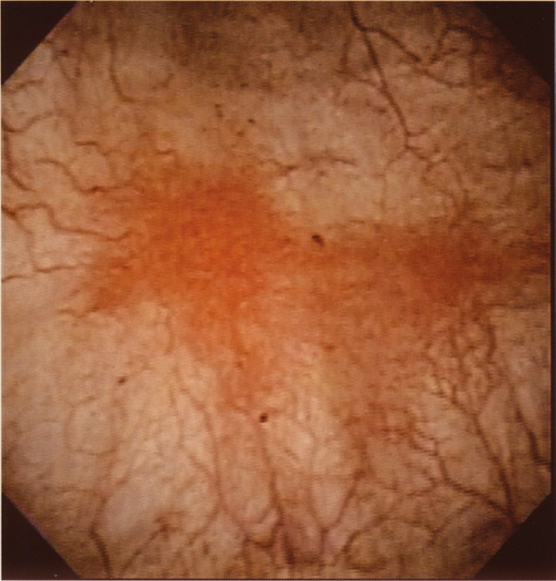
| 選択肢 | 解説 |
|---|---|
| ａ 膀胱拡大術 | 腸管を用いて膀胱の容量を広げる大手術で、間質性膀胱炎ではあらゆる保存的治療に反応しない終末期の萎縮膀胱にしか行わない。発症6か月・診断がついたばかりの本例に最初から選ぶ治療ではない。（膀胱拡大術の主な適応は低コンプライアンス膀胱を伴う神経因性膀胱である。） |
| ◯ ｂ 膀胱水圧拡張術 | ◯ 間質性膀胱炎（膀胱痛症候群）に対する標準的な治療であり、同時に確定診断の手技でもある。麻酔下で膀胱に生理食塩液を注入して伸展させ、排液時にHunner病変や粘膜下点状出血（glomerulation）を確認する。拡張そのものが知覚神経終末を破壊し、数か月〜1年の症状改善をもたらす。Hunner病変があれば同時に経尿道的に焼灼・切除する。 |
| ｃ 膀胱部分切除術 | 膀胱頂部に限局した尿膜管癌や、単発の憩室腫瘍などに用いる術式である（NO.77 参照）。間質性膀胱炎の炎症は膀胱全体のびまん性の変化なので、一部を切っても症状は取れず、むしろ容量が減って頻尿が悪化する。 |
| ｄ BCG 膀胱内注入療法 | 膀胱上皮内癌（CIS）および高リスクの筋層非浸潤性膀胱癌の治療である（NO.90・106・114）。本例は尿細胞診が陰性で、膀胱鏡でも腫瘍性病変ではない。なおBCGは膀胱を強く炎症させる治療なので、間質性膀胱炎に用いれば症状は増悪する。 |
| ｅ 殺細胞性薬膀胱内注入療法 | TURBT後の膀胱内再発予防に用いる（ピラルビシン・マイトマイシンC等）。これも癌に対する治療であって、癌が否定されている本例には適応がない。化学療法薬の膀注も化学性膀胱炎を起こして疼痛を悪化させる。 |
| 疾患 | 痛みのタイミング | 尿所見 | 決め手 |
|---|---|---|---|
| 間質性膀胱炎 | 蓄尿時に増悪・排尿後に軽快 | 培養陰性・細胞診陰性 | 水圧拡張でHunner病変／点状出血 |
| 急性膀胱炎 | 排尿時（特に終末時） | 膿尿・細菌尿 | 培養陽性・抗菌薬が効く |
| 膀胱上皮内癌（CIS） | 膀胱刺激症状（痛みは軽い） | 細胞診クラスⅤ | 発赤粘膜の生検（NO.114） |
| 過活動膀胱 | 痛みは無い | 正常 | 尿意切迫感が主症状。抗コリン薬・β3作動薬 |
| 膀胱結石 | 排尿終末時痛・体位で変化 | 血尿 | 画像で結石（NO.76・110） |
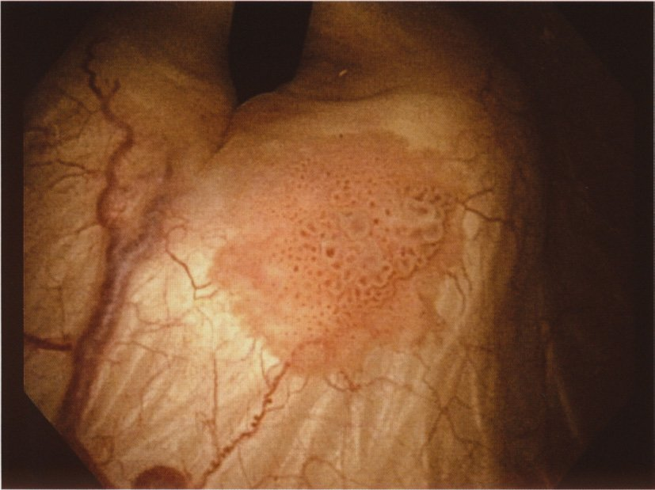
| 選択肢 | 解説 |
|---|---|
| ａ 膀胱全摘除術 | 膀胱全摘除術は筋層浸潤性膀胱癌（T2以上）と、BCGが無効な高リスク筋層非浸潤性膀胱癌の治療である。本例は深達度がまだ分かっていない——深達度を決めるのはこれから行うTURBTの病理であり、順序が逆である。82歳・単腎（腎尿管全摘後）でCr 1.7mg/dLという条件でも、尿路変向を伴う大手術をいきなり選ぶ根拠がない。 |
| ｂ BCG 膀胱内注入療法 | BCG膀注はTURBTの「後」に行う補助療法で、上皮内癌や高リスクの筋層非浸潤性癌の再発・進展を抑えるために使う。腫瘍が膀胱内に見えている状態で先に膀注しても腫瘍は消えないし、病理診断の機会も失う。 |
| ｃ 経直腸的前立腺生検術 | 前立腺癌を疑ったときの検査だが、本例はPSAの記載がなく、直腸指診の異常もなく、膀胱鏡で血尿の原因（膀胱内の腫瘍）が既に見えている。原因が判明しているのに別の臓器を生検する理由はない。 |
| ◯ ｄ 経尿道的膀胱腫瘍切除術 | ◯ 尿管癌（尿路上皮癌）の術後に膀胱へ再発した病変であり、まず経尿道的膀胱腫瘍切除術（TURBT）で切除する。TURBTは治療であると同時に、「筋層に浸潤しているか」を決める唯一の病理診断手段でもある。尿路上皮癌は上流を切除しても下流（膀胱）に多中心性に再発するのが本質で、腎尿管全摘後は定期的な膀胱鏡フォローが必須——その定期検査で拾い上げられた典型的な経過である。 |
| ｅ 殺細胞性薬膀胱内注入療法 | TURBT直後の単回膀注（再発予防）や、上皮内癌への膀注として使う。BCGと同じく「切除の後」の治療であり、見えている腫瘍を薬液を入れるだけで治すことはできない。 |
| 段階 | 行うこと | 意味 |
|---|---|---|
| ①発見 | 膀胱鏡＋尿細胞診 | 血尿の原因を目で確かめる |
| ②TURBT | 経尿道的に腫瘍を切除し、筋層を含めて採取 | 治療＋深達度診断（筋層浸潤の有無） |
| ③病理で分岐 | 筋層非浸潤（Ta・T1・CIS）→ 経過観察／単回膀注／BCG | 膀胱を温存する |
| 筋層浸潤（T2以上）→ 膀胱全摘除術＋尿路変向 | 術前に殺細胞性抗癌薬（GC療法）を先行させる |
| 選択肢 | 解説 |
|---|---|
| ａ 低カルシウム食が推奨される。 | カルシウム制限はむしろ結石を増やすため、明確に否定されている。腸管内でカルシウムはシュウ酸と結合して不溶性の塩をつくり、シュウ酸を便として捨ててくれる。カルシウムを減らすと遊離シュウ酸の腸管吸収が増え、尿中シュウ酸が上がって逆にシュウ酸カルシウム結石ができやすくなる。推奨は1日600〜800mgの通常量を食事から摂ることである（NO.104・112）。 |
| ｂ 予防法は結石成分によらず同じである。 | 成分ごとに予防法は異なる。尿酸結石は尿のアルカリ化（クエン酸製剤）＋アロプリノール、シスチン結石も尿アルカリ化＋チオプロニン、高カルシウム尿症にはサイアザイド系利尿薬、感染結石は起炎菌の根絶と完全摘石——と分かれる（NO.87・98）。共通するのは「水分をたくさん摂る」ことだけである。 |
| ｃ 野菜と果実の摂取量を制限することが推奨される。 | 逆に野菜・果物は積極的に摂るよう勧める。クエン酸とカリウムが豊富で、クエン酸は尿中でカルシウムと結合して可溶性の複合体をつくり、結晶化を強力に抑える（NO.102・112）。ただしほうれん草・タケノコ・チョコレート・紅茶などシュウ酸の多い食品は控えめにし、摂るときはカルシウムと一緒に摂るとよい。 |
| ｄ 食事によるナトリウム摂取量を制限する必要はない。 | 塩分制限は必要である。ナトリウムを多く摂ると尿細管でのナトリウム再吸収に引きずられてカルシウム再吸収が減り、尿中カルシウム排泄が増える。さらに尿中クエン酸も減るため、二重に結石側へ傾く。高血圧・メタボ対策とも合致する。 |
| ◯ ｅ 1 日尿量が2,000mL 以上となるように水分摂取が推奨される。 | ◯ すべての結石に共通する最も基本的で最も効果の高い予防法である。尿量が増えれば結石成分の濃度（過飽和度）が下がり、結晶が核をつくる前に洗い流される。1日尿量2,000mL以上を目標に、食事以外で2,000mL程度の水分を摂るよう指導する。飲むのは水・麦茶がよく、シュウ酸を含む紅茶・緑茶や、果糖の多い清涼飲料は勧めない。 |
| 内容 | 理由 | |
|---|---|---|
| 増やす | 水分（1日尿量2,000mL以上） | 過飽和度を下げる。全結石共通の第一選択 |
| カルシウム（600〜800mg/日、食事から） | 腸管でシュウ酸を捕まえて便へ捨てる | |
| クエン酸（野菜・柑橘・製剤） | 結晶化抑制＋尿アルカリ化 | |
| マグネシウム・食物繊維 | シュウ酸の吸収を減らす | |
| 減らす | 動物性タンパク質 | 尿酸・シュウ酸・カルシウムを増やし、クエン酸を減らす |
| 食塩 | 尿中カルシウム排泄を増やす | |
| シュウ酸（ほうれん草・紅茶・チョコ） | 吸収されて尿中シュウ酸になる | |
| ビタミンC の大量摂取 | 体内でシュウ酸に代謝される（NO.104・112） | |
| 砂糖・果糖・夕食後すぐの就寝 | 尿中カルシウム増加／夜間の尿濃縮 |
| 選択肢 | 解説 |
|---|---|
| ａ FDG-PET | 悪性腫瘍の検索・病期診断の検査であり、急性疝痛の原因検索には使わない。さらにFDGは尿中に排泄されるため腎・尿管・膀胱に強く集積し、泌尿器の病変はもともと評価しにくい。 |
| ｂ 膀胱鏡検査 | 膀胱内を見る検査で、無痛性肉眼的血尿から膀胱腫瘍を疑うときに行う（NO.109・131）。本例の血尿は激烈な疝痛と水腎症に伴うもので、病変は膀胱ではなく上部尿路（尿管）にある。 |
| ◯ ｃ 腹部単純CT | ◯ 尿路結石の診断における第一選択（gold standard）である。単純CTは造影剤を使わずに数分で撮れ、エックス線陰性の尿酸結石も含めてほぼすべての結石を高吸収域として描出する。本例は痛風で尿酸排泄促進薬を内服＝尿中尿酸が増えている＋肥満（BMI 29.7）で尿酸結石ができる条件が揃っており、「腹部エックス線写真で異常なし」はまさにエックス線陰性結石を示唆する。結石の位置・大きさ・水腎症の程度が一度に分かり、大動脈解離や腹部大動脈瘤など致死的鑑別も同時に除外できる。 |
| ｄ 膀胱造影検査 | 膀胱内に造影剤を注入して膀胱の形態や逆流を見る検査で、主な用途は膀胱尿管逆流（排尿時膀胱尿道造影）や膀胱損傷の評価である。尿管結石の診断には向かない。 |
| ｅ 腎シンチグラフィ | 分腎機能（左右それぞれの腎がどれだけ働いているか）や閉塞の有無を機能面から評価する検査である。結果が出るまで時間がかかり、急性期の原因診断には使えない。腎盂尿管移行部狭窄で利尿レノグラムを撮る（NO.79）といった慢性の閉塞評価が本来の出番である。 |
| 検査 | 位置づけ | 長所／短所 |
|---|---|---|
| 腹部単純CT | 尿路結石診断の第一選択 | 感度・特異度ともに95％以上。Ｘ線陰性結石も写る。他疾患（大動脈解離・虫垂炎）も同時に除外／被曝 |
| 腹部超音波 | 最初のスクリーニング | 水腎症の有無が非侵襲的に分かる。小児・妊婦の第一選択／尿管中部の結石は腸管ガスで見えない |
| 腹部単純エックス線（KUB） | 経過観察・排石の追跡 | 簡便／尿酸・シスチン結石は写らない。腸管ガス・骨盤骨と重なると見えない |
| 静脈性尿路造影（IVU/IVP） | 現在は限定的 | 閉塞の高さと形態が分かる／造影剤アレルギー・腎機能障害では使えない |
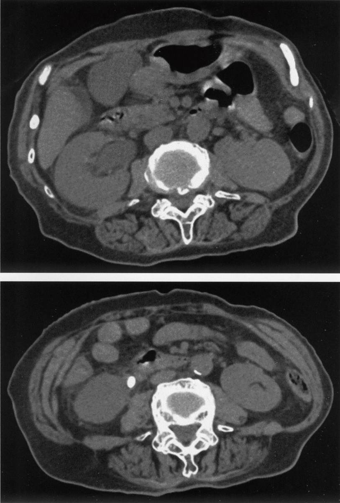
| 選択肢 | 解説 |
|---|---|
| ａ 血液透析 | クレアチニン0.8mg/dL・K 4.8mEq/L・アシドーシスなしで、緊急透析の適応（AIUEO：Acidosis・Intoxication・Uremia・Electrolyte・Overload）を一つも満たさない。敗血症性ショックそのものは透析の適応ではない。 |
| ◯ ｂ 抗菌薬投与 | ◯ 敗血症では「1時間以内の広域抗菌薬投与」が生命予後を左右する。血液培養・尿培養を採取したうえで、グラム陰性桿菌（大腸菌・Klebsiella）をカバーする広域抗菌薬を直ちに開始する。投与が1時間遅れるごとに死亡率が上がることが知られている。 |
| ｃ 右腎摘除術 | ショック状態の患者に開腹・腎摘という高侵襲手術を行えば致命的である。腎摘が検討されるのは気腫性腎盂腎炎で腎が広範に壊死し、ドレナージでも改善しない場合などごく限られた状況に限る。 |
| ｄ 右尿管結石摘出術 | 感染が制御されていない状態で結石そのものに手を出してはいけない。尿管鏡や砕石は閉塞部の圧を上げ、細菌と内毒素を腎盂静脈・リンパへ逆流させて敗血症を一気に悪化させる。結石の処理は感染が鎮まってから（通常は数週後）が鉄則である。 |
| ◯ ｅ 右尿管ステント留置術 | ◯ 閉塞性腎盂腎炎の治療の本体は「閉じている管を開けること（ドレナージ）」である。閉塞したままでは抗菌薬が感染巣に届かず、膿が溜まった袋（閉鎖腔）の中で菌が増え続ける。経尿道的に尿管ステントを留置するか、経皮的腎瘻を造設して速やかに減圧する——これが救命処置である。ステントは局所麻酔下で短時間に置け、出血傾向があっても行いやすい。 |
| 尿管ステント（逆行性） | 経皮的腎瘻（順行性） | |
|---|---|---|
| 入れ方 | 尿道→膀胱→尿管口から上へ | 背中から腎盂を直接穿刺 |
| 長所 | 体外にチューブが出ない・侵襲が少ない | 確実に減圧できる・膿の性状が分かる・尿管口が同定できない例でも可能 |
| 短所 | 膀胱内から尿管口が見えないと入らない（腫瘍で埋没した例＝NO.92）／膀胱刺激症状 | 出血・気胸のリスク／抗凝固中は行いにくい／管理が要る |
| 選ぶ場面 | 結石による閉塞（本例） | 膀胱側から到達できない・全身状態が不良・腫瘍が尿管口を巻き込む |
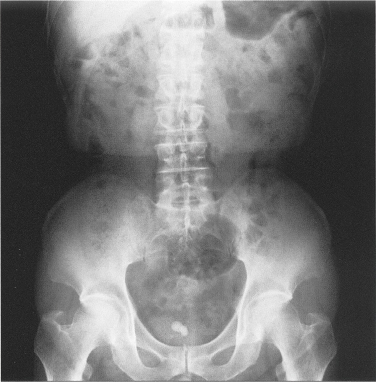
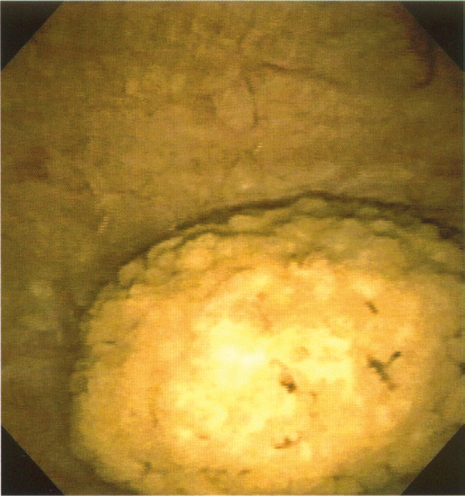
| 選択肢 | 解説 |
|---|---|
| ａ 結石溶解療法 | 溶解療法（尿アルカリ化）が有効なのは尿酸結石だけである。本例は腹部エックス線写真に写っている＝エックス線陽性結石なので尿酸結石ではなく、溶けない。さらに背景に前立腺肥大による排尿障害があり、結石を溶かしても停滞が続く限り再発する。 |
| ｂ 膀胱全摘除術 | 筋層浸潤性膀胱癌の術式である。本例の膀胱内にあるのは腫瘍ではなく結石で、良性疾患に膀胱全摘＋尿路変向という不可逆的な大手術を行う理由はない。 |
| ｃ 膀胱瘻造設術 | 尿道から膀胱へ到達できない尿閉に対する緊急避難（尿道損傷・尿道狭窄・カテーテル挿入困難）で行う。本例は尿閉ではなく、経尿道的に器具を入れられるので不要である。 |
| ◯ ｄ 経尿道的膀胱砕石術 | ◯ 膀胱結石の標準治療である。経尿道的に膀胱鏡を入れ、レーザーや砕石鉗子で結石を砕いて洗い出す。開腹せずに一度で確実に除去できる。同時に背景の前立腺肥大症に対して経尿道的前立腺切除術（TUR-P）を行い、「尿の停滞」という原因そのものを断つのが再発を防ぐ本筋である。 |
| ｅ 体外衝撃波結石破砕術 | ESWLは腎・尿管結石（上部尿路）の治療で、膀胱結石には用いない。理由は2つ——①膀胱内で結石が動くため衝撃波の焦点が定まらない、②破砕しても下部尿路が閉塞していれば砕片が排出されない。骨盤骨が邪魔になることもある。 |
| 部位・大きさ | 標準治療 | 備考 |
|---|---|---|
| 尿管結石 10mm未満 | 保存的（鎮痛・飲水・自然排石を待つ） | 5mm以下なら約7割が自然排石。α1遮断薬で排石を促す（NO.108・117・133） |
| 尿管結石 10mm以上／自然排石しない | ESWL／経尿道的尿管砕石術（TUL） | 中下部尿管はTULが有利 |
| 腎結石 20mm未満 | ESWL | 合併症は血尿・皮下出血・石街（NO.116） |
| 腎結石 20mm以上・サンゴ状 | 経皮的腎砕石術（PNL） | 感染結石は完全摘石が必要 |
| 膀胱結石 | 経尿道的膀胱砕石術 | ESWLは不適。原因（前立腺肥大等）も同時に治す |
| 閉塞＋感染（発熱） | まずドレナージ＋抗菌薬 | 砕石は感染鎮静後（NO.75・105・118） |
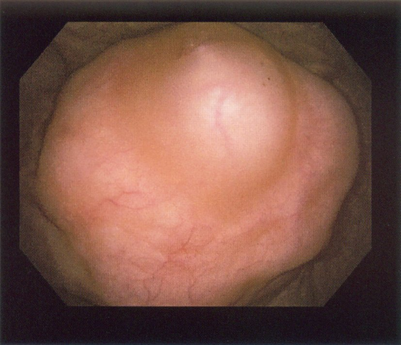
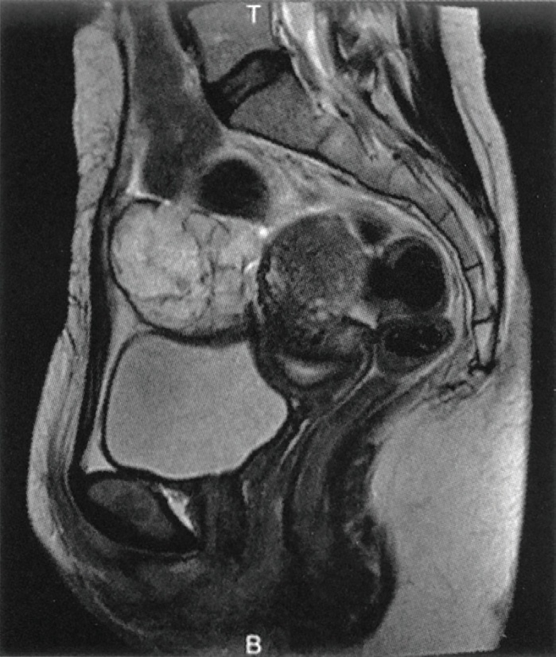
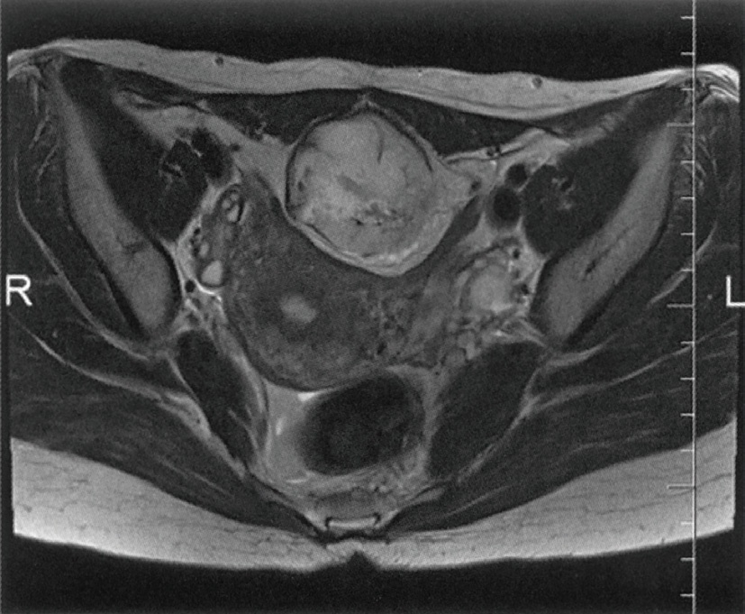
| 遺残の形 | 病態 | 症状 |
|---|---|---|
| 全長が開存 | 尿膜管開存 | 臍から尿が漏れる（新生児期） |
| 中央だけ残る | 尿膜管囊胞 | 無症状／感染すると臍下正中に膿瘍・発熱 |
| 臍側が残る | 尿膜管洞 | 臍からの排膿を繰り返す |
| 膀胱側が残る | 尿膜管憩室 | 無症状が多い |
| 遺残上皮の悪性化 | 尿膜管癌（大半が腺癌） | 血尿・粘液尿・下腹部腫瘤 |
| 選択肢 | 解説 |
|---|---|
| ａ 大 網 | 大網から発生する原発腫瘍は極めて稀で、大網に見られる病変のほとんどは他臓器癌の腹膜播種である。本例は膀胱頂部の壁内に限局し、膀胱部分切除で摘出できているので大網由来ではない。 |
| ｂ 小 腸 | 小腸腫瘍が膀胱に及ぶとすれば浸潤や腸管膀胱瘻の形をとり、気尿・糞尿・難治性尿路感染が前面に出る。本例にそうした所見はなく、腫瘍は膀胱頂部の正中に位置している。 |
| ｃ 尿 管 | 尿管は膀胱の後側壁（膀胱三角部の両外側）に開口するので、頂部・正中という位置と合わない。さらに尿管の腫瘍は尿路上皮癌（移行上皮癌）であって腺癌ではない。 |
| ◯ ｄ 尿膜管 | ◯ 膀胱頂部・正中に発生し、病理が腺癌なら尿膜管癌である。尿膜管は胎生期に膀胱頂部と臍を結んでいた管（allantois の遺残）で、出生後は正中臍索という索状物になって退縮する。この遺残が完全に閉鎖せず腸型の上皮を残すと、そこから腺癌が生じる。膀胱癌全体の1％未満と稀だが、「膀胱頂部・正中・腺癌」の3点が揃えばこれ以外にない。治療は膀胱部分切除＋尿膜管＋臍を一塊に切除するのが標準である。 |
| ｅ 腹直筋 | 腹直筋から生じるのは線維腫症（デスモイド腫瘍）や横紋筋肉腫など間葉系腫瘍で、上皮性の腺癌は生じない。病理診断が腺癌である時点で否定される。 |
| 由来 | 場所 | 手掛かり |
|---|---|---|
| 尿膜管癌 | 膀胱頂部・正中 | 正中臍索に沿って臍方向へ伸びる。粘液産生 |
| 非尿膜管性の原発性腺癌 | 膀胱三角部・底部 | 膀胱外反症・慢性刺激・腸型化生を背景に |
| 他臓器からの浸潤・転移 | 接する部位 | 大腸癌・前立腺癌・子宮頸癌からの直接浸潤が最多。まず原発を探す |
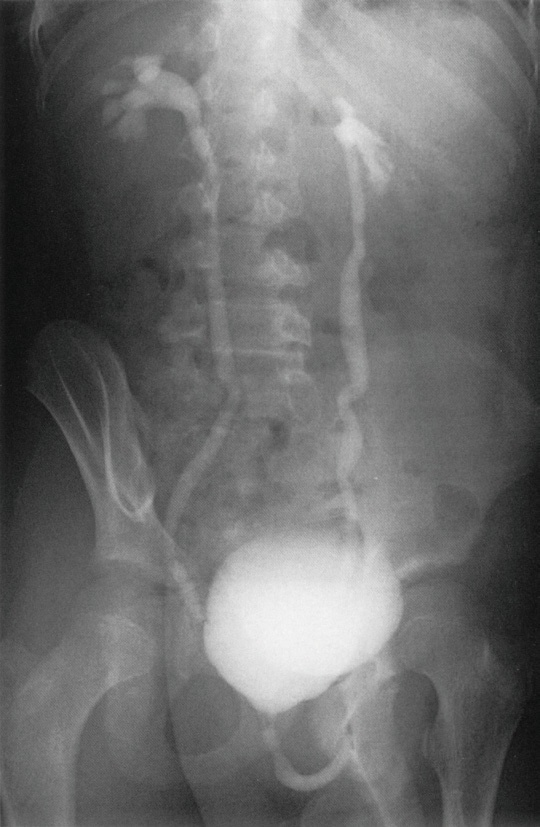
| 選択肢 | 解説 |
|---|---|
| ａ 染色体検査を行う。 | 膀胱尿管逆流（VUR）は多因子遺伝で、特定の染色体異常症候群として扱うものではない。同胞に約30％、親子で約35％と家族集積は強いので「きょうだいのスクリーニング」は意味があるが、染色体検査ではない。 |
| ｂ 両側に腎瘻を造設する。 | 腎瘻は上部尿路が閉塞して減圧が必要なときの処置である。VURは閉塞ではなく逆流（尿が下から上へ戻る）なので、腎瘻を置いても逆流は止まらない。不必要な人工物の留置はむしろ感染源になる。 |
| ｃ 両側に尿管カテーテルを留置する。 | 同じく閉塞に対する処置であり、逆流の治療にならない。尿管内に異物を置けば逆に感染と刺激の原因になる。VURの治療は「感染を防ぎながら自然消失を待つ」か「手術で逆流防止機構を作り直す」かの二択である。 |
| ◯ ｄ 腎盂腎炎の予防に抗菌薬を投与する。 | ◯ 反復性の有熱性尿路感染を伴うVURでは、抗菌薬予防投与（continuous antibiotic prophylaxis）を行う。通常量の1/3〜1/4量を1日1回、就寝前に内服する（ST合剤・セファレキシン等）。狙いは感染そのものより「腎瘢痕をこれ以上作らせないこと」——VURは成長とともに自然消失することが多いので、それまで腎を守りながら待つのが基本戦略である。 |
| ◯ ｅ 99mTc-DMSA 腎シンチグラフィを行う。 | ◯ DMSA（ジメルカプトコハク酸）は近位尿細管に取り込まれて留まるため、機能している腎実質だけを描出する。腎瘢痕（逆流性腎症）は集積欠損として明瞭に写り、瘢痕の評価では最も感度が高い。2歳から6年間も有熱性尿路感染を繰り返した本例では、既に腎瘢痕ができている可能性が高く、その範囲と分腎機能が今後の治療方針（保存か手術か）を決める。瘢痕が進行すれば高血圧・蛋白尿・慢性腎臓病に至る。 |
| 方針 | 適応 | 内容 |
|---|---|---|
| 保存的（待機） | 低〜中グレード（Ⅰ〜Ⅲ度）・年少・瘢痕なし | 抗菌薬予防投与＋排尿指導・便秘の是正。定期的にVCUG/超音波で自然消失を確認 |
| 内視鏡的治療 | 中等度・保存で改善しない例 | 尿管口の下に充填剤を注入して弁を作る（Deflux法） |
| 手術（逆流防止術） | 高グレード（Ⅳ〜Ⅴ度）・突破感染を繰り返す・瘢痕が進行する・年長で自然消失が望めない | 膀胱尿管新吻合術（Cohen法・Politano-Leadbetter法）＝粘膜下トンネルを長く作り直す（NO.107） |
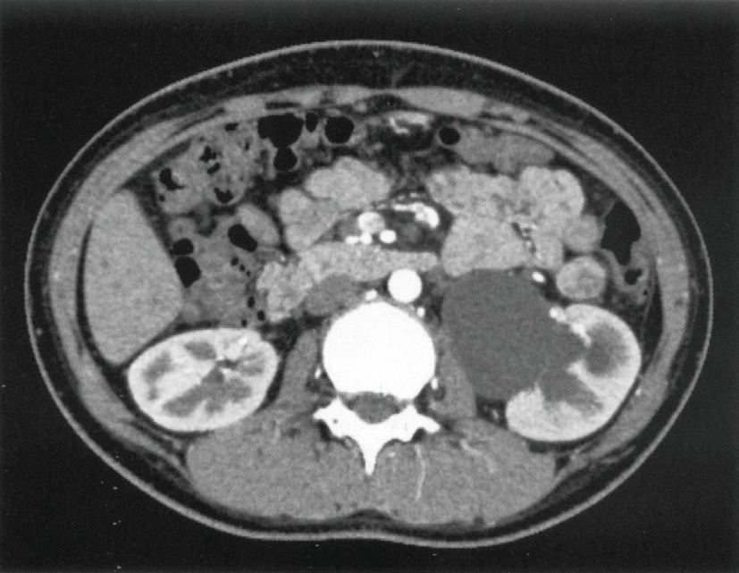
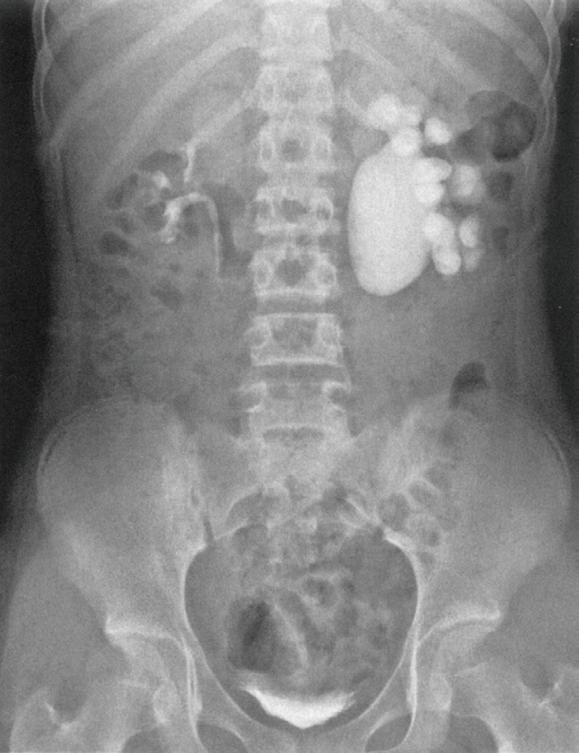
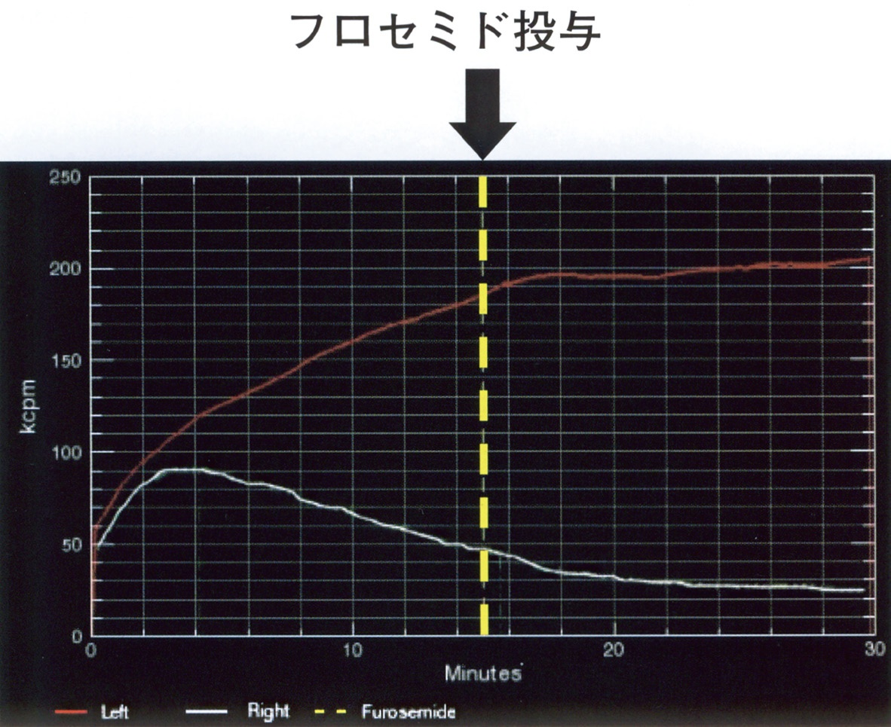
| 選択肢 | 解説 |
|---|---|
| ａ 体外衝撃波結石破砕術 | 腹部単純CTで石灰化陰影を認めず、尿潜血も陰性——結石は存在しない。砕くべきものがないので適応にならない。「側腹部痛＝結石」と短絡しないことがこの問題の主眼である。 |
| ｂ 膀胱尿管新吻合術 | 膀胱尿管逆流に対して、粘膜下トンネルを長く作り直す手術である（NO.107）。本例の閉塞は腎盂と尿管のつなぎ目＝はるか上流にあり、膀胱側を操作しても解決しない。 |
| ｃ 膀胱拡大術 | 低コンプライアンス膀胱を伴う神経因性膀胱や、難治性の萎縮膀胱に対して腸管で容量を作り足す手術である。本例の膀胱に問題はない。 |
| ◯ ｄ 腎盂形成術 | ◯ 腎盂尿管移行部（UPJ）狭窄に対する根治術である。狭窄部を切除し、腎盂と尿管を漏斗状に吻合し直す（Anderson-Hynes離断式腎盂形成術）。所見の読み——造影CTと造影後Ｘ線で腎盂は拡張しているのに尿管は造影されない（拡張していない）＝閉塞は腎盂と尿管の境目。利尿レノグラムでフロセミドを投与しても患側の曲線が下がらず上昇し続ける＝機能的にも真の閉塞と確認できる。閉塞が持続すれば分腎機能が落ちるので、症状があり閉塞パターンなら手術適応である。 |
| ｅ 自己導尿 | 下部尿路（膀胱）が空にならない病態＝神経因性膀胱・排尿筋低活動に対する管理法である。本例の閉塞は上部尿路にあり、膀胱までは尿が下りているので導尿しても腎盂の圧は下がらない。 |
| 拡張の範囲 | 閉塞部位 | 代表疾患 |
|---|---|---|
| 腎盂・腎杯のみ（尿管は細い） | 腎盂尿管移行部（UPJ） | UPJ狭窄（本例・NO.82） |
| 腎盂＋尿管全長 | 尿管膀胱移行部（UVJ） | 巨大尿管症・尿管瘤・尿管結石（下部） |
| 腎盂＋尿管（逆流性） | 閉塞ではなく逆流 | 膀胱尿管逆流（VCUGで確定） |
| 両側＋膀胱も充満・残尿多量 | 膀胱より下（膀胱出口・尿道） | 後部尿道弁・前立腺肥大症・神経因性膀胱 |
| 選択肢 | 解説 |
|---|---|
| ◯ ａ 尿潜血3 ＋ | ◯ 尿管結石では90％以上の症例で血尿（多くは顕微鏡的）を認める。結石が尿管粘膜を擦過・損傷して出血するためで、疝痛発作とともに現れる最も期待される所見である。典型例は「疝痛＋血尿＋発熱なし」の3点セットで、本例は数分〜10数分周期で強弱を繰り返す間欠的な激痛（疝痛）、悪心・嘔吐、痛みが側腹部から下腹部・鼠径部へ移動する（referred pain）という典型的な経過をたどっている。ただし血尿がないこともある（完全閉塞では出ないことがある）ので、陰性でも結石を否定はできない。 |
| ｂ 両側水腎症 | 結石は通常片側にできるので、水腎症も片側である。本例は右側の症状のみで、左側を示唆する所見はない。両側水腎症を見たら、両側同時の結石ではなく「膀胱より下の閉塞」（前立腺肥大症・後部尿道弁・神経因性膀胱）や「骨盤内腫瘍による両尿管の圧迫」を考える——これが第1章の筋である。 |
| ｃ 尿沈渣で赤血球円柱＋ | 赤血球円柱は糸球体性血尿（糸球体腎炎）の所見である。円柱は尿細管腔で形成されるため、尿細管より下流（腎盂・尿管・膀胱・尿道）からの出血では作られない。結石による血尿は非糸球体性で、変形のない均一な赤血球（非糸球体型赤血球）が見られる。 |
| ｄ 血清クレアチニン値10.2mg/dL | 片側の尿管が詰まっても、対側の腎が正常なら血清クレアチニンは上がらない。腎は予備能が大きく、片腎だけで十分に代償できる。クレアチニンが著明に上昇するのは両側閉塞・単腎の閉塞・膀胱より下の閉塞のときである（NO.92）。 |
| ｅ 尿蛋白/ クレアチニン比5.5g/gCr | ネフローゼ症候群レベルの高度蛋白尿を意味する。結石は機械的な出血であって糸球体障害ではないので、蛋白尿が出るとしても血液の混入による軽度（1＋程度）にとどまる。 |
| 所見 | 意味 | |
|---|---|---|
| らしい | 間欠的な激烈な疝痛・体位で軽快しない | 尿管の蠕動と攣縮 |
| 血尿（90％以上） | 粘膜の擦過。非糸球体型赤血球 | |
| 肋骨脊柱角（CVA）叩打痛 | 腎盂の伸展 | |
| 悪心・嘔吐、痛みが鼠径部へ放散 | 腹腔神経叢の反射／関連痛 | |
| 崩す（別を疑う） | 発熱がある | 閉塞性腎盂腎炎＝緊急ドレナージ（NO.75・105・118） |
| 腹膜刺激徴候・じっと動かない | 虫垂炎・消化管穿孔・腹膜炎 | |
| 高齢・拍動性腫瘤・血圧左右差 | 腹部大動脈瘤破裂・大動脈解離（見逃すと致死的） |
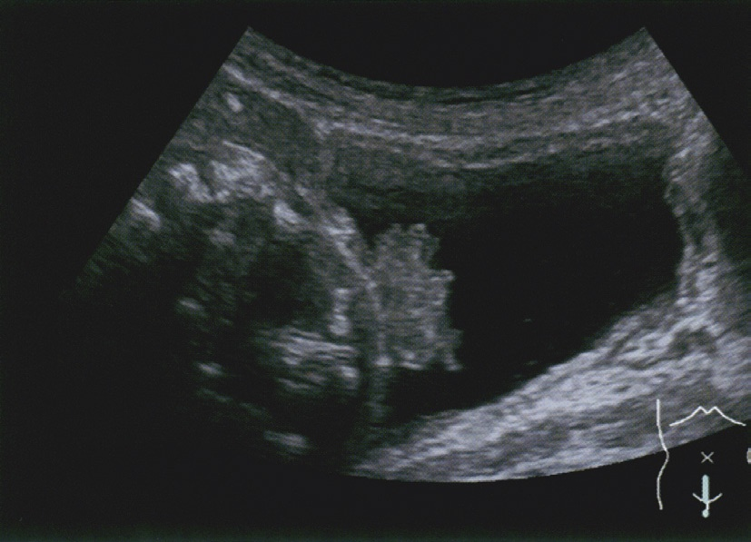
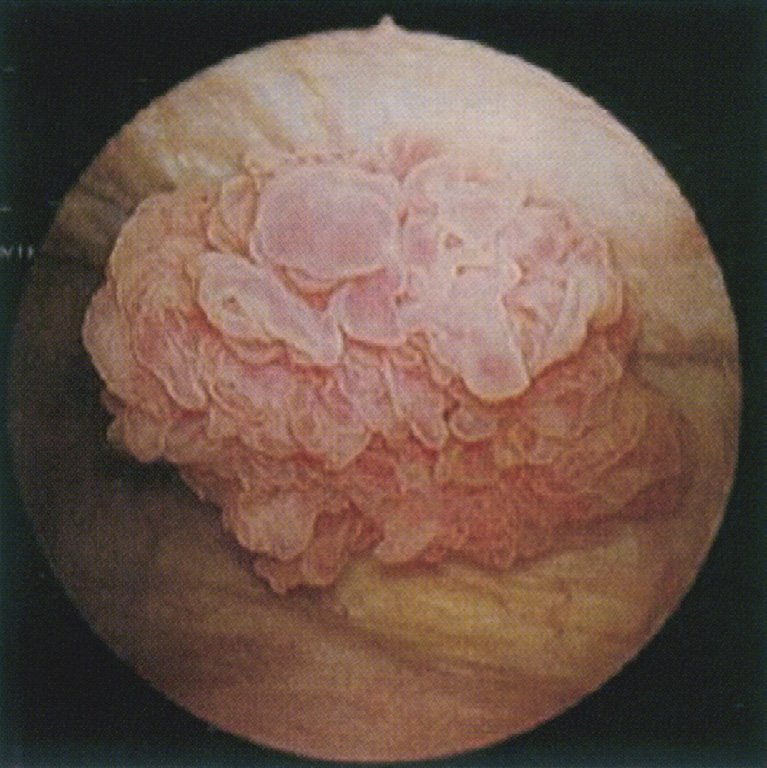
| 選択肢 | 解説 |
|---|---|
| ◯ ａ 尿道狭窄 | ◯ 経尿道的手術に共通する晩期合併症である。太い切除鏡（レゼクトスコープ）を尿道に通すことで尿道粘膜が損傷を受け、治癒過程で瘢痕性に狭くなる。好発部位は外尿道口と球部尿道で、術後数か月してから尿線の細小化・排尿困難として現れる。治療は尿道拡張や内視鏡的尿道切開（NO.91）。 |
| ◯ ｂ 膀胱穿孔 | ◯ TURBTで最も注意すべき術中合併症である。腫瘍を筋層まで含めて切除するので、切り過ぎれば膀胱壁を貫く。とくに膀胱側壁の腫瘍を切除するときは閉鎖神経が電気刺激され、大腿内転筋が突然強く収縮する（閉鎖神経反射）——その瞬間に切除ループが膀胱壁を突き破る。第1章で「閉鎖神経は排尿に関与しないが、泌尿器科での登場はTUR-BTの閉鎖神経反射だけ」と扱った内容がここで回収される。対策は閉鎖神経ブロックや全身麻酔＋筋弛緩薬。 |
| ｃ 逆行性射精 | 経尿道的前立腺切除術（TUR-P）の合併症であり、TURBTでは起こらない。TUR-Pで膀胱頸部（内尿道口）を切除すると、射精時に閉じるべき膀胱頸部が閉じなくなり、精液が膀胱へ逆流する。本例で切除するのは膀胱内の腫瘍であって膀胱頸部ではない。 |
| ｄ 腹圧性尿失禁 | 外尿道括約筋の損傷で起こるもので、前立腺全摘除術の代表的な合併症である。TURBTでは外尿道括約筋を切らないので通常は起こらない。（腹圧性尿失禁は本来、女性の骨盤底筋群の脆弱化で起こる病態である。） |
| ◯ ｅ 急性前立腺炎 | ◯ 経尿道操作は尿道の常在菌を前立腺・膀胱へ押し込む。術後にカテーテルを留置することもあり、尿路感染から急性前立腺炎・精巣上体炎・敗血症を起こしうる。術中の灌流液が前立腺部尿道から実質へ逆流することも一因である。予防的抗菌薬投与と早期のカテーテル抜去で減らす。 |
| 術式 | 対象 | 特徴的な合併症 |
|---|---|---|
| TURBT（膀胱腫瘍） | 膀胱内の腫瘍 | 膀胱穿孔（閉鎖神経反射）・出血・尿路感染・尿道狭窄 |
| TUR-P（前立腺） | 前立腺肥大症 | 逆行性射精（最多・約7割）・TUR症候群・尿失禁（外括約筋損傷）・尿道狭窄 |
| TUL（尿管砕石） | 尿管結石 | 尿管損傷・穿孔・尿管狭窄・遺残結石 |
| 前立腺全摘除術 | 限局性前立腺癌 | 腹圧性尿失禁・勃起障害 |
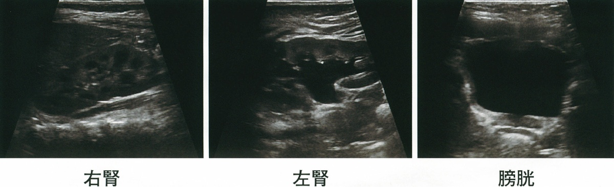
| 選択肢 | 解説 |
|---|---|
| ａ 腹部造影CT | 乳児に被曝と造影剤を伴う検査を、無症状の経過観察目的で行ってはいけない。小児は放射線感受性が高く、生涯にわたる発癌リスクが成人より大きい。造影剤アレルギー・腎障害のリスクもあり、超音波で同じ情報が得られる場面でCTを選ぶ理由はない。 |
| ｂ MR urography | 被曝はないが、乳児では体動を止めるために鎮静（全身麻酔に準じる管理）が必要で、検査時間も長く高価である。形態評価の精度は高いが、無症状のスクリーニングには過剰で、超音波で拡大が進行したときの次の一手として位置づけられる。 |
| ◯ ｃ 腹部超音波検査 | ◯ 無症候性の先天性水腎症に対する経過観察の第一選択である。非侵襲・無被曝・鎮静不要で、腎盂前後径・腎実質の厚さ・尿管の拡張の有無を繰り返し評価できる。本例は感染歴なし・排尿良好・哺乳良好・発育良好＝緊急に介入する理由が一つもない状態で、胎児期に指摘された腎盂拡大の大半（約半数〜7割）は自然に軽快・消失する。まず超音波で追い、拡大が進む・腎実質が薄くなる・感染を起こす、といった変化があってはじめて利尿レノグラムやVCUGへ進むのが正しい順序である。 |
| ｄ 利尿レノグラム | 「閉塞か単なる拡張か」を機能面で判定し、分腎機能を測る検査で、手術するかどうかを決める段階の検査である（NO.79）。RIを用い、乳児では静脈路確保と鎮静、導尿が必要になることも多い。超音波で拡大が持続・進行することを確認してから行う。 |
| ｅ 排尿時膀胱尿道造影 | 膀胱尿管逆流（VUR）と後部尿道弁を診断する検査である（NO.78・103・107）。尿道カテーテル挿入と被曝を伴い、医原性の尿路感染の危険もある。適応は有熱性尿路感染の既往がある／両側性・尿管まで拡張している／膀胱壁の肥厚がある場合で、本例は片側の腎盂拡大のみ・感染歴なし・排尿良好で当てはまらない。 |
| 順 | 検査 | 何が分かるか | いつ使う |
|---|---|---|---|
| ① | 腹部超音波 | 腎盂前後径・腎実質厚・尿管拡張・膀胱壁 | 最初と経過観察のすべて。無侵襲・無被曝 |
| ② | 排尿時膀胱尿道造影（VCUG） | 膀胱尿管逆流のグレード・後部尿道弁 | 有熱性尿路感染の既往／両側性／膀胱壁肥厚のとき |
| ③ | 利尿レノグラム（MAG3等） | 閉塞かどうか・分腎機能 | 拡大が持続・進行し、手術を検討するとき |
| ④ | DMSA腎シンチ | 腎瘢痕（逆流性腎症） | 腎盂腎炎を繰り返した後（NO.78） |
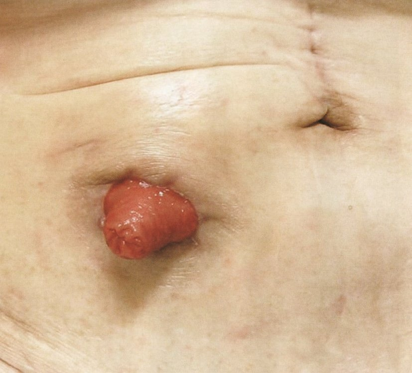
| 方式 | 仕組み | 管理 | 特徴 |
|---|---|---|---|
| 回腸導管 | 遊離した回腸に両尿管を吻合し、腹壁にストーマとして開口 | 集尿袋（パウチ） | 最も確実・手術時間が短い。高齢者・腎機能低下例に選ばれる |
| 尿管皮膚瘻 | 尿管を直接腹壁に開口 | 集尿袋（＋ステント） | 最も低侵襲。狭窄しやすい。全身状態不良例に |
| 自然排尿型代用膀胱（新膀胱） | 腸管で袋を作り尿道に吻合 | 腹圧排尿・自己導尿を要することも | ストーマ不要でQOLが高い／尿道再発リスクのない例・腎機能良好例に限る |
| 選択肢 | 解説 |
|---|---|
| ◯ ａ 集尿袋が必要である。 | ◯ 写真は回腸導管（ileal conduit）によるストーマである。回腸導管には尿を溜める機能も、括約筋のような制御機構もない——尿は腎から流れてくるまま、絶え間なくストーマから排出される（失禁型尿路変向）。したがってストーマに装具（パウチ＝集尿袋）を貼付して尿を受ける必要がある。装具の交換とストーマ周囲皮膚の管理が生涯続くため、術前からストーマ位置のマーキングと患者教育を行う。 |
| ｂ 巨赤芽球性貧血を起こす。 | ビタミンB12の吸収部位は回腸末端であり、回腸導管に用いるのは回腸末端から約15〜20cm 口側の部分で、末端そのものは温存する。したがって通常はB12欠乏を来さない。（回腸末端を大量に使う代用膀胱や、回腸末端切除の既往があればB12欠乏を生じうるので、その場合は数年後に貧血・末梢神経障害が出る。） |
| ｃ 間歇的な導尿が必要である。 | 自己導尿が必要になるのは「禁制型」の尿路変向——自然排尿型代用膀胱（新膀胱）で自排尿できない場合や、Indiana pouch などの導尿型リザーバーである。回腸導管は尿が出続ける失禁型なので導尿の必要はない。 |
| ｄ 乳酸アシドーシスをきたす。 | 起こるのは「高クロール性代謝性アシドーシス（アニオンギャップ正常）」で、乳酸アシドーシスではない。腸粘膜が尿中のアンモニウムイオンと塩素を再吸収し、重炭酸を尿中へ失うために生じる。回腸導管は尿の腸管との接触時間が短いので軽度だが、代用膀胱（長時間尿を溜める）ではより顕著になる。 |
| ｅ カテーテル交換が必要である。 | 定期的なカテーテル交換が必要なのは尿道留置カテーテル・膀胱瘻・腎瘻である。回腸導管は腸管そのものが尿の通り道となり、体外へ開口しているのでカテーテルは入っていない。交換するのはカテーテルではなくストーマ装具（パウチ）である。 |
| 回腸導管（尿路ストーマ） | 結腸ストーマ（人工肛門） | |
|---|---|---|
| 位置 | 右下腹部が多い | 左下腹部（S状結腸）／右（回腸） |
| 形 | やや突出（1〜2cm）させて作る——尿が皮膚に触れないように | 平坦〜軽度突出 |
| 排泄物 | 尿が持続的に流出 | 便（間欠的） |
| 装具 | 尿専用パウチ（排出口が細く逆流防止弁つき） | 便用パウチ |
| 周囲皮膚 | アルカリ尿による皮膚炎・結晶付着 | 便による皮膚炎 |
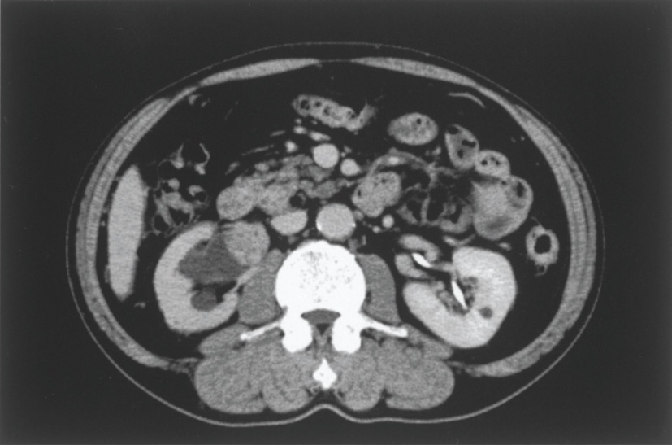
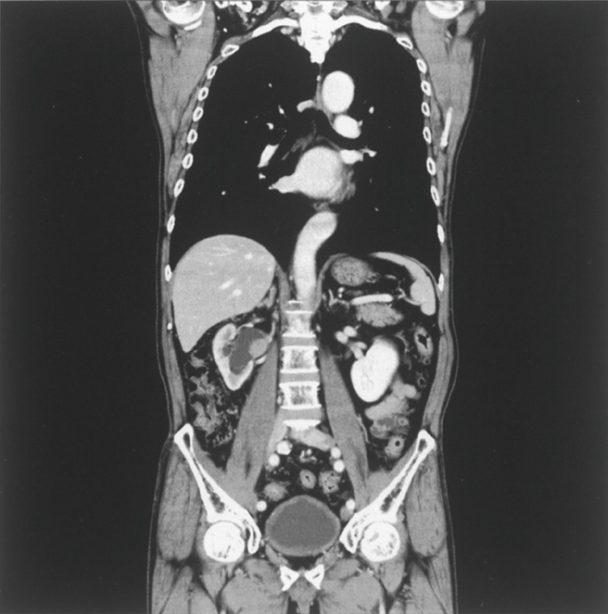
| 選択肢 | 解説 |
|---|---|
| ◯ ａ 再発は膀胱に多い。 | ◯ 腎盂・尿管癌（上部尿路上皮癌）の術後、20〜40％が膀胱に再発する。理由は2つ——①尿路上皮全体が同じ発癌刺激を受けている（field cancerization）②剝離した癌細胞が尿流に乗って下流の膀胱に着床する（implantation）。尿は上から下へ流れるので、再発は「下流の膀胱」に起き、逆に膀胱癌から上部尿路への再発は数％と少ない。だから腎尿管全摘除術後は生涯にわたって膀胱鏡でフォローする（NO.72 がまさにその経過）。 |
| ｂ 扁平上皮癌である。 | 腎盂・尿管癌の90％以上は尿路上皮癌（移行上皮癌）である。扁平上皮癌は数％で、背景に長期の結石・慢性炎症・住血吸虫症など「慢性刺激による扁平上皮化生」がある場合に生じる。本例にそうした背景はない。 |
| ｃ 近位尿細管から発生する。 | 近位尿細管から発生するのは腎細胞癌（淡明細胞型）である（第2章 NO.45）。腎盂癌は腎盂の内腔を覆う尿路上皮（移行上皮）から発生する。同じ「腎の癌」でも、実質（尿細管）由来か内腔（尿路上皮）由来かで性格がまったく違う——ここが本問の主眼である。 |
| ｄ VHL 遺伝子異常が関係する。 | VHL遺伝子はやはり腎細胞癌（淡明細胞型）の話である。VHLの不活化→HIF-αの分解不全→VEGF過剰→血管新生という経路が分子標的薬の根拠になっている（第2章）。尿路上皮癌の代表的な分子異常はFGFR3変異（低異型度）・TP53変異（高異型度）である。 |
| ｅ 腹部ダイナミックCT で早期濃染を呈する。 | 早期濃染＋wash-outは血管に富む腎細胞癌の特徴である（第2章 NO.45）。尿路上皮癌は乏血性で、造影効果は緩やか——排泄相で腎盂・尿管内の陰影欠損（filling defect）として描出されるのが典型像であり、CT urography ではこの相が診断の要になる。 |
| 腎細胞癌 | 腎盂癌（尿路上皮癌） | |
|---|---|---|
| 由来 | 近位尿細管上皮（腎実質） | 尿路上皮（腎盂の内腔） |
| 遺伝子 | VHL → HIF-α → VEGF | FGFR3（低異型度）／TP53（高異型度） |
| 造影CT | 早期濃染＋wash-out（血管に富む） | 乏血性。排泄相で陰影欠損 |
| 尿細胞診 | 陰性（尿路に接していない） | 陽性になる |
| 危険因子 | 喫煙・肥満・透析・VHL病 | 喫煙・芳香族アミン・フェナセチン |
| 手術 | 腎部分切除／根治的腎摘除術 | 腎尿管全摘除術＋膀胱部分切除 |
| 放射線・抗癌薬 | どちらも無効 | 化学療法（GC療法）が効く |
| 再発部位 | 肺・骨・肝（血行性） | 膀胱（20〜40％） |
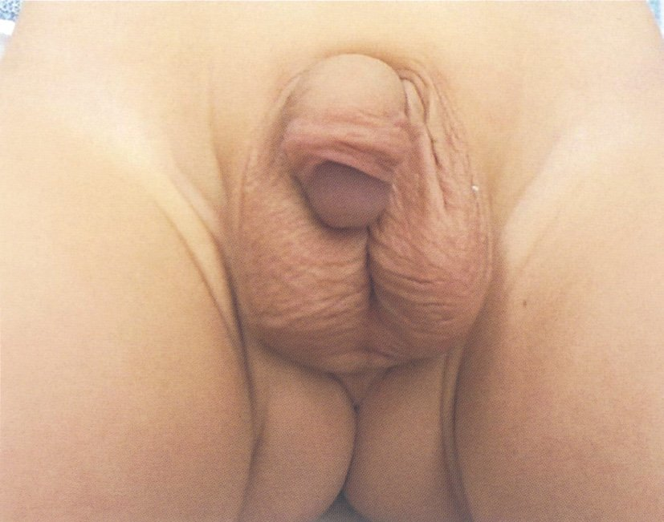
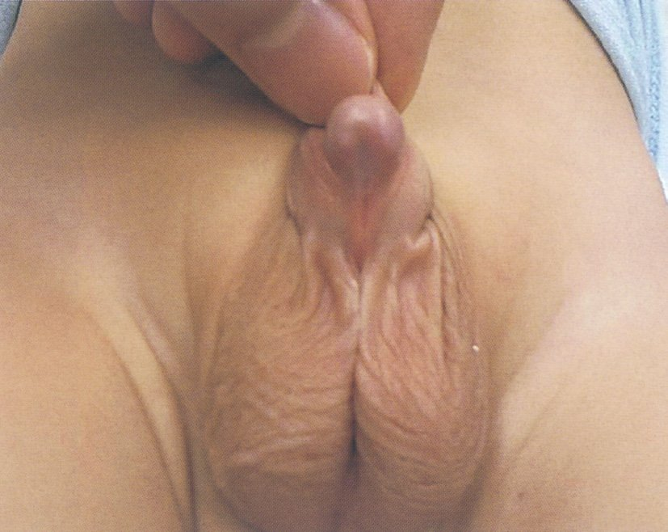
| 選択肢 | 解説 |
|---|---|
| ａ 血 尿 | 尿道下裂は尿道が短く、途中で開口しているだけで、尿路に出血の原因となる病変はない。血尿を来す小児の疾患（糸球体腎炎・結石・Wilms腫瘍）とは無関係である。 |
| ｂ 尿 閉 | 尿閉は尿道が「閉じている／狭い」ときに起こる——後部尿道弁・尿道狭窄・尿道下裂に合併する尿道口狭窄などである。尿道下裂そのものは尿道が「短く途中で開いている」状態なので、むしろ尿は出やすく、尿閉にはならない。（実際に問題になるのは尿線が下向き・散乱して立位排尿ができないことである。） |
| ｃ 水腎症 | 水腎症は上部尿路の閉塞や逆流で生じる。尿道下裂は遠位側（外尿道口）の位置異常であり、上流の圧が上がらないので水腎症は来さない。尿道下裂に他の尿路奇形が高率に合併するわけでもない（合併するのは停留精巣と鼠径ヘルニアで、いずれも尿路ではない）。 |
| ◯ ｄ 陰茎の屈曲 | ◯ 尿道下裂の三徴は「①外尿道口の位置異常 ②陰茎の腹側屈曲（chordee）③背側に偏った頭巾状の包皮（dorsal hooded prepuce）」である。尿道板より遠位の尿道形成が途中で止まると、本来尿道になるはずだった組織が線維性の索状物（chordee）となって陰茎腹側を引っ張る。その結果陰茎は腹側（下方）へ弓なりに屈曲する。屈曲は将来の性交障害の原因になるため、手術（尿道形成術）では屈曲の解除（chordectomy）と尿道形成を必ず同時に行う。本例は写真Bで包皮が背側に偏り腹側が欠けている（頭巾状包皮）ことも読み取れる。 |
| ｅ 真性尿失禁 | 真性尿失禁は括約筋機能が失われて尿が持続的に漏れる状態で、尿管異所開口（外括約筋より遠位に開口）や括約筋損傷、膀胱外反症などで起こる（NO.88）。尿道下裂では外尿道口が括約筋より遠位（陰茎側）にあり、括約筋そのものは正常なので失禁しない。 |
| 尿道下裂 | 尿道上裂 | |
|---|---|---|
| 開口部 | 陰茎の腹側（下面） | 陰茎の背側（上面） |
| 頻度 | 約300人に1人（多い） | 数万人に1人（稀） |
| 屈曲 | 腹側へ（chordee） | 背側へ（反り返る） |
| 包皮 | 背側に頭巾状 | 腹側に余る |
| 括約筋 | 正常＝失禁しない | 障害されることが多く尿失禁を伴う |
| 合併 | 停留精巣・鼠径ヘルニア | 膀胱外反症（重症型）・恥骨離開 |
| 選択肢 | 解説 |
|---|---|
| ａ 脳 波 | けいれんや意識障害の評価に用いる検査である。本例は「少しうとうとしている」＝発熱に伴う活気低下であって、けいれんの記載はなく、大泉門は平坦（頭蓋内圧亢進なし）である。感染源が尿として明らかになっている状況で優先されない。 |
| ◯ ｂ 尿培養検査 | ◯ 尿沈渣で白血球100以上/HPF＝膿尿があり、尿路感染症が強く疑われる。起炎菌の同定と薬剤感受性の確認は治療上必須である。重要なのは「抗菌薬を始める前に採取する」ことと、乳児ではおむつ採尿では汚染するのでカテーテル導尿（または恥骨上膀胱穿刺）で採ることである。起炎菌の大半は大腸菌。 |
| ｃ 尿生化学検査 | 尿中Na・K・浸透圧・クレアチニンなどを測り、腎前性/腎性腎障害の鑑別や尿細管機能を評価する検査である。本例はクレアチニン0.3mg/dL と腎機能は正常で、問題は「感染の原因菌と広がり」であって尿細管機能ではない。 |
| ◯ ｄ 血液培養検査 | ◯ 3か月の乳児の有熱性尿路感染は菌血症を伴う頻度が高い（10〜20％）。乳児は感染が全身に波及しやすく、局所症状を訴えられないため、「発熱＋活気不良＋哺乳低下」の乳児では血液培養を必ず採るのが原則である。菌血症があれば経静脈的抗菌薬の投与期間が変わるので、治療方針に直結する。 |
| ｅ 排尿時膀胱尿道造影検査 | 膀胱尿管逆流の診断に必要な検査だが、行うのは「急性期を過ぎてから」である。感染が活動している最中にカテーテルを入れて造影剤を注入すれば、細菌を上部尿路へ押し上げて腎盂腎炎を悪化させる。NO.78・107 でも「解熱後に行った排尿時膀胱尿道造影」と明記されている。「次に行うべき検査」を問われている急性期には選ばない。 |
| 方法 | 汚染 | 使いどころ |
|---|---|---|
| 採尿パック（おむつに貼る） | 高い（偽陽性が多い） | スクリーニングのみ。陰性なら除外できるが、陽性は培養に使えない |
| カテーテル導尿 | 低い | 培養検体として標準的 |
| 恥骨上膀胱穿刺 | 最も低い | 最も確実。乳児では超音波ガイド下に行う |
| 中間尿（自排尿） | 中等度 | トイレトレーニング後の年長児 |
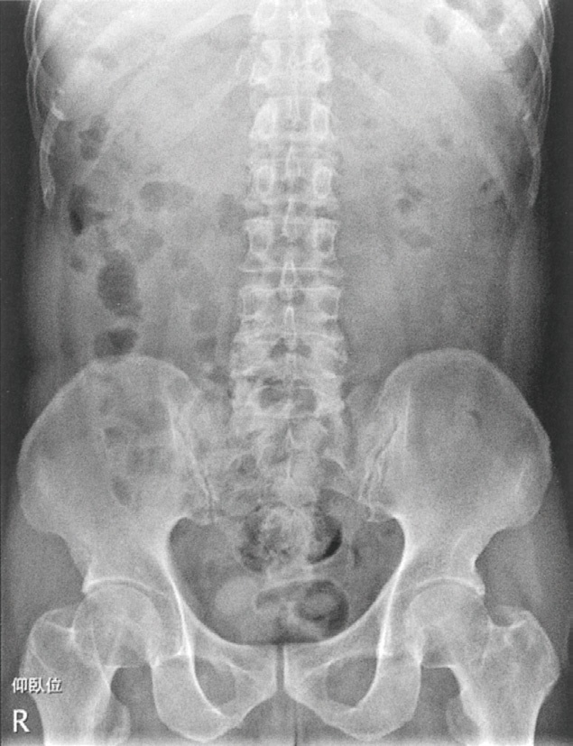
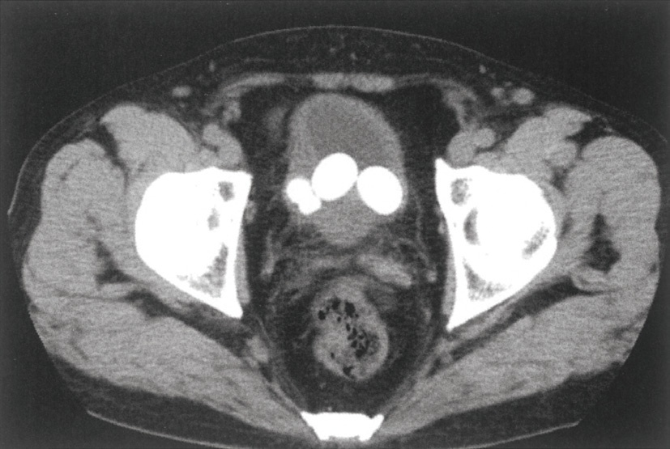
| 尿酸産生抑制薬 | 尿酸排泄促進薬 | |
|---|---|---|
| 代表 | アロプリノール・フェブキソスタット | ベンズブロマロン・プロベネシド |
| 作用 | キサンチンオキシダーゼ阻害 | 尿細管の尿酸再吸収（URAT1）阻害 |
| 尿中尿酸 | 減る | 増える |
| 尿路結石があるとき | ◎ 第一選択 | ✗ 結石を悪化させる |
| 腎機能低下時 | 用量調節が必要（アロプリノール） | 効果が落ちる |
| 選択肢 | 解説 |
|---|---|
| ◯ ａ アロプリノール | ◯ 赤レンガ色（黄褐色〜レンガ色）の結石は尿酸結石に特徴的で、血清尿酸8.6mg/dL の高尿酸血症が裏づけている。アロプリノールはキサンチンオキシダーゼを阻害して尿酸産生そのものを減らすため、尿中への尿酸排泄が減り、尿酸結石の再発を防ぐ。実地では尿アルカリ化薬（クエン酸カリウム）と飲水を併せて行うのが標準である。 |
| ｂ サイアザイド系利尿薬 | 遠位尿細管でのカルシウム再吸収を促進して尿中カルシウム排泄を減らすため、高カルシウム尿症を伴うカルシウム結石の再発予防に用いる薬である。本例は尿酸結石なので対象が違う。むしろサイアザイドは尿酸の排泄を抑えて血清尿酸を上げるので、高尿酸血症の本例には不利に働きうる。 |
| ｃ チオプロニン | シスチン結石の治療薬である。SH基を持ち、シスチンのジスルフィド結合を切って溶解度の高い複合体に変える。シスチン結石はシスチン尿症（常染色体潜性遺伝）で小児期から反復し、六角形の結晶を認める——本例のような高齢初発の像とは異なる。 |
| ｄ ビタミンD 製剤 | 腸管からのカルシウム吸収を増やし、尿中カルシウム排泄を増やすので、結石の再発予防どころか、カルシウム結石の危険因子になる。骨粗鬆症の治療で用いる際も、結石既往例では尿中カルシウムのモニタリングが要る。 |
| ｅ ベンズブロマロン | 尿酸排泄促進薬で、尿細管での尿酸再吸収（URAT1）を阻害して尿中へ尿酸を捨てる。血清尿酸は下がるが尿中尿酸は増えるので、尿酸結石の患者にはむしろ禁忌に近い。NO.74・124 の患者はまさにこの薬で結石を作った——同じ「高尿酸血症の薬」でも、結石があるなら産生抑制薬（アロプリノール）を選ぶのが鉄則である。 |
| 結石 | 薬 | 機序 |
|---|---|---|
| 尿酸結石 | アロプリノール＋クエン酸カリウム（尿アルカリ化） | 産生を減らし、尿に溶けやすくする |
| カルシウム結石（高Ca尿症） | サイアザイド系利尿薬 | 遠位尿細管でCa再吸収↑→尿中Ca↓ |
| カルシウム結石（低クエン酸尿） | クエン酸カリウム | 尿中でCaとキレートし結晶化を抑制 |
| シスチン結石 | チオプロニン・D-ペニシラミン＋尿アルカリ化 | ジスルフィド結合を切り可溶化 |
| 感染結石（リン酸Mgアンモニウム） | 完全摘石＋抗菌薬（＋アセトヒドロキサム酸） | ウレアーゼ産生菌を根絶しないと再発する |
| 選択肢 | 解説 |
|---|---|
| ａ 下大静脈後尿管 | 右尿管が下大静脈の背側を回り込んで走行する先天異常で、尿管が圧迫されて水腎症を来す（NO.119）。閉塞の病態であって失禁は起こさない。 |
| ｂ 後部尿道弁 | 後部尿道に膜様の弁ができて尿の流出を妨げる、男児だけの疾患である。女児には起こらない。症状は排尿困難・尿線細小・両側水腎症・腎不全で、溢流性尿失禁を来すことはあっても本例の像とは異なる。 |
| ◯ ｃ 尿管異所開口 | ◯ 完全重複腎盂尿管では、上腎からの尿管が正常より「尾側かつ内側」に開口する（Weigert-Meyer の法則）。これが外尿道括約筋より遠位（尿道遠位部・腟前庭・腟）に開口すると、括約筋の制御を受けない尿が常に漏れ続ける。本例は「膀胱鏡で右2個・左1個の尿管口」＝完全重複なのに膀胱内に尿管口が3つしかない＝左の1本が膀胱の外に開口していることを意味する。「トイレでは普通に排尿できるのに、下着が常に濡れている」＝持続性の真性尿失禁という訴えがこの病態を端的に表しており、女児にしか症状が出ない（男児では開口部が括約筋より近位のため失禁しない）。 |
| ｄ 尿管瘤 | 尿管の膀胱内末端が風船状に膨らむ先天異常で、重複腎盂尿管の上腎側尿管に合併しやすい。症状は水腎症・尿路感染・（大きければ）膀胱出口の閉塞で、膀胱内に開口しているので持続的な尿漏れは起こさない。 |
| ｅ 膀胱尿管逆流 | 尿が膀胱から尿管へ逆流する病態で、症状は反復する有熱性尿路感染である（NO.78・103・107）。尿管口は膀胱内にあり、括約筋は正常に働くので失禁しない。重複腎盂尿管では下腎側の尿管にVURが起こりやすいが、本例の主訴を説明できない。 |
| 型 | 漏れ方 | 原因 |
|---|---|---|
| 真性（持続性）尿失禁 | 常時ちょろちょろ漏れ続ける。排尿は正常にできる | 尿管異所開口（女児）・膀胱腟瘻・尿管腟瘻・括約筋の完全破綻 |
| 腹圧性尿失禁 | 咳・くしゃみ・重い物を持つと漏れる | 骨盤底筋の脆弱化（経産女性）・前立腺全摘後 |
| 切迫性尿失禁 | 強い尿意とともに間に合わずに漏れる | 過活動膀胱（NO.123・132） |
| 溢流性尿失禁 | 溜まりすぎて溢れる。残尿多量 | 前立腺肥大症・神経因性膀胱・糖尿病 |
| 機能性尿失禁 | トイレまで間に合わない | ADL低下・認知症 |
| 糸球体性血尿 | 非糸球体性血尿 | |
|---|---|---|
| 赤血球の形 | 変形赤血球（大小不同・コブ状） | 均一な赤血球 |
| 円柱 | 赤血球円柱あり | なし |
| 蛋白尿 | 伴うことが多い | ないか軽度（血液の混入分） |
| 凝血塊 | 出ない | 出ることがある |
| 進む先 | 腎臓内科へ（IgA腎症等・腎生検） | 泌尿器科へ（画像・膀胱鏡・細胞診） |
| 選択肢 | 解説 |
|---|---|
| ａ 腎シンチグラフィ | 分腎機能や閉塞の有無を評価する機能検査である。血尿の「原因」を探す検査ではない——腫瘍があってもシンチには写らない。 |
| ◯ ｂ 尿細胞診検査 | ◯ 尿路上皮癌のスクリーニングとして必須である。剝離した癌細胞を尿中に探すので、腎盂・尿管・膀胱のどこの癌でも陽性になりうる。とくに上皮内癌（CIS）は膀胱鏡で腫瘤として見えないことがあり、細胞診がなければ見逃す（NO.114）。本例は65歳・40 pack-year の喫煙歴という尿路上皮癌の高リスク群で、非侵襲的に行える本検査の優先度は高い。 |
| ｃ 尿道膀胱造影検査 | 尿道狭窄・尿道損傷・膀胱の形態異常を評価する検査である。粘膜面の腫瘍を見るには膀胱鏡に遠く及ばない——造影剤の陰影欠損として大きな腫瘍が写ることはあっても、平坦な病変や小さな腫瘍は写らない。 |
| ◯ ｄ 腹部超音波検査 | ◯ 血尿の精査で最初に行うべき画像検査である。非侵襲・無被曝で、腎腫瘍・水腎症・膀胱内の腫瘤・結石を一度にスクリーニングできる。血尿の原因は「腎（腫瘍・囊胞・結石）」「尿路（腫瘍・結石）」「前立腺」のどこにでもありうるので、まず全体を俯瞰する。これで異常があれば造影CT（CT urography）へ、なくても高リスク群なら膀胱鏡へ進む。 |
| ｅ レノグラム | a と同様に腎の機能・排泄動態を見る検査で、出血源の同定には使えない。腎盂尿管移行部狭窄など閉塞の評価が本来の用途である（NO.79）。 |
| 検査 | 見るもの | 特徴 |
|---|---|---|
| 尿細胞診 | 尿路上皮癌の細胞（腎盂〜膀胱のどこでも） | 非侵襲。高異型度癌・上皮内癌に感度が高い／低異型度癌には感度が低い |
| 画像（超音波→CT urography） | 腎実質の腫瘍・上部尿路の腫瘍・結石・水腎症 | まず超音波。異常や高リスクならCT urography |
| 膀胱鏡 | 膀胱・尿道の粘膜面 | 膀胱腫瘍の診断はこれが決定的。肉眼的血尿・高リスク例では必須（NO.109・131） |
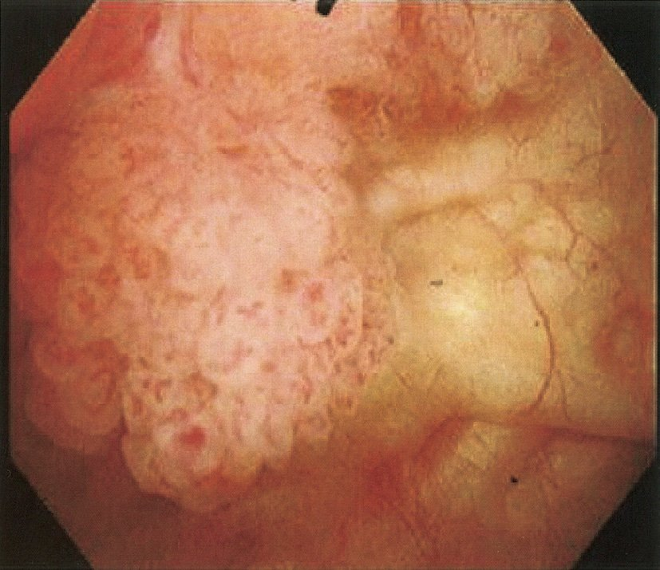
| 選択肢 | 解説 |
|---|---|
| ａ 膀胱全摘術 | 病理はpTa＝筋層に浸潤していない（筋層非浸潤性）ので、この段階でいきなり膀胱を摘出するのは過剰である。全摘が検討されるのは「BCGを行っても上皮内癌が残る／再発する（BCG不応）」場合で、順序が一段先である。尿路変向を伴う不可逆的な手術なので、膀胱温存の手立てを尽くしてから考える。 |
| ｂ 放射線療法 | 尿路上皮癌に放射線は効くが、適応は筋層浸潤性膀胱癌で膀胱温存を図る場合（化学放射線療法）や、手術不能例の緩和である。上皮内癌のような表在性の病変に外照射を当てるのは適応外で、放射線性膀胱炎による頻尿・出血という不利益だけが残る。 |
| ｃ 抗癌化学療法 | 全身化学療法（GC療法など）は転移例や筋層浸潤性膀胱癌の術前・術後補助療法である。筋層非浸潤性の病変に全身投与する意義はない。（「膀胱内注入」なら選択肢になりうるが、上皮内癌に対してはBCGが標準で、殺細胞性薬より有効性が高い。） |
| ｄ 分子標的薬投与 | 腎細胞癌の治療の主役であり（第2章）、尿路上皮癌で用いるのは進行・転移例に限られる（エンホルツマブ ベドチンなどの抗体薬物複合体や、免疫チェックポイント阻害薬）。筋層非浸潤性の段階で全身薬物療法を行う場面ではない。 |
| ◯ ｅ BCG 膀胱内注入療法 | ◯ 膀胱上皮内癌（CIS）に対する標準治療である。上皮内癌は平坦な高異型度病変で、TURBTでは削り残しが避けられず、細胞診が陽性のまま残る——本例の「術後1か月でも細胞診クラスⅤ」がまさにその状態である。BCG（弱毒化ウシ型結核菌）を膀胱内に注入すると、膀胱粘膜に局所免疫応答（Th1優位の細胞性免疫）が惹起され、癌細胞が免疫学的に排除される。週1回・6〜8回の導入を行い、以後維持療法を続ける。上皮内癌の完全奏効率は70〜80％と高く、殺細胞性薬の膀注より明確に優れる。 |
| リスク | 典型例 | 治療 |
|---|---|---|
| 低リスク | 単発・小さい・低異型度のTa | TURBT＋術後単回膀注（殺細胞性薬） |
| 中リスク | 多発・再発するTa | TURBT＋膀注（殺細胞性薬またはBCG） |
| 高リスク | 上皮内癌（CIS）・高異型度・T1・多発再発 | TURBT＋BCG膀注（導入＋維持） |
| BCG不応 | BCGを行っても残存・再発する | 膀胱全摘除術（＋尿路変向） |
| 筋層浸潤（T2以上） | — | 術前化学療法＋膀胱全摘除術／化学放射線療法 |
| 到達部位 | 術式 | 適応 |
|---|---|---|
| 尿道 | 内視鏡的尿道切開術 | 短い尿道狭窄 |
| 前立腺部尿道 | TUR-P・レーザー核出術（HoLEP） | 前立腺肥大症（良性） |
| 膀胱 | TURBT・経尿道的膀胱砕石術 | 膀胱腫瘍・膀胱結石（NO.76・110） |
| 尿管 | 尿管鏡（TUL）・尿管ステント留置 | 尿管結石・尿管腫瘍の生検・閉塞の解除 |
| 腎盂 | 軟性尿管鏡（f-TUL） | 腎結石・腎盂腫瘍の生検 |
| 選択肢 | 解説 |
|---|---|
| ａ 腎細胞癌 | 腎実質に発生する腫瘍であり、尿路の内腔からは到達できない。治療は腎部分切除術または根治的腎摘除術（第2章 NO.45）。経尿道的に届く範囲は尿道・前立腺・膀胱・尿管・腎盂の「内腔」までで、実質の腫瘍は対象外である。 |
| ◯ ｂ 筋層非浸潤性膀胱癌 | ◯ 経尿道的膀胱腫瘍切除術（TURBT）のまさに適応である。膀胱内腔に突出する腫瘍を切除鏡で削り取り、同時に筋層まで採取して深達度を判定する。筋層非浸潤性であれば膀胱を温存でき、必要に応じて膀注（BCG・殺細胞性薬）を追加する（NO.72・90・106・122）。 |
| ｃ 局所限局性前立腺癌 | 前立腺癌の根治術は前立腺全摘除術（被膜を含めて前立腺と精囊を摘出する）で、経尿道的に「削る」手術では根治できない。TUR-Pは前立腺肥大症（良性）に対して内腺だけをくり抜く手術で、癌の好発部位である外腺（辺縁領域）は残ってしまう——ここが混同されやすい点である。（前立腺癌でTUR-Pを行うのは、進行癌による尿閉を解除する緩和目的に限られる。） |
| ◯ ｄ 尿道狭窄 | ◯ 内視鏡的尿道切開術（direct vision internal urethrotomy）の適応である。尿道内視鏡を挿入し、狭窄部の瘢痕を冷刀（コールドナイフ）で12時方向に切開して内腔を広げる。短い（2cm未満）単発の狭窄によい適応で、長い・複数・再発を繰り返す狭窄には尿道形成術（開放手術）を選ぶ。 |
| ｅ 尿道カルンクル | 外尿道口の後壁に生じる良性の肉芽性ポリープで、閉経後の女性にみられ、エストロゲン低下による尿道粘膜の萎縮・脱出が背景にある。外尿道口という「体表から見える位置」にあるので、内視鏡を使う必要がなく、経尿道的手術の適応にならない。無症状なら経過観察、出血や疼痛があればエストロゲン軟膏の局所塗布や、直視下の切除・凝固を行う。 |
| 前立腺肥大症（良性） | 前立腺癌（悪性） | |
|---|---|---|
| 発生部位 | 内腺（移行領域） | 外腺（辺縁領域） |
| 直腸指診 | 弾性硬・表面平滑・腫大 | 石様硬・表面不整・硬結 |
| 手術 | TUR-P／HoLEP（内腺だけをくり抜く） | 前立腺全摘除術（被膜ごと・精囊も） |
| 合併症 | 逆行性射精（最多）・TUR症候群 | 腹圧性尿失禁・勃起障害 |
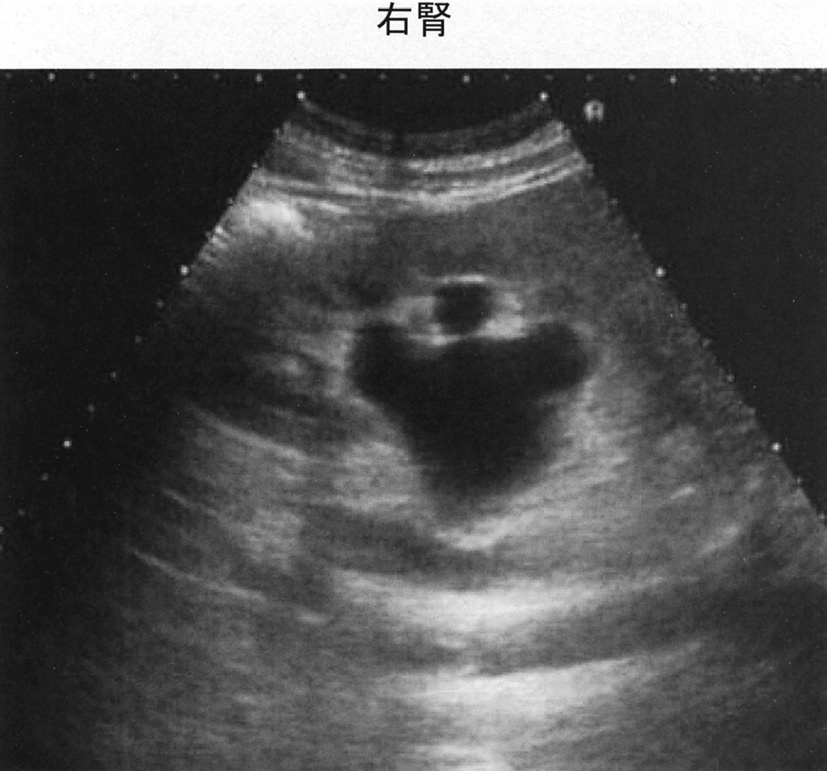
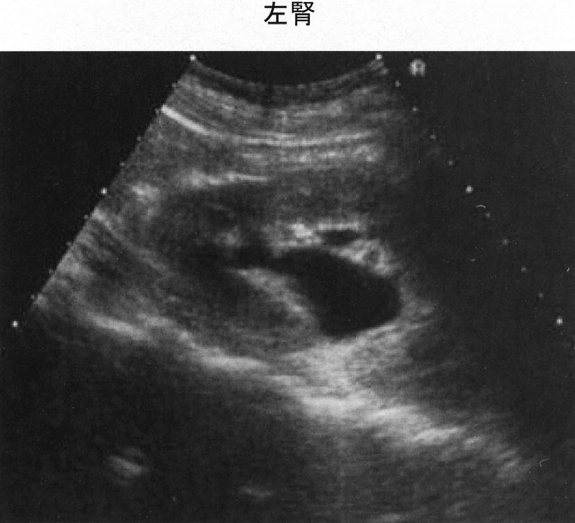
| 選択肢 | 解説 |
|---|---|
| ａ 血液透析 | 腎後性腎不全では「閉塞を解除すれば腎機能は回復する」ので、まず行うべきはドレナージであって透析ではない。K 4.8mEq/L と高カリウム血症もアシドーシスも肺水腫もなく、緊急透析の適応を満たさない。（閉塞を解除しても尿毒症が改善しない場合に、補助的に透析を検討する。） |
| ◯ ｂ 腎瘻造設術 | ◯ 腫瘍で両側尿管口が塞がれた腎後性腎不全に対する唯一実行可能なドレナージである。「両側の尿管口は同定できなかった」＝膀胱内から尿管にガイドワイヤーを通せない＝逆行性の尿管ステント留置は不可能という記述が決定的な根拠になる。したがって背中から腎盂を直接穿刺する経皮的腎瘻（順行性ドレナージ）を選ぶ。両腎とも閉塞しているので、原則として両側に造設する。減圧すれば腎機能は速やかに回復し、化学療法や膀胱全摘といった本来の治療へ進める。 |
| ｃ 膀胱全摘術 | 筋層浸潤性膀胱癌の根治術ではあるが、クレアチニン5.6mg/dLの腎不全のまま大手術に踏み切ることはできない。麻酔・輸液・薬剤の腎排泄すべてが問題になる。まず腎機能を回復させてから根治治療を計画するのが正しい順序である。 |
| ｄ 尿管ステント留置 | 考え方としては正しいが、本例では物理的に不可能である。逆行性ステントは膀胱鏡下に尿管口を見つけ、そこからガイドワイヤーを通して行う——その尿管口が腫瘍に埋没して「同定できなかった」と明記されているのがこの選択肢を外す根拠である。この一文を読み落とすと b と d で迷う——本問の分かれ目はここにある。 |
| ｅ 経尿道的膀胱腫瘍切除術 | 既に筋層浸潤性と診断がついており、TURBTで根治はできない。三角部から頸部に広がる広基性腫瘍を削れば大量出血の危険があり、尿管口の閉塞も解除できる保証がない。腎不全を放置したまま行う処置ではない。 |
| 状況 | 選ぶドレナージ | 理由 |
|---|---|---|
| 結石による閉塞・尿管口は正常に見える | 尿管ステント（逆行性） | 低侵襲・体外にチューブが出ない（NO.75・105・118） |
| 腫瘍で尿管口が埋没・同定できない | 経皮的腎瘻（順行性） | 膀胱側から到達できない（本例） |
| 全身状態が極めて不良・出血傾向 | 状況による | ステントは局所麻酔で短時間／腎瘻は確実に減圧できる |
| 骨盤内腫瘍による外部からの圧迫 | 腎瘻が確実 | ステントは腫瘍に押し潰されて機能しないことがある |
| 選択肢 | 解説 |
|---|---|
| ａ 飲水制限 | 安易な飲水制限は勧められない。過剰な水分摂取があれば適正化を助言することはあるが、制限しすぎると尿が濃縮されて膀胱を刺激し、尿路感染・尿路結石のリスクも上がる。生活指導としてはカフェイン・アルコール・炭酸の制限、膀胱訓練、骨盤底筋訓練が主体になる。 |
| ｂ 抗菌薬の変更 | そもそも細菌感染ではない。尿沈渣で白血球1〜4/1視野（膿尿なし）、細菌（－）——感染を示す所見が一つもないのに抗菌薬を変えても効かないだけでなく、耐性菌を作るだけである。「抗菌薬が効かない頻尿」で最初にすべきは「本当に感染か」を疑い直すことである。 |
| ｃ 抗不安薬の経口投与 | 心因性頻尿は「夜間睡眠中には症状がない」「1回排尿量が極端に少ない」といった特徴で診断する除外診断である。本例にそれを示唆する記載はなく、器質的・機能的原因を検討する前に精神科的な薬に飛ぶのは適切でない。 |
| ｄ α1 遮断薬の経口投与 | α1遮断薬は前立腺平滑筋と膀胱頸部を弛緩させて「出にくさ（下部尿路閉塞）」を改善する薬で、主な適応は男性の前立腺肥大症である。本例は女性で、残尿もない＝出にくさの問題ではない。問題は「溜められないこと（蓄尿障害）」なので薬の狙いが合わない。 |
| ◯ ｅ 抗コリン薬の経口投与 | ◯ 過活動膀胱に対する第一選択の薬物療法である。蓄尿期に排尿筋が不随意に収縮するのを、ムスカリンM3受容体を遮断して抑える。本例は尿意切迫感＋頻尿があり、感染（細菌・膿尿なし）・悪性腫瘍（細胞診クラスⅡ）・排出障害（残尿なし）がいずれも否定されている——過活動膀胱は除外診断なので、この「否定の並び」が診断そのものである。実地では行動療法（膀胱訓練・骨盤底筋訓練）を併用し、抗コリン薬かβ3作動薬（ミラベグロン）を選ぶ。 |
| 蓄尿症状（溜められない） | 排尿症状（出せない） | |
|---|---|---|
| 症状 | 頻尿・夜間頻尿・尿意切迫感・切迫性尿失禁 | 尿勢低下・尿線途絶・腹圧排尿・残尿感 |
| 残尿 | 少ない（本例は残尿なし） | 多い |
| 代表疾患 | 過活動膀胱 | 前立腺肥大症・神経因性膀胱（低活動） |
| 薬 | 抗コリン薬（M3遮断）／β3作動薬（ミラベグロン） | α1遮断薬（タムスロシン等）／PDE5阻害薬 |
| 注意 | 抗コリン薬は閉塞隅角緑内障・尿閉に禁忌。口渇・便秘・認知機能低下（高齢者） | α1遮断薬は起立性低血圧・術中虹彩緊張低下症候群 |
| 知りたいこと | 検査 | 例 |
|---|---|---|
| 形（静的な構造） | CT・MRI・超音波・内視鏡・尿路造影 | 腫瘍の有無と広がり・結石・水腎症 |
| 動き（動的な現象） | 排尿時膀胱尿道造影・ウロダイナミクス（膀胱内圧測定）・尿流測定 | 膀胱尿管逆流・排尿筋過活動・排尿筋括約筋協調不全 |
| 機能（どれだけ働いているか） | レノグラム・DMSAシンチ・GFR | 分腎機能・腎瘢痕・閉塞の有無 |
| 細胞・組織（良悪の別） | 尿細胞診・生検 | 尿路上皮癌・前立腺癌 |
| 選択肢 | 解説 |
|---|---|
| ａ 腎腫瘍 ―――――――――――― 腹部造影CT | 有用な組合せである。腎細胞癌は血管に富み、ダイナミック造影CTで皮髄相に強く濃染し、実質相で洗い出される（wash-out）——これが診断の決め手になる（第2章）。病期診断（静脈内腫瘍塞栓・リンパ節転移）にも不可欠である。 |
| ｂ 尿管腫瘍 ――――――――――― 静脈性尿路造影 | 有用な組合せである。造影剤が腎から排泄されて尿路を満たすので、尿管内の腫瘍が「陰影欠損（filling defect）」として描出される。現在はより詳細なCT urography が主流になっているが、上部尿路の腫瘍を尿路の形態から捉えるという原理は同じで、有用性が低いわけではない。 |
| ◯ ｃ 膀胱尿管逆流 ――――――――― 尿管鏡検査 | ◯ これが有用性の低い組合せである。膀胱尿管逆流は「膀胱に尿が溜まったとき／排尿時に、尿が尿管へ逆流するか」という動的な現象で、診断には排尿という生理的な動きを見なければならない。尿管鏡は麻酔下に尿管の内腔を「形態として」観察する検査なので、逆流という動きは原理的に捉えられない。しかも小児に全身麻酔と尿管への器具挿入という侵襲を課すことになり、尿管損傷・狭窄のリスクまで負う。正しい検査は排尿時膀胱尿道造影（VCUG）である（NO.78・107・125）。 |
| ｄ 間質性膀胱炎 ――――――――― 膀胱鏡検査 | 有用な組合せである。間質性膀胱炎の確定診断は麻酔下の膀胱水圧拡張と膀胱鏡で行い、Hunner病変や拡張後の粘膜下点状出血を確認する（NO.71）。同時に癌の除外もできる。 |
| ｅ 前立腺腫瘍 ―――――――――― 経直腸超音波ガイド下生検 | 有用な組合せである。前立腺癌の確定診断は組織診断でしか得られず、経直腸（または経会陰）超音波ガイド下に系統的に針生検を行うのが標準である。前立腺は直腸のすぐ前にあるので、直腸から超音波と針が届く——解剖に即した合理的な方法である。 |
| 検査 | 役割 | 備考 |
|---|---|---|
| 排尿時膀胱尿道造影（VCUG） | 逆流の有無とグレード（Ⅰ〜Ⅴ度）＝確定診断 | 尿道カテーテルから造影剤を注入し、蓄尿期と排尿期に透視する。後部尿道弁も同時に分かる |
| 核医学的膀胱造影 | 逆流の有無（被曝が少ない） | グレード分類の精度は劣る。経過観察向き |
| DMSA腎シンチ | 腎瘢痕（逆流性腎症）と分腎機能 | 「逆流の結果、腎がどれだけ傷んだか」を見る（NO.78） |
| 腹部超音波 | 水腎症・腎の大きさのスクリーニング | 逆流そのものは分からない |
| 基礎疾患 | 機序 | 結石 |
|---|---|---|
| 原発性副甲状腺機能亢進症 | PTH↑→高Ca血症→高Ca尿症 | カルシウム結石 |
| Cushing症候群・長期ステロイド | 骨吸収↑・高Ca尿症 | カルシウム結石 |
| 遠位尿細管性アシドーシス（Ⅰ型RTA） | 尿が酸性化できずアルカリ性のまま＋低クエン酸尿 | リン酸カルシウム結石・腎石灰化 |
| 痛風・高尿酸血症 | 酸性尿＋高尿酸尿 | 尿酸結石 |
| 骨髄増殖性疾患・腫瘍崩壊症候群 | 尿酸産生↑ | 尿酸結石 |
| Crohn病・短腸症候群 | 脂肪吸収不良→Caが脂肪酸と結合→遊離シュウ酸の吸収↑（腸性高シュウ酸尿症） | シュウ酸カルシウム結石 |
| シスチン尿症 | 近位尿細管でのシスチン再吸収障害（常染色体潜性） | シスチン結石。小児期から反復 |
| ウレアーゼ産生菌感染（Proteus等） | 尿素→アンモニア→尿がアルカリ化 | リン酸Mgアンモニウム（サンゴ状結石） |
| 選択肢 | 解説 |
|---|---|
| ａ 尿酸結石が最も多い。 | 最も多いのはシュウ酸カルシウム結石で約80％、尿酸結石は約5％である（NO.70）。出題頻度が高いために印象に残りやすいが、頻度では圧倒的少数である。 |
| ｂ 原発性アルドステロン症に生じる。 | 原発性アルドステロン症は高血圧・低カリウム血症・代謝性アルカローシスを来すが、尿中カルシウム排泄を著明に増やすわけではなく、尿路結石の代表的な原因疾患には挙げられない。結石を来す内分泌疾患は原発性副甲状腺機能亢進症とCushing症候群である。 |
| ｃ 尿酸結石はエックス線透過性が低い。 | 逆で、尿酸結石はエックス線透過性が「高い」（＝写らない）。「透過性が高い＝Ｘ線を素通りさせる＝陰影として写らない（radiolucent）」という言い換えを取り違えないこと。尿酸は炭素・窒素・水素・酸素だけで構成され、カルシウムのような原子番号の大きい元素を含まないため周囲との吸収差が出ない（NO.74）。 |
| ◯ ｄ シスチン結石に重炭酸ナトリウムは有効である。 | ◯ シスチンの溶解度は尿pHに強く依存し、pHを7.0以上に上げると溶解度が飛躍的に高まる。重炭酸ナトリウムやクエン酸カリウムで尿をアルカリ化することは、シスチン結石の治療・再発予防の基本である。これに大量の飲水（1日尿量3L以上）を加え、不十分ならチオプロニン・D-ペニシラミンでジスルフィド結合を切って可溶化する。尿アルカリ化が有効な結石は「尿酸」と「シスチン」の2つと覚える。 |
| ◯ ｅ 原発性副甲状腺〈上皮小体〉機能亢進症に生じる。 | ◯ 尿路結石を来す代表的な内分泌疾患である。PTHの過剰分泌 → 骨吸収の亢進と腸管からのカルシウム吸収増加 → 高カルシウム血症 → 糸球体でろ過されるカルシウムが増える → 高カルシウム尿症 → カルシウム結石という一本道でできる。PTHは同時に尿細管でのリン再吸収を抑えるので高リン尿となり、リン酸カルシウム結石もできやすい。「骨・結石・腹部症状・精神症状（bones, stones, abdominal groans, psychic moans）」という古典的な語呂で表される。再発性・両側性・多発性の結石では必ず血清カルシウムとPTHを測る。 |
| 尿pH | できる結石 | 治療の向き |
|---|---|---|
| 酸性（pH＜5.5） | 尿酸結石・シスチン結石 | アルカリ化（クエン酸K・重炭酸Na）で溶かす |
| アルカリ性（pH＞7.0） | リン酸Mgアンモニウム（感染結石）・リン酸カルシウム | 酸性化・感染の根絶・完全摘石 |
| 中性付近（pHに依存しない） | シュウ酸カルシウム | 飲水・クエン酸・サイアザイド |
| 選択肢 | 解説 |
|---|---|
| ａ 思春期に発症する。 | 原発性の膀胱尿管逆流は先天性であり、発見されるのは乳幼児期（多くは2歳未満）である。粘膜下トンネルが先天的に短いことが原因で、成長とともに膀胱壁が厚くなりトンネルが相対的に長くなるため、思春期までに大半は自然消失する。思春期に「発症」するものではない。 |
| ｂ 肉眼的血尿を認める。 | 逆流そのものは出血を起こさない。VURの主症状は反復する有熱性尿路感染であって血尿ではない。小児の肉眼的血尿を見たら糸球体腎炎（IgA腎症・溶連菌感染後）・結石・Wilms腫瘍・特発性高カルシウム尿症などを考える。 |
| ◯ ｃ 尿路感染症の原因になる。 | ◯ 膀胱尿管逆流の臨床的な本質である。通常、膀胱内の細菌は排尿とともに洗い流されるが、逆流があると①感染尿が上部尿路（腎盂）まで押し上げられ、②排尿後に尿管に残った尿が膀胱へ戻る（残尿と同じ状態になる）——この2つが重なって、単なる膀胱炎で済むはずの感染が急性腎盂腎炎になる。だからVURは「乳幼児の反復する有熱性尿路感染」として発見される。繰り返せば腎瘢痕（逆流性腎症）が残り、将来の高血圧・蛋白尿・慢性腎臓病につながる（NO.78・103・107・120・125）。 |
| ｄ 排泄性腎盂造影で診断する。 | 排泄性腎盂造影（静脈性尿路造影）は静脈に造影剤を入れ、腎から排泄される流れを見る検査で、「上から下へ」の流れしか描出できない。逆流は「下から上へ」の現象なので原理的に写らない。確定診断は排尿時膀胱尿道造影（VCUG）である（NO.94）。 |
| ｅ 腎機能障害が急速に進行する。 | 逆流性腎症の進行は年単位でゆっくりである。腎盂腎炎を繰り返すたびに瘢痕が少しずつ増え、数年〜数十年かけて高血圧・蛋白尿・慢性腎臓病へ至る。「急速に」進行するのは急速進行性糸球体腎炎などであり、VURの経過とは異なる。ゆっくりだからこそ早期に発見して感染を防ぐ意義がある。 |
| 度 | 造影所見 | 自然消失 | 方針 |
|---|---|---|---|
| Ⅰ | 尿管までの逆流 | 高い（80％以上） | 抗菌薬予防投与＋経過観察 |
| Ⅱ | 腎盂・腎杯まで達するが拡張なし | 高い | |
| Ⅲ | 軽度の尿管・腎盂拡張、円蓋は保たれる | 中等度 | |
| Ⅳ | 中等度の拡張・蛇行、円蓋の鈍化 | 低い | 手術（膀胱尿管新吻合術）を検討 |
| Ⅴ | 著明な拡張・蛇行、乳頭陰影の消失 | きわめて低い |
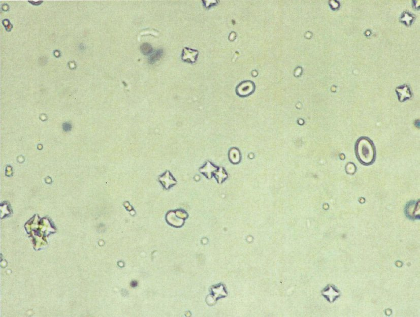
| 結晶 | 形 | 尿pH | 意味 |
|---|---|---|---|
| シュウ酸カルシウム（二水和物） | 正八面体・封筒状（ピラミッドを重ねた形） | 問わない | 最も多い。健常者の尿にも出る |
| シュウ酸カルシウム（一水和物） | 亜鈴状・楕円形 | 問わない | エチレングリコール中毒でも出現 |
| 尿酸 | 菱形・板状・バラの花状。黄褐色 | 酸性 | 痛風・腫瘍崩壊症候群 |
| シスチン | 六角形（板状） | 酸性 | これを見たらシスチン尿症を確定的に疑う |
| リン酸Mgアンモニウム | 「棺の蓋」状の長方形 | アルカリ性 | ウレアーゼ産生菌（Proteus）の感染 |
| 選択肢 | 解説 |
|---|---|
| ａ 腎囊胞 | 単純性腎囊胞は無症状で偶然発見されるのが通常で、突然の腰部症状も血尿も来さない（第2章）。囊胞内出血や感染を起こせば疼痛が出るが、尿沈渣に結晶が現れる病態ではない。 |
| ｂ 糸球体腎炎 | 糸球体性血尿では変形赤血球と赤血球円柱を認めるのが特徴で、結晶が主役になることはない。また糸球体腎炎は「突然の片側の腰部痛」という発症様式を取らない。蛋白尿1＋は血液の混入で説明できる程度である。 |
| ◯ ｃ 尿路結石症 | ◯ 尿沈渣に結晶を認め、突然の片側腰部症状と血尿を伴う——尿路結石の典型像である。結晶尿は結石の存在を示唆する重要な所見で、シュウ酸カルシウム結晶は「正八面体（封筒の形）」、尿酸結晶は「菱形・板状で黄褐色」、シスチン結晶は「六角形」、リン酸Mgアンモニウム結晶は「棺の蓋（coffin lid）状」と形から成分が推定できる。突然発症・片側性・潜血2＋・生来健康という並びは結石以外に説明しにくい。 |
| ｄ 膀胱腫瘍 | 膀胱腫瘍の典型は「無痛性肉眼的血尿」である。突然の腰部の重圧感という上部尿路の症状は説明できない。また40歳・非喫煙の記載で、リスク的にも合わない。 |
| ｅ 膀胱炎 | 膀胱炎の症状は排尿時痛・頻尿・残尿感・恥骨上部の不快感であり、腰部（側腹部・背部）の症状は出ない。腰背部痛があれば腎盂腎炎への進展を考えるが、本例は発熱がなく（36.5℃）、膿尿の記載もない。 |
| 疾患 | 手掛かり | 次の一手 |
|---|---|---|
| 尿路結石 | 間欠的疝痛・血尿・CVA叩打痛・発熱なし | 腹部単純CT |
| 閉塞性腎盂腎炎 | 上記＋発熱・ショック | 緊急ドレナージ＋抗菌薬 |
| 腹部大動脈瘤破裂・大動脈解離 | 高齢・拍動性腫瘤・血圧左右差・ショック | 造影CT（見逃せば致死的） |
| 腎梗塞 | 心房細動・LD著明高値・血尿 | 造影CT |
| 腎盂腎炎 | 発熱・膿尿・CVA叩打痛 | 尿培養・血液培養 |
| 急性虫垂炎・卵巣囊腫茎捻転 | 腹膜刺激徴候・婦人科的所見 | 超音波・CT |
| 選択肢 | 解説 |
|---|---|
| ａ 塩化アンモニウム | 尿を「酸性化」する薬である。尿酸結石は酸性尿でできるので、これを使えば結石はさらに悪化する——治療の向きが真逆である。（尿の酸性化が意図されるのは感染結石（リン酸Mgアンモニウム）でアルカリ尿を是正する場合などである。） |
| ｂ アスコルビン酸 | ビタミンC は体内でシュウ酸に代謝されるため、大量摂取はシュウ酸カルシウム結石の危険因子になる（NO.104・112）。尿を酸性化する作用もあり、尿酸結石にも不利である。結石患者に勧めてはいけない薬の代表格である。 |
| ｃ サイアザイド | 遠位尿細管でのカルシウム再吸収を促して尿中カルシウムを減らすため、高カルシウム尿症を伴うカルシウム結石の再発予防に用いる（NO.87）。尿酸には作用せず、むしろ血清尿酸を上げる副作用があるので尿酸結石には不適である。 |
| ◯ ｄ 重炭酸ナトリウム | ◯ 尿をアルカリ化して尿酸を溶かす。尿酸のpKaは約5.5で、尿pHが5.5を下回ると溶けにくい遊離尿酸として析出するが、pHを6.2〜6.8に上げると可溶性の尿酸塩（urate）になって溶解度が跳ね上がる。尿酸結石は「唯一、薬で溶かせる結石」であり、既にできた結石も溶解しうる。実地ではクエン酸カリウム・クエン酸ナトリウム配合剤がナトリウム負荷が少なく好まれるが、重炭酸ナトリウムも同じ機序で有効である。 |
| ◯ ｅ アロプリノール | ◯ キサンチンオキシダーゼを阻害して尿酸の産生そのものを減らす。血清尿酸だけでなく尿中尿酸排泄も減るので、尿酸結石の再発予防に直接効く（NO.87）。尿アルカリ化と組み合わせるのが標準で、高尿酸尿を伴うカルシウム結石にも有効とされる（尿酸結晶がシュウ酸カルシウムの核になるため）。尿酸排泄促進薬（ベンズブロマロン）は尿中尿酸を増やすので結石には使えない——ここが対比の要である。 |
| 向き | 薬 | 使う場面 |
|---|---|---|
| アルカリ化（pHを上げる） | クエン酸カリウム・クエン酸ナトリウム・重炭酸ナトリウム・アセタゾラミド | 尿酸結石・シスチン結石・腫瘍崩壊症候群の予防・サリチル酸中毒の排泄促進 |
| 酸性化（pHを下げる） | 塩化アンモニウム・アスコルビン酸・メチオニン | 感染結石（アルカリ尿の是正）・一部の薬物中毒 |
| 因子 | 内容 | 備考 |
|---|---|---|
| 喫煙 | 最大の危険因子（リスク2〜4倍） | 寄与危険度は男性の約50％。タバコにも芳香族アミンが含まれる |
| 芳香族アミン | 2-ナフチルアミン・ベンジジン・4-アミノビフェニル | 染料・ゴム・皮革工業。潜伏期20〜30年。労災 |
| シクロホスファミド | 代謝産物アクロレインが膀胱を傷害 | 出血性膀胱炎→膀胱癌。メスナと大量輸液で予防（NO.115） |
| 骨盤への放射線照射 | 照射後10年前後で発症 | 前立腺癌・子宮頸癌の治療後（NO.109） |
| 慢性刺激（結石・カテーテル・住血吸虫症） | 扁平上皮化生を経て扁平上皮癌 | ビルハルツ住血吸虫症（エジプト等） |
| フェナセチン乱用 | 鎮痛薬腎症とともに上部尿路癌 | 現在は使用されない |
| 選択肢 | 解説 |
|---|---|
| ◯ ａ 2-ナフチルアミン | ◯ 代表的な芳香族アミンで、膀胱癌を起こす職業性発癌物質として最も有名である。染料・ゴム・皮革・塗料工業で用いられ、我が国では製造・使用が禁止されている。機序——体内で吸収された芳香族アミンは肝で水酸化され、グルクロン酸抱合を受けて尿中に排泄される。膀胱の酸性尿の中でこの抱合が外れ、再び発癌性のある活性代謝物に戻って尿路上皮を長時間曝露する。だから全身に投与されても膀胱にだけ癌ができる。曝露から発症まで20〜30年の潜伏期があり、労働災害の対象となる。 |
| ｂ カドミウム | カドミウムの標的は近位尿細管で、再吸収障害によるFanconi症候群様の病態（低分子蛋白尿・尿糖・アミノ酸尿）と骨軟化症を起こす——イタイイタイ病がこれである。腎尿細管障害であって、尿路上皮の発癌物質ではない。（カドミウムはIARCで肺癌の原因として分類されるが、膀胱癌の代表ではない。） |
| ｃ 水 銀 | 無機水銀は近位尿細管を障害してネフローゼ症候群・急性尿細管壊死を、有機水銀（メチル水銀）は中枢神経を障害（水俣病）する。いずれも膀胱癌の原因ではない。 |
| ｄ トルエン | 有機溶剤で、急性影響は中枢神経抑制（酩酊・意識障害）、慢性影響は小脳失調・認知機能低下・遠位尿細管性アシドーシスである。膀胱の発癌物質としては知られていない。（ベンゼンは造血器＝白血病、トルエンは中枢神経、と分けて覚える。） |
| ◯ ｅ ベンジジン | ◯ 2-ナフチルアミンと並ぶ代表的な芳香族アミン系の膀胱発癌物質である。染料（ベンジジン系アゾ染料）の原料として使われ、現在は製造・使用が禁止されている。機序は2-ナフチルアミンと同じ——尿中に排泄された抱合体が膀胱内で加水分解されて活性化する。ベンジジン・2-ナフチルアミン・4-アミノビフェニルの3つが「膀胱癌を起こす芳香族アミン」の御三家である。 |
| 物質 | 標的 | 病態 |
|---|---|---|
| 2-ナフチルアミン・ベンジジン | 膀胱（尿路上皮） | 膀胱癌 |
| カドミウム | 近位尿細管・骨 | Fanconi症候群様・骨軟化症（イタイイタイ病） |
| 鉛 | 造血系・神経・近位尿細管 | 貧血（好塩基性斑点）・伸筋麻痺・腹部疝痛 |
| 無機水銀 | 近位尿細管 | 急性尿細管壊死・ネフローゼ症候群 |
| 有機水銀（メチル水銀） | 中枢神経 | 水俣病（求心性視野狭窄・失調） |
| ベンゼン | 造血器 | 再生不良性貧血・急性骨髄性白血病 |
| トルエン | 中枢神経 | 小脳失調・遠位尿細管性アシドーシス |
| 塩化ビニル | 肝 | 肝血管肉腫 |
| アスベスト | 胸膜・肺 | 中皮腫・肺癌 |
| 結石 | 理由 | |
|---|---|---|
| 陽性（写る） | シュウ酸カルシウム | カルシウム（原子番号20）を含む |
| リン酸カルシウム | ||
| リン酸Mgアンモニウム | マグネシウム・リンを含む（やや淡い） | |
| 陰性（写らない） | 尿酸 | C・N・H・Oのみ。軟部組織と吸収差がない |
| シスチン | 硫黄を含むのでごく淡く写ることがある（faintly opaque） | |
| キサンチン・薬剤結石（インジナビル） | 稀 |
| 選択肢 | 解説 |
|---|---|
| ◯ ａ 尿 酸 | ◯ 超音波では結石が確実に存在するのに、エックス線写真には写らない＝エックス線陰性（radiolucent）結石である。エックス線陰性となる結石は尿酸・シスチン・キサンチン、および一部の薬剤結石（インジナビル）に限られる。このうち尿酸結石が圧倒的に多く、本例は血清尿酸8.6mg/dLの高尿酸血症を伴う中年男性という背景も合致する。再発予防はアロプリノール＋尿アルカリ化＋飲水（NO.87・98）。 |
| ｂ 炭酸カルシウム | カルシウムを含む結石はすべてエックス線陽性（写る）。原子番号20のカルシウムが周囲の軟部組織より強くエックス線を吸収するためである。（なお尿路結石として炭酸カルシウム単独の結石はほとんど存在しない。） |
| ｃ リン酸カルシウム | カルシウム結石なのでエックス線陽性である。アルカリ尿でできやすく、遠位尿細管性アシドーシス（Ⅰ型RTA）や原発性副甲状腺機能亢進症が背景にある。本例の尿は高尿酸血症を伴う酸性尿と推定され、条件も逆である。 |
| ｄ シュウ酸カルシウム | 最も頻度の高い結石（約80％）だが、カルシウムを含むので明瞭にエックス線に写る。「エックス線陰性」という条件が与えられている時点で除外される。この肢は「頻度が最多だから」という理由で選ばれやすい罠であり、Ｘ線に写るかどうかの条件を先に読むことが肝心である。 |
| ｅ リン酸マグネシウムアンモニウム | 感染結石（ストルバイト結石）でエックス線陽性である。ウレアーゼ産生菌（Proteus・Klebsiella）が尿素を分解してアンモニアを生じ、尿がアルカリ化してできる。腎盂の形に沿って広がるサンゴ状結石になり、膿尿・細菌尿・アルカリ尿を伴う——本例は白血球1〜4/1視野で膿尿がなく、感染の所見がない。 |
| 条件 | 背景 | 本例 |
|---|---|---|
| 酸性尿（pH＜5.5） | インスリン抵抗性・肥満・メタボ・下痢（重炭酸喪失） | — |
| 高尿酸尿 | 痛風・高プリン食・尿酸排泄促進薬・腫瘍崩壊症候群・骨髄増殖性疾患 | 尿酸8.6mg/dL |
| 尿量減少 | 飲水不足・発汗・回腸ストーマ | — |
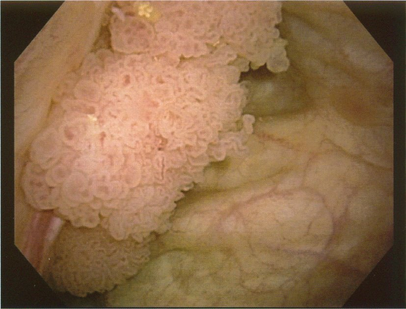
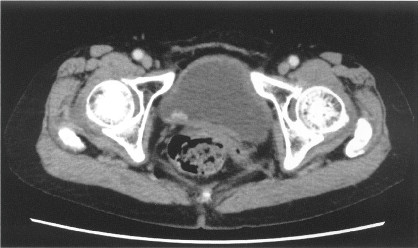
| 選択肢 | 解説 |
|---|---|
| ａ 殺細胞性抗癌薬 | 全身化学療法（GC療法など）は転移例か、筋層浸潤性膀胱癌に対する術前・術後補助療法である。本例は胸腹部CTと骨シンチで転移がなく、まだ深達度すら決まっていない——深達度を決めるのはTURBTの病理なので順序が逆である。 |
| ｂ 腎尿管全摘除術 | 腎盂・尿管癌（上部尿路上皮癌）の術式である（NO.84・111）。本例の腫瘍は膀胱鏡で見えている＝膀胱内の腫瘍で、上部尿路の病変ではない。「尿路上皮癌」という共通点から術式を取り違えないこと。 |
| ｃ BCG 膀胱内注入療法 | 上皮内癌および高リスク筋層非浸潤性膀胱癌に対する「TURBT後」の補助療法である（NO.90・114）。目に見える腫瘍がある状態で膀注しても腫瘍は消えず、病理診断の機会も失う。 |
| ◯ ｄ 経尿道的膀胱腫瘍切除術 | ◯ 膀胱腫瘍に対して「まず行うべき治療」は常にTURBTである。TURBTは①腫瘍を切除する治療であり、②筋層を含めて採取することで深達度（筋層浸潤の有無）を決める診断でもある。この病理結果がなければ「膀胱を温存できるのか、全摘が要るのか」が決まらない——すべての治療方針はTURBTの後に分岐する。本例は遠隔転移がなく、局所治療で完結しうる段階である。 |
| ｅ 免疫チェックポイント阻害薬 | 進行・転移性尿路上皮癌に対する薬物療法（ペムブロリズマブ等）であり、化学療法後の二次治療や、BCG不応の上皮内癌などに位置づけられる。転移のない初発の膀胱腫瘍に一次治療として使う薬ではない。 |
| 状況 | まずやること | 理由 |
|---|---|---|
| 膀胱腫瘍が見えている | TURBT | 診断（深達度）と治療を兼ねる |
| 閉塞＋発熱 | ドレナージ＋抗菌薬 | 敗血症を止めるのが最優先（NO.75・105・118） |
| 腎後性腎不全 | ドレナージ | 解除すれば腎機能は戻る（NO.92） |
| 結石の疝痛（発熱なし） | 鎮痛（NSAIDs）＋飲水 | まず痛みを取る。多くは自然排石 |
| 血尿の原因が不明 | 膀胱鏡・尿細胞診・画像 | 診断が先、治療は後 |
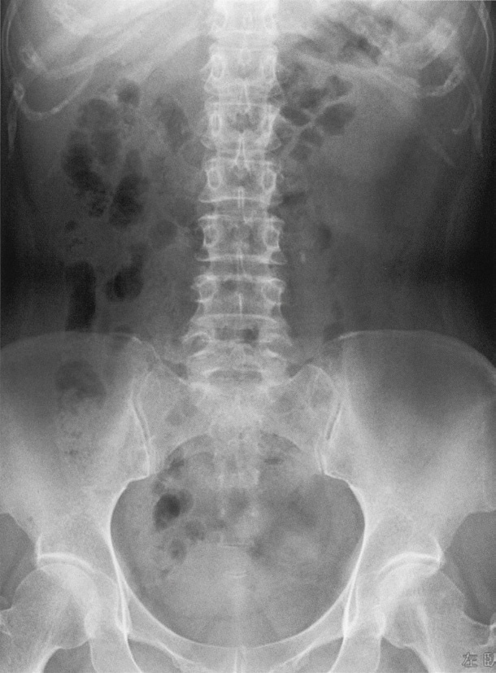
| 選択肢 | 解説 |
|---|---|
| ａ 「塩分摂取が有効です」 | 塩分は制限すべきものである。ナトリウム摂取が増えると、近位尿細管でナトリウム再吸収に連動するカルシウム再吸収が減り、尿中カルシウム排泄が増える。さらに尿中クエン酸（結晶化抑制因子）も減るので二重に不利である。 |
| ｂ 「脂肪摂取が有効です」 | 脂肪の過剰摂取は肥満とインスリン抵抗性を招き、メタボリックシンドロームを介して結石リスクを上げる（NO.70）。さらに脂肪吸収不良があると、腸管内のカルシウムが脂肪酸と結合してしまい、シュウ酸が遊離のまま吸収されて高シュウ酸尿になる（腸性高シュウ酸尿症）。 |
| ◯ ｃ 「クエン酸摂取が有効です」 | ◯ クエン酸は尿路結石の再発予防における中心的な因子である。作用は2つ——①尿中でカルシウムとキレート（可溶性複合体）を形成し、シュウ酸カルシウム・リン酸カルシウムの結晶化を直接抑える。②尿をアルカリ化して尿酸・シスチンの溶解度を高める。低クエン酸尿は結石患者の20〜60％にみられる代表的な代謝異常で、柑橘類・野菜からの摂取と、クエン酸カリウム製剤の内服で補う。レモン・オレンジなどのジュースが実際に推奨されるのに対し、グレープフルーツジュースは結石リスクを上げるとの報告があり推奨されない点も押さえておく。 |
| ｄ 「アルコール摂取が有効です」 | アルコールは利尿により脱水を招き、尿を濃縮する。とくにビールはプリン体が多く尿酸を上げる。「ビールは尿量が増えるから結石によい」というのは誤った俗説で、実際には水分収支がマイナスに傾く。 |
| ｅ 「ビタミンD 摂取が有効です」 | ビタミンDは腸管からのカルシウム吸収を増やし、尿中カルシウム排泄を増やすので、カルシウム結石の危険因子になる（NO.87）。「カルシウムを食事から通常量摂る」ことと「ビタミンD製剤で吸収を増やす」ことはまったく違う——ここを混同しないこと。 |
| 推奨する | 制限する | |
|---|---|---|
| 飲み物 | 水・麦茶（1日尿量2,000mL以上）／柑橘系ジュース | アルコール（特にビール）・清涼飲料・濃い紅茶/緑茶（シュウ酸） |
| ミネラル | カルシウム600〜800mg/日（食事から）・マグネシウム・クエン酸カリウム | 食塩・ビタミンD製剤・ビタミンC大量 |
| 食品 | 野菜・果物・食物繊維 | 動物性タンパク質・プリン体・シュウ酸の多い食品（ほうれん草・タケノコ・チョコ・ナッツ） |
| 生活 | 適正体重・適度な運動 | 夕食後すぐの就寝（夜間に尿が濃縮する）・肥満 |
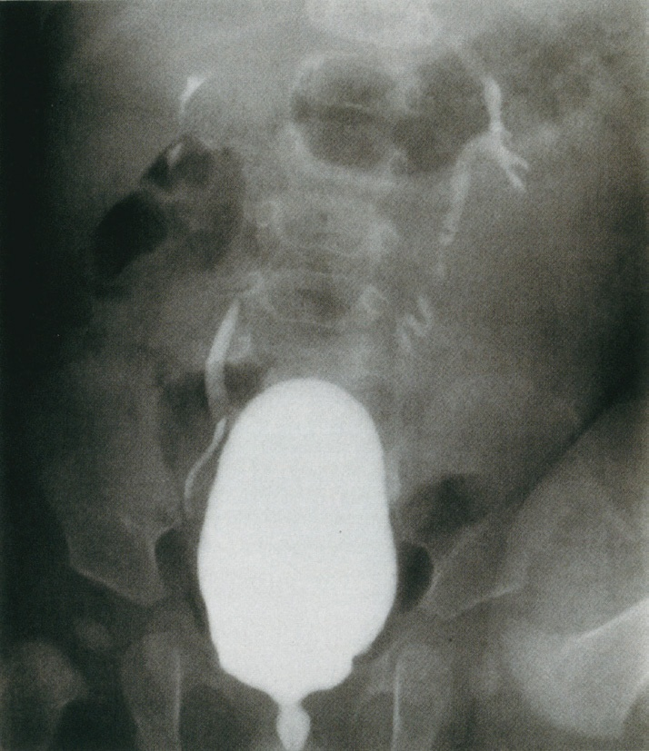
| 選択肢 | 解説 |
|---|---|
| ａ 腎膿瘍 | 腎実質内に膿が貯留する病態で、診断には造影CTや超音波を用いる。排尿時膀胱尿道造影では腎実質は評価できない——造影剤は膀胱の内腔にしか入らないためである。検査と疾患の対応が合わない。 |
| ｂ 精巣炎 | 陰囊内容の疾患で、症状は陰囊の腫脹・疼痛・発赤である。尿路造影で描出される臓器ではなく、本例の尿中白血球30〜50/HPF（膿尿）も説明できない。（乳幼児の精巣上体炎・精巣炎を見たら尿路奇形を疑うという流れはあるが、本問の主体ではない。） |
| ｃ 馬蹄腎 | 左右の腎の下極が正中で癒合した先天異常で、腎の位置・形の異常である（第2章 NO.53）。水腎症・結石・感染を合併しやすいが、排尿時膀胱尿道造影で診断する疾患ではない——腎の形は造影CTや超音波で見る。 |
| ◯ ｄ 膀胱尿管逆流 | ◯ 排尿時膀胱尿道造影（VCUG）は膀胱尿管逆流の確定診断法であり、「この検査を行った」こと自体が疾患を指している。臨床像も完全に一致する——1歳男児・5か月前にも39℃台の発熱（＝有熱性尿路感染の反復）・今回も高熱＋膿尿（白血球30〜50/HPF）。乳幼児が感冒症状を伴わない発熱を繰り返したら尿路感染を疑い、尿路感染を確認したらVURを疑う——この連鎖が小児泌尿器の基本線である（NO.78・107・120・125）。造影写真では膀胱から尿管・腎盂へ造影剤が逆流している像が見える。 |
| ｅ 尿管膀胱外開口 | 尿管異所開口のことで、主症状は女児の持続性尿失禁である（NO.88）。男児では開口部が必ず外尿道括約筋より近位（後部尿道・精管・精囊）になるので失禁しない。本例は男児で、主訴も発熱と膿尿であって失禁ではない。VCUGでは「膀胱に入らない尿管」は描出されないので、検査法としても合わない。 |
| 男児 | 女児 | |
|---|---|---|
| 乳児期の尿路感染 | 生後3か月未満では男児に多い（包茎で細菌が繁殖しやすい） | それ以降は女児に多い（尿道が短い） |
| 後部尿道弁 | 男児のみ | 起こらない |
| 尿管異所開口の失禁 | 起こらない（開口部が括約筋より近位） | 起こる（腟前庭・腟に開口しうる） |
| 膀胱尿管逆流 | どちらにも起こる。男児は年少で発見され自然消失しやすい | |
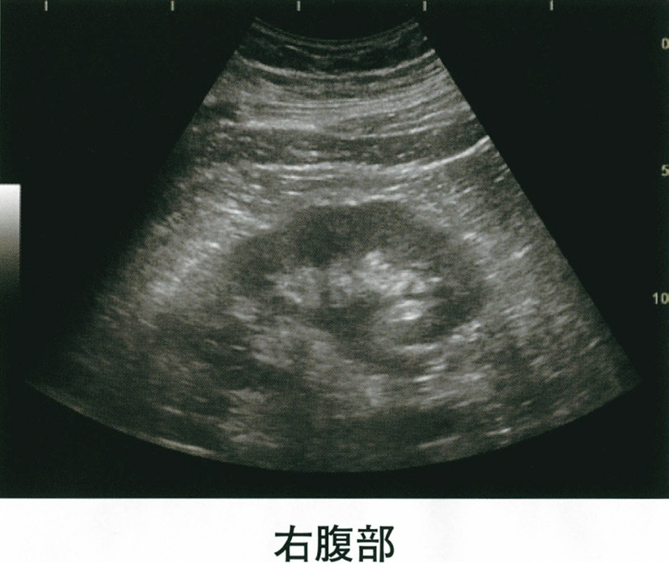
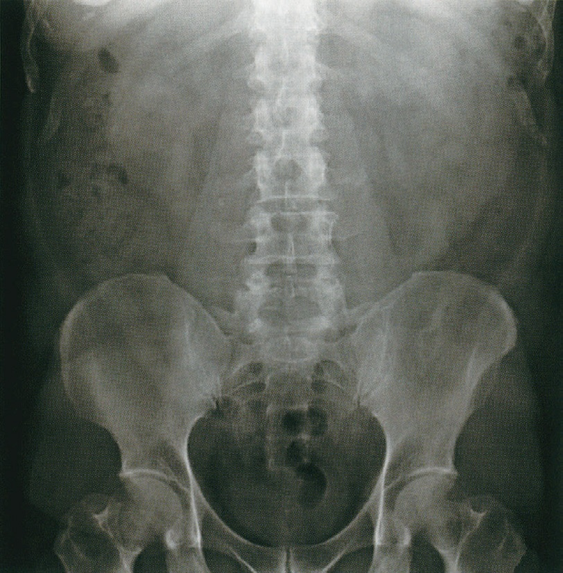
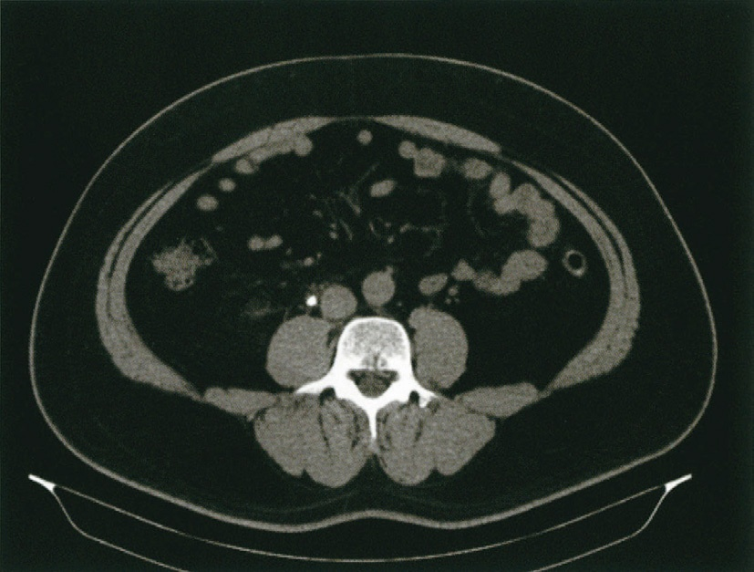
| 選択肢 | 解説 |
|---|---|
| ◯ ａ 飲 水 | ◯ すべての結石に共通する最も重要かつ効果の確かな予防法である。1日尿量2,000mL以上を目標に、食事以外で2,000mL程度の水分を摂る。尿量が増えれば結石成分の過飽和度が下がり、核ができる前に洗い流される。無作為化試験で飲水指導だけで再発率が約半減することが示されている。 |
| ◯ ｂ カルシウムの摂取 | ◯ 直感に反するが、カルシウムは「通常量を食事から摂る」のが正しい。腸管内でカルシウムはシュウ酸と結合して不溶性のシュウ酸カルシウムとなり、そのまま便として排泄される——つまりシュウ酸の吸収を邪魔してくれる。カルシウムを制限すると遊離シュウ酸の腸管吸収が増え、尿中シュウ酸が上昇して、かえってシュウ酸カルシウム結石ができやすくなる。推奨は1日600〜800mgを食事からで、サプリメントでの大量摂取（とくに食間の内服）は逆にリスクを上げるので区別する。 |
| ｃ ビタミンC の摂取 | アスコルビン酸（ビタミンC）は体内でシュウ酸に代謝されるため、大量摂取（1日1g以上）はシュウ酸カルシウム結石の危険因子になる。尿を酸性化する作用もあり、尿酸結石にも不利である。「ビタミンだから体によい」という一般的な印象で選ばせる罠の肢である。 |
| ｄ 抗アンドロゲン薬服薬 | 前立腺癌の内分泌療法に用いる薬であり、尿路結石の予防とはまったく無関係である。（男性ホルモンがシュウ酸産生に関与するという基礎的な知見はあるが、臨床で結石予防に抗アンドロゲン薬を使うことはない。） |
| ｅ 動物性タンパク質の摂取 | 動物性タンパク質はむしろ制限すべきものである。①含硫アミノ酸が代謝されて酸を産生し、骨からのカルシウム動員と尿中カルシウム排泄を増やす。②尿中クエン酸（抑制因子）を減らす。③プリン体から尿酸が増える。④尿中シュウ酸も増える——4方向すべてが結石を作る方向に働く。 |
| よくある誤解 | 正しくは |
|---|---|
| 「カルシウムを控える」 | 通常量（600〜800mg/日）を食事から摂る。制限は逆効果 |
| 「ビタミンCで健康に」 | 大量摂取はシュウ酸に代謝され結石の原因 |
| 「ビールは尿量が増えるからよい」 | 利尿で脱水になり、プリン体で尿酸も上がる |
| 「野菜・果物はシュウ酸が多いから控える」 | クエン酸・カリウム・食物繊維が豊富で推奨。控えるのはほうれん草など特にシュウ酸の多いものだけ |
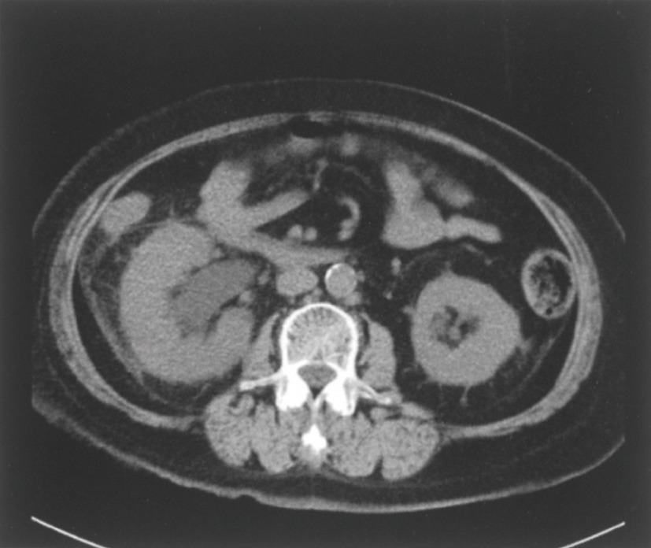
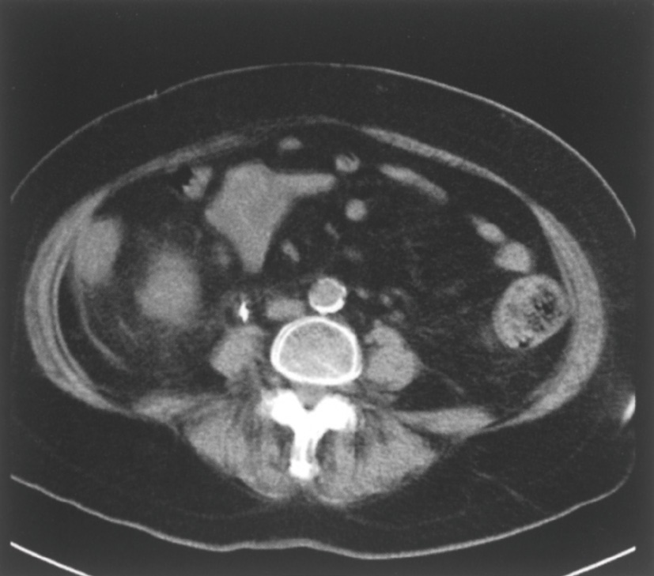
| 選択肢 | 解説 |
|---|---|
| ａ 尿道切開術 | 尿道狭窄に対する内視鏡的処置である（NO.91）。本例の閉塞は尿管（上部尿路）にあり、尿道ではない。右背部叩打痛＝右腎の伸展が閉塞の高さを示している。 |
| ｂ 膀胱瘻造設 | 尿道から膀胱に到達できない下部尿路閉塞に対する処置である。膀胱より下の閉塞を解除しても、尿管が詰まっている腎盂の圧は下がらない。閉塞の高さを取り違えると、処置をしても病態は改善しない——第1章の「膀胱に尿があるかで閉塞の高さを決める」筋がここでも効く。 |
| ｃ 経尿道的尿管砕石術 | 感染が制御されていない状態で結石そのものに手を出してはいけない。尿管鏡を進めて砕石すれば、灌流圧で閉塞部の内圧が上がり、細菌と内毒素が腎盂静脈系へ逆流して敗血症性ショックが一気に悪化する。既にショック（血圧92/52・カテコラミン使用中）である本例では致命的である。砕石は感染が鎮まってから、通常は数週後に行う（NO.75・118）。 |
| ◯ ｄ 尿管ステント留置術 | ◯ 結石性閉塞性腎盂腎炎＋敗血症性ショックに対する救命処置である。抗菌薬は既に開始されているが、閉塞したままでは感染巣（閉鎖腔となった腎盂）に薬が届かず、菌と内毒素が体内へ流れ込み続ける。まず「閉じている管を開ける」——経尿道的に膀胱鏡下でガイドワイヤーを尿管に通し、ステントを留置して腎盂を減圧する。局所麻酔下に短時間で行え、不安定な循環動態でも実施しやすい。（尿管口に到達できない場合や、より確実な減圧を要する場合は経皮的腎瘻を選ぶ＝NO.92。） |
| ｅ 体外衝撃波結石破砕術 | 感染を伴う閉塞では禁忌である。衝撃波で結石を砕けば、細菌を含んだ破片が飛散し、腎実質の損傷と菌血症の悪化を招く。そもそもESWLは待機的な治療で、ショック状態の患者に「直ちに行う処置」ではない。 |
| 処置 | 理由 | |
|---|---|---|
| 直ちに行う | 輸液・昇圧薬 | 循環の維持 |
| 培養採取後、1時間以内に広域抗菌薬 | 遅れるほど死亡率が上がる | |
| ドレナージ（尿管ステントor腎瘻） | 閉鎖腔を開けなければ抗菌薬が届かない | |
| してはいけない | 経尿道的尿管砕石術（TUL） | 灌流圧で内毒素が逆流し敗血症が悪化 |
| 体外衝撃波結石破砕術（ESWL） | 感染破片の飛散・腎損傷 | |
| 結石摘出術・腎摘除術 | ショック患者に高侵襲手術は致命的 |
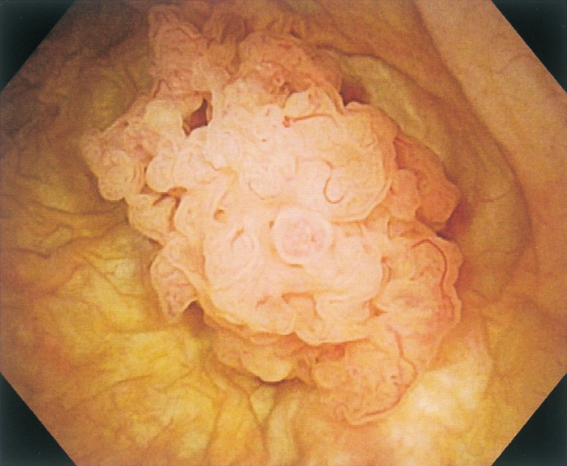
| 痛みあり | 痛みなし | |
|---|---|---|
| 代表 | 尿路結石・膀胱炎・腎盂腎炎 | 膀胱癌・腎盂尿管癌・腎細胞癌 |
| 意味 | 炎症や閉塞という「動きのある」病態 | 静かに増大する腫瘍——症状が乏しいぶん受診が遅れやすい |
| 選択肢 | 解説 |
|---|---|
| ａ 分子標的薬 | 腎細胞癌の主要な薬物療法であり（第2章）、尿路上皮癌では進行・転移例に限って用いる。深達度も決まっていない初発の膀胱腫瘍に全身薬物療法を選ぶ場面ではない。 |
| ｂ 放射線照射 | 尿路上皮癌に放射線は感受性があるが、適応は筋層浸潤性膀胱癌の膀胱温存療法（化学放射線療法）や手術不能例である。表在性の病変に外照射を当てても放射線性膀胱炎という不利益が残るだけである。 |
| ｃ 膀胱全摘術 | 筋層浸潤性膀胱癌（T2以上）またはBCG不応の高リスク例の術式である。現時点では筋層浸潤の有無が分かっていない——それを決めるのがTURBTの病理である。尿路変向を伴う不可逆的な大手術を、診断の前に選ぶことはできない。 |
| ｄ 膀胱部分切除術 | 適応は極めて限られる——膀胱頂部の尿膜管癌（NO.77）や、憩室内の単発腫瘍など「経尿道的に切除できない特殊な部位」に限る。尿路上皮癌は多中心性に発生するため、膀胱の一部だけを切っても残した粘膜から再発する。本例のような通常の膀胱腫瘍には選ばない。 |
| ◯ ｅ 経尿道的膀胱腫瘍切除術 | ◯ 膀胱腫瘍に対する最初の一手である。経尿道的に腫瘍を切除し、基部の筋層まで採取して深達度（筋層浸潤の有無）と異型度を決める。治療と診断を同時に果たし、その後の方針（膀胱温存か全摘か、膀注を追加するか）はすべてこの病理で決まる。本例は60歳・40 pack-year の喫煙歴・無痛性肉眼的血尿と膀胱癌の典型的な背景を備えており、膀胱鏡で腫瘍が確認されている以上、迷わずTURBTへ進む。 |
| 肉眼型 | 見え方 | 推定される性格 |
|---|---|---|
| 乳頭状・有茎性 | 細い茎で付着し、房状・イソギンチャク状に内腔へ突出。可動性がある | 低異型度・筋層非浸潤性のことが多い（NO.122） |
| 広基性・非乳頭状 | 基部が広く、丘状・結節状に盛り上がる | 高異型度・筋層浸潤性が多い（NO.92） |
| 平坦・発赤（ビロード状） | 腫瘤を作らず、粘膜が赤くただれて見えるだけ | 上皮内癌（CIS）。高異型度（NO.114） |
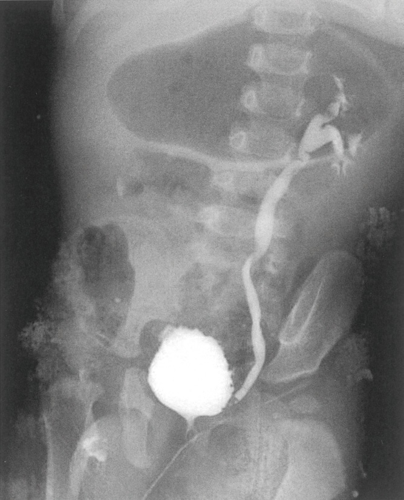
| 選択肢 | 解説 |
|---|---|
| ａ 腎盂形成術 | 腎盂尿管移行部（UPJ）狭窄に対する術式である（NO.79）。閉塞を治す手術であって、逆流を止める手術ではない。UPJ狭窄では腎盂だけが拡張し尿管は細いのに対し、VURでは排尿時に膀胱から尿管・腎盂へ造影剤が逆流する——画像所見がまったく異なる。 |
| ｂ 尿管カテーテル留置術 | 閉塞を解除するための処置である。VURは閉塞ではないので、カテーテルを置いても逆流は止まらない。むしろ尿管内の異物は感染と刺激の原因になる。 |
| ｃ 尿道切開術 | 尿道狭窄に対する内視鏡的処置である（NO.91）。（男児の下部尿路閉塞といえば後部尿道弁の切開だが、それはVCUGで後部尿道の拡張と膀胱壁の肥厚を認める場合で、本例の造影像は逆流を示している。） |
| ｄ 膀胱拡大術 | 腸管を用いて膀胱の容量を作り足す手術で、低コンプライアンス膀胱を伴う重症の神経因性膀胱や、難治性の萎縮膀胱に行う。本例の膀胱の容量・コンプライアンスに問題はない。 |
| ◯ ｅ 膀胱尿管逆流防止術 | ◯ 膀胱尿管新吻合術（逆流防止術）である。尿管を膀胱壁から一度外し、粘膜下を十分な長さ走らせてから開口させ直すことで、膀胱内圧がかかったときにトンネルが押し潰されて閉じる一方向弁を作り直す（Cohen法・Politano-Leadbetter法）。手術適応は「高グレード（Ⅳ〜Ⅴ度）」「抗菌薬予防投与中の突破感染」「腎瘢痕の進行」「年長で自然消失が望めない」で、本例は1歳5か月から2歳まで有熱性尿路感染を繰り返しており、保存的治療では腎を守りきれないと判断される。 |
| 保存的治療を続ける | 手術に踏み切る |
|---|---|
| グレードⅠ〜Ⅲ度 | グレードⅣ〜Ⅴ度 |
| 年少（自然消失が期待できる） | 年長になっても消失しない |
| 予防投与で感染が起きない | 予防投与中に有熱性尿路感染を繰り返す（突破感染） |
| 腎瘢痕がない・増えない | DMSAで腎瘢痕が新たに出現・拡大する |
| — | 服薬アドヒアランスが保てない |
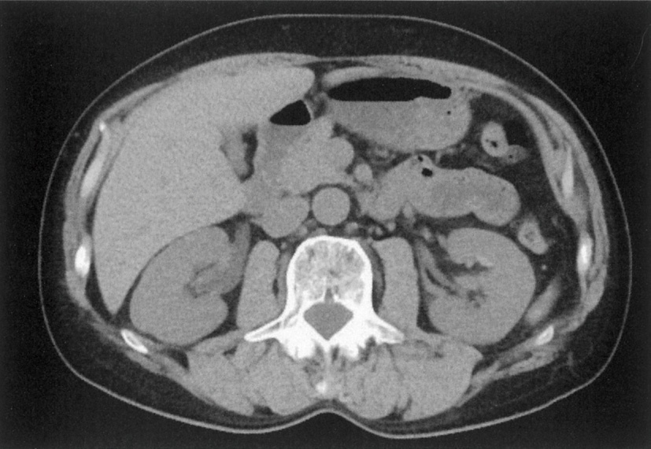
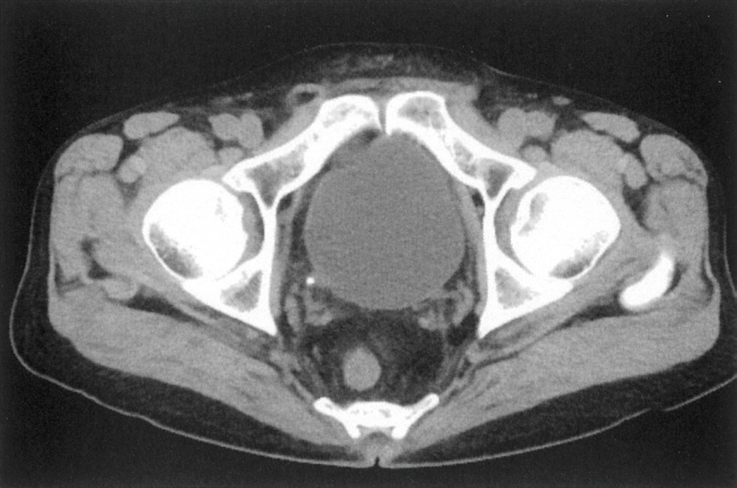
| 結石径 | 自然排石率 | 方針 |
|---|---|---|
| 4mm以下 | 約80％ | 保存的治療（鎮痛・飲水・経過観察） |
| 5mm | 約70％ | |
| 6〜9mm | 約50〜20％ | 保存的に試みつつ、排石しなければ積極的治療 |
| 10mm以上 | 10％未満 | ESWLまたはTUL |
| 選択肢 | 解説 |
|---|---|
| ◯ ａ 水分摂取を勧める。 | ◯ すべての尿路結石に共通する、最も基本的で効果の確かな指導である。1日尿量2,000mL以上を目標に水分を摂ることで、①尿中の結石成分の過飽和度が下がって新たな結晶ができにくくなり、②尿流が増えて現在の結石の排出も促される。飲水指導だけで再発率が約半減することが示されている。 |
| ｂ 手術治療が必要である。 | 尿管結石の大半は自然排石する——5mm以下なら約70％、10mm未満でも約50％が自然に出る。まずは鎮痛薬（NSAIDs）と飲水で経過をみる（保存的治療）のが標準で、本例もNSAIDsで疼痛が軽減しており、発熱もない。積極的治療（ESWL・TUL）が必要になるのは、10mm以上・1か月経っても排石しない・疼痛が制御できない・腎機能障害・感染合併・単腎のときである。 |
| ｃ ビタミンC の摂取を勧める。 | アスコルビン酸は体内でシュウ酸に代謝されるため、大量摂取はシュウ酸カルシウム結石の危険因子になる（NO.104・112）。本例は正八面体結晶＝まさにシュウ酸カルシウムなので、最も勧めてはいけない指導である。 |
| ｄ 尿酸排泄促進薬が有効である。 | 尿酸結石に対してさえ禁忌に近い薬である（尿中尿酸を増やすため。NO.87）。本例はシュウ酸カルシウム結石で、尿酸6.9mg/dLと高尿酸血症もないので適応がまったくない。 |
| ｅ カルシウムの摂取制限を勧める。 | カルシウム制限は逆効果であり、現在は明確に否定されている（NO.73・104）。腸管内のカルシウムはシュウ酸と結合して便へ排泄させる「網」の役割を果たしており、制限すると遊離シュウ酸の吸収が増えて尿中シュウ酸が上昇し、かえってシュウ酸カルシウム結石ができやすくなる。推奨は1日600〜800mgを食事から摂ることである。 |
| 結晶 | 形 | これを見たら |
|---|---|---|
| シュウ酸カルシウム二水和物 | 正八面体（封筒の中に×が入った形） | 最も一般的。飲水＋Ca適量＋低塩・低動物性蛋白 |
| シュウ酸カルシウム一水和物 | 亜鈴状・楕円形 | 大量ならエチレングリコール中毒を疑う |
| 尿酸 | 菱形・板状（黄褐色） | アルカリ化＋アロプリノール |
| シスチン | 六角形 | シスチン尿症（常染色体潜性） |
| リン酸Mgアンモニウム | 棺の蓋状 | ウレアーゼ産生菌の感染。完全摘石が必要 |
| 選択肢 | 解説 |
|---|---|
| ａ 骨シンチグラフィ | 前立腺癌の骨転移を検索する検査だが、PSAが0.01ng/mLと測定感度以下＝前立腺癌は完全に制御されている。再発を示唆する所見がないところに転移検索を行う意味はなく、骨転移は血尿の原因にもならない。 |
| ｂ 腎シンチグラフィ | 分腎機能や閉塞を評価する機能検査で、出血源の同定には使えない。 |
| ◯ ｃ 腹部超音波検査 | ◯ 血尿の精査でまず行うべき画像検査である。非侵襲・無被曝で、腎腫瘍・水腎症・膀胱内の腫瘤・結石を一度にスクリーニングできる。78歳という年齢を考えても、最初に負担の少ない検査から入るのが妥当である。 |
| ◯ ｄ 膀胱鏡検査 | ◯ 肉眼的血尿では膀胱鏡が必須である。本例には放射線性膀胱炎と二次性膀胱癌という2つの重要な鑑別があり、どちらも膀胱鏡で直接見るのが最短の道である。骨盤への放射線照射は、10年前後の潜伏期を経て二次性の膀胱癌を起こす確立した危険因子で、本例は照射から18年が経過している。また放射線性膀胱炎では粘膜の毛細血管拡張（telangiectasia）から断続的な出血を来す——これも膀胱鏡で「粘膜に拡張した血管が透けて見える」像として確認できる。 |
| ｅ FDG-PET | 悪性腫瘍の全身検索・病期診断の検査であり、「まず行うべき検査」ではない。さらにFDGは尿中に排泄されるので腎・尿管・膀胱に強く集積し、尿路の病変はもともと評価が難しい。 |
| 原因 | 機序 | 特徴・対策 |
|---|---|---|
| 放射線 | 慢性虚血→粘膜萎縮・毛細血管拡張 | 照射から数か月〜十数年後。二次性膀胱癌の合併に注意 |
| シクロホスファミド・イホスファミド | 代謝産物アクロレインが尿中に排泄され粘膜を直接傷害 | メスナ（アクロレインを不活化）＋大量輸液・頻回排尿で予防。長期には膀胱癌（NO.115） |
| ウイルス（BKウイルス・アデノウイルス） | 免疫抑制下（造血幹細胞移植後）で再活性化 | 小児・移植後に多い |
| ビルハルツ住血吸虫症 | 虫卵の慢性刺激 | 扁平上皮癌の危険因子 |
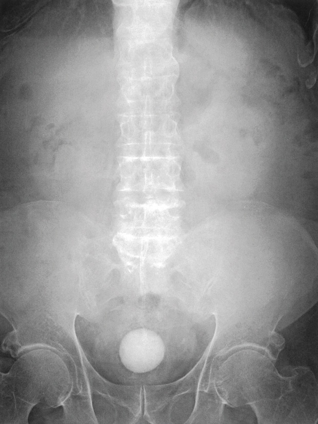
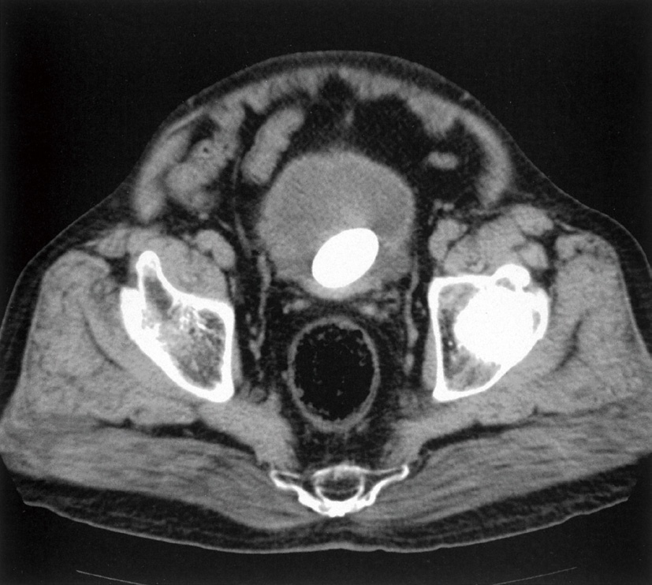
| 選択肢 | 解説 |
|---|---|
| ａ 膀胱全摘術 | 筋層浸潤性膀胱癌に対する術式である。膀胱内にあるのは腫瘍ではなく結石であり、良性疾患に対して尿路変向を伴う不可逆的な大手術を行う理由はない。 |
| ｂ 結石溶解療法 | 溶解できるのは尿酸結石だけである（NO.98）。本例は腹部エックス線写真に石灰化陰影として写っている＝エックス線陽性結石なので尿酸結石ではなく、薬では溶けない。さらに背景の下部尿路閉塞が続く限り、溶かしても結石は再びできる。 |
| ｃ 膀胱瘻造設術 | 尿道から膀胱へ到達できない尿閉に対する処置である。本例は尿閉ではなく、経尿道的に器具を挿入できるので不要である。 |
| ◯ ｄ 経尿道的膀胱砕石術 | ◯ 膀胱結石の標準治療である。経尿道的に膀胱鏡を挿入し、レーザーや砕石鉗子で結石を破砕して洗い出す。本例の膀胱結石は「4年前からの夜間頻尿・排尿遅延」＝前立腺肥大症による慢性の尿の停滞を背景に生じたもので、直腸指診の「小鶏卵大・弾性硬・圧痛なし」もこれを裏づける（正常はクルミ大）。実地では砕石と同時に経尿道的前立腺切除術（TUR-P）を行い、原因である下部尿路閉塞そのものを解除するのが再発防止の本筋である。 |
| ｅ 体外衝撃波結石破砕術〈ESWL〉 | ESWLは腎・尿管結石（上部尿路）の治療であり、膀胱結石には用いない。①膀胱内では結石が動いて衝撃波の焦点が定まらない、②破砕しても下部尿路が閉塞していれば砕片が排出されない、③骨盤骨が衝撃波の経路を妨げる——3つの理由で不適である。 |
| 分類 | 症状 | 本例の記載 |
|---|---|---|
| 排尿症状（出せない） | 尿勢低下・尿線途絶・腹圧排尿・排尿遅延 | 「排尿までに時間がかかる」 |
| 蓄尿症状（溜められない） | 頻尿・夜間頻尿・尿意切迫感 | 「夜間頻尿」 |
| 排尿後症状 | 残尿感・排尿後尿滴下 | — |
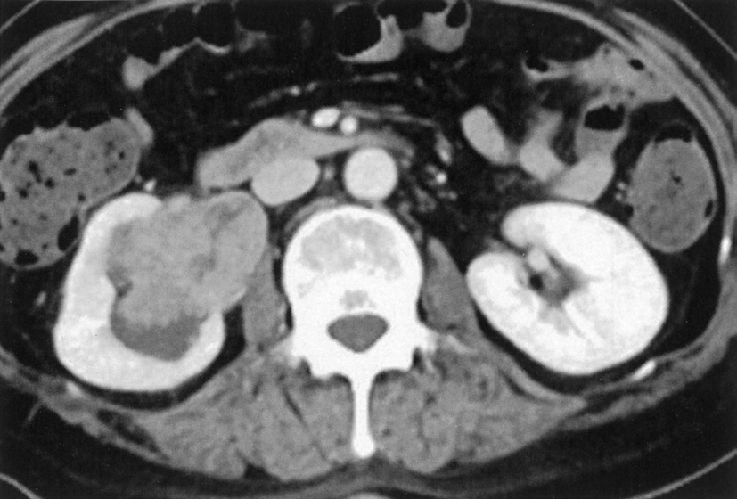
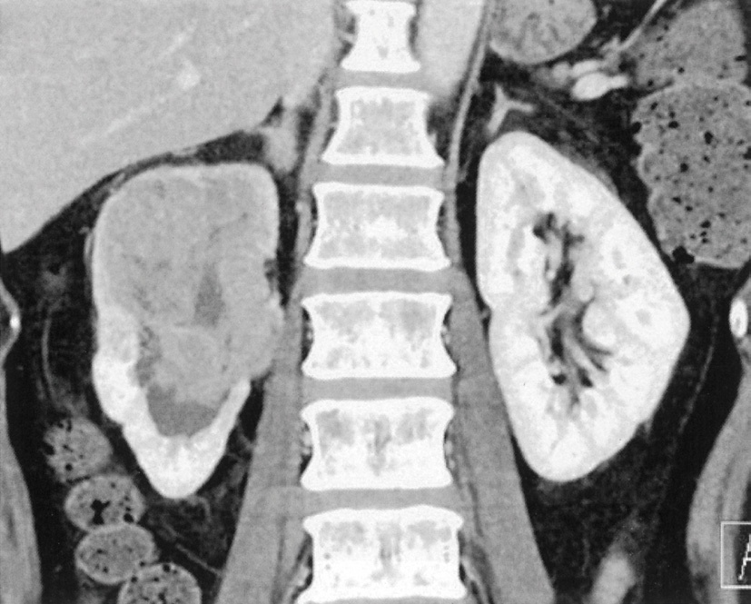
| 選択肢 | 解説 |
|---|---|
| ａ 腎摘出術 | 腎細胞癌に対する術式である（第2章）。腎だけを摘出して尿管を残すと、残った尿管断端が尿路上皮癌の再発の温床になる。尿路上皮癌では「上皮が連続している範囲を一塊に取る」ことが原則で、腎摘出術では不十分である。 |
| ｂ 腎瘻造設術 | 閉塞を解除して腎を減圧するための姑息的処置であり、癌の治療ではない。本例は腎機能正常・転移なしで、根治手術が可能な段階である。 |
| ◯ ｃ 腎尿管全摘術 | ◯ 上部尿路上皮癌（腎盂・尿管癌）に対する標準術式である。患側の腎・尿管全長・そして尿管口周囲の膀胱壁（膀胱カフ）までを一塊に切除する（腎尿管全摘除術＋膀胱部分切除）。尿管を膀胱壁ごと取るのは、尿管断端を残せばそこに40％前後の高率で再発するからである。本例は高異型度尿路上皮癌で転移がなく、対側腎の機能が正常なので、この根治術がそのまま適応になる。術後は下流の膀胱に20〜40％が再発するため、生涯にわたる膀胱鏡フォローが必要である（NO.72・84）。 |
| ｄ 尿管ステント留置 | 閉塞の解除を目的とした姑息的処置である。癌そのものは治らず、むしろステントに沿って癌細胞が下流へ播種する懸念もある。根治可能な症例に選ぶ治療ではない。 |
| ｅ 腎尿管膀胱全摘術 | 膀胱まで全部摘出するのは過剰である。膀胱鏡検査で異常を認めない＝膀胱に病変がないと明記されており、膀胱を摘れば尿路変向が必要になりQOLが大きく損なわれる。切除するのは「尿管口周囲の膀胱壁（膀胱カフ）」までで、膀胱本体は温存する——ここが c との違いである。 |
| 膀胱鏡 | 尿細胞診 | 考えること |
|---|---|---|
| 腫瘍あり | 陽性 | 膀胱癌（TURBTへ） |
| 異常なし | 陽性 | ①上部尿路（腎盂・尿管）の癌 ②膀胱上皮内癌（平坦で見えない） |
| 発赤粘膜あり | 陽性 | 膀胱上皮内癌（生検へ）（NO.114） |
| 腫瘍あり | 陰性 | 低異型度の乳頭状腫瘍（細胞診の感度が低い）（NO.122） |
| 因子 | 減らす／増やす方法 | |
|---|---|---|
| 促進因子 （減らす） | カルシウム（尿中） | 減塩・動物性蛋白の制限・サイアザイド |
| シュウ酸 | シュウ酸の多い食品を控える・ビタミンC大量摂取をやめる・カルシウムを食事から一緒に摂る | |
| 尿酸 | プリン体制限・アロプリノール | |
| 尿の濃縮 | 飲水（最重要） | |
| 抑制因子 （増やす） | クエン酸 | 柑橘類・野菜・クエン酸カリウム製剤 |
| マグネシウム | 海藻・豆類・種実類 | |
| 尿量 | 飲水（1日尿量2,000mL以上） |
| 選択肢 | 解説 |
|---|---|
| ａ プリン体の摂取 | プリン体は代謝されて尿酸になるので、尿酸結石の危険因子である。高尿酸尿はシュウ酸カルシウム結石の核にもなるため二重に不利で、制限すべきものである（内臓・魚卵・干物・ビール）。 |
| ｂ ビタミンC の摂取 | アスコルビン酸は体内でシュウ酸に代謝されるため、大量摂取（1日1g以上）はシュウ酸カルシウム結石の危険因子になる。尿を酸性化する作用もあり、尿酸結石にも不利である。「ビタミンだから体によい」という印象で選ばせる典型的な罠の肢である。 |
| ◯ ｃ クエン酸製剤の内服 | ◯ クエン酸は結石予防の中心的な薬剤である。①尿中でカルシウムとキレートを形成し、シュウ酸カルシウム・リン酸カルシウムの結晶化を直接抑制する。②代謝されて重炭酸となり尿をアルカリ化するので、尿酸結石・シスチン結石の溶解度を高める。低クエン酸尿は結石患者の20〜60％にみられる代表的な代謝異常で、クエン酸カリウム製剤で補正する（ナトリウム塩ではなくカリウム塩を使うのは、Na負荷が尿中カルシウムを増やすため）。 |
| ｄ カルシウムの摂取制限 | 明確に否定されている指導である。腸管内のカルシウムはシュウ酸と結合して便へ排泄させる役割を果たしており、制限すると遊離シュウ酸の吸収が増えて尿中シュウ酸が上がり、かえってシュウ酸カルシウム結石ができやすくなる。推奨は1日600〜800mgを食事から摂ることである（NO.73・104）。 |
| ◯ ｅ 1 日2L 以上の水分摂取 | ◯ すべての結石に共通する最も基本的な予防法である。1日尿量2,000mL以上を目標とし、そのためには食事以外に2,000〜2,500mL程度の水分摂取が必要になる。尿量が増えれば結石成分の過飽和度が下がり、結晶が核をつくる前に洗い流される。無作為化試験で飲水指導のみで再発率が約半減することが示されている、最も費用対効果の高い介入である。 |
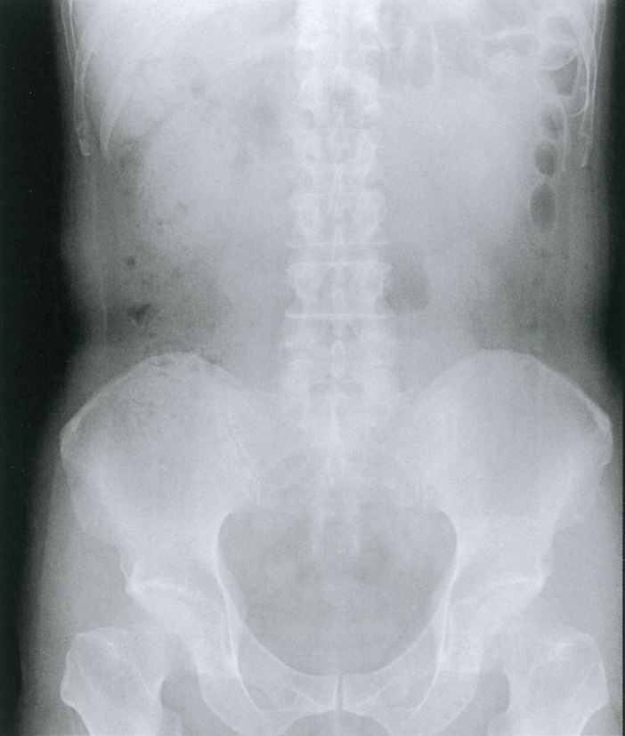
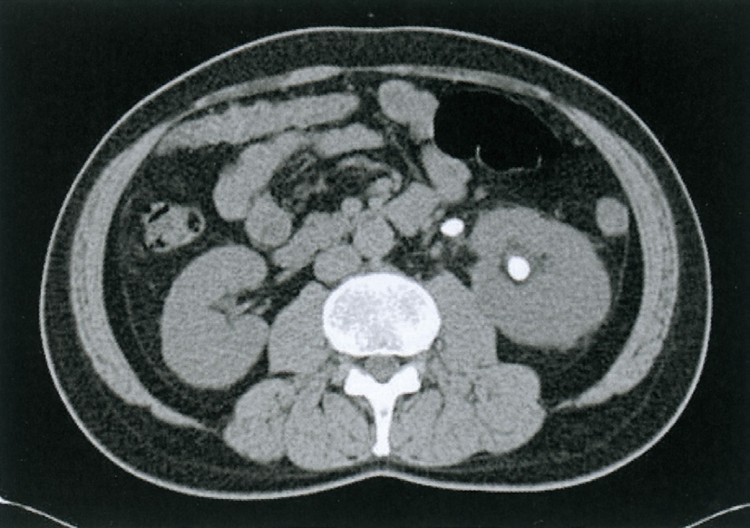
| 選択肢 | 解説 |
|---|---|
| ◯ ａ 尿 酸 | ◯ 超音波とCTでは結石が明瞭に確認できるのに、単純エックス線写真では写らない＝エックス線陰性結石である。エックス線陰性となるのは尿酸・シスチン・キサンチンで、このうち尿酸結石が圧倒的に多い。尿酸8.6mg/dLの高尿酸血症という背景も合致する。尿酸結石は炭素・窒素・水素・酸素だけでできており、カルシウムのような原子番号の大きい元素を含まないので軟部組織との吸収差が出ない。一方CTは吸収値をHUとして定量するため、400〜500HU程度の明瞭な高吸収域として写る。 |
| ｂ 炭酸カルシウム | カルシウムを含む結石はすべてエックス線陽性である。設問の条件と矛盾する。（そもそも尿路結石として炭酸カルシウム単独のものはほとんど存在しない。） |
| ｃ リン酸カルシウム | エックス線陽性である。アルカリ尿でできやすく、遠位尿細管性アシドーシス（Ⅰ型RTA）・原発性副甲状腺機能亢進症が背景にある。高尿酸血症を伴う本例の尿は酸性と推定され、条件が逆である。 |
| ｄ シュウ酸カルシウム | 最多（約80％）の結石だが、カルシウムを含むので明瞭に写る。「Ｘ線で写らない」という条件が与えられた時点で除外される。頻度が最も高いという理由で選んでしまう罠の肢であり、条件を先に読む習慣が答えを分ける。 |
| ｅ リン酸マグネシウムアンモニウム | 感染結石でエックス線陽性である。ウレアーゼ産生菌（Proteus等）が尿素を分解して尿をアルカリ化することで生じ、腎盂の形に沿ったサンゴ状結石を作る。白血球1〜4/1視野で膿尿がなく、CRPも1.2mg/dLと軽度——感染の所見がないので合わない。 |
| 手掛かり | 示す成分 |
|---|---|
| 単純Ｘ線で写らない | 尿酸・シスチン・キサンチン |
| 高尿酸血症・痛風・尿酸排泄促進薬 | 尿酸 |
| 酸性尿（pH＜5.5） | 尿酸・シスチン |
| アルカリ尿＋膿尿＋サンゴ状 | リン酸Mgアンモニウム（感染結石） |
| 正八面体の結晶 | シュウ酸カルシウム |
| 六角形の結晶・小児期から反復・家族歴 | シスチン |
| 高カルシウム血症・PTH高値 | カルシウム結石（原発性副甲状腺機能亢進症） |
| 赤レンガ色・黄褐色の排石 | 尿酸 |
| Crohn病・短腸症候群・胃バイパス術後 | シュウ酸カルシウム（腸性高シュウ酸尿症） |
| 選択肢 | 解説 |
|---|---|
| ａ 放射線治療 | 尿路上皮癌に放射線は感受性があるが、適応は筋層浸潤性膀胱癌の膀胱温存療法や手術不能例である。上皮内癌のように粘膜内にとどまる病変に外照射を当てても、放射線性膀胱炎による頻尿・血尿という不利益が残るだけである。 |
| ｂ 前立腺全摘術 | PSA 4.6ng/mL はわずかな上昇にすぎず、前立腺癌の診断は確定していない。直腸指診も「弾性硬」で前立腺肥大症の所見であり、癌を疑う石様硬・硬結の記載はない。そもそも今回の主病変は膀胱粘膜の上皮内癌であり、治療対象が違う。 |
| ｃ 膀胱部分切除術 | 上皮内癌は「発赤した膀胱粘膜を複数」と多発・広範に存在する。一部を切除しても残した粘膜に病変が残るので根治にならない。膀胱部分切除の適応は尿膜管癌など経尿道的に切除できない限局した特殊な病変に限られる（NO.77）。 |
| ｄ 抗コリン薬の内服 | 過活動膀胱の治療薬である（NO.93・132）。本例の頻尿は上皮内癌による膀胱刺激症状であって、薬で症状を抑えても癌は進行する。尿細胞診クラスⅤという決定的な所見を無視することになる——最も危険な選択肢である。 |
| ◯ ｅ BCG の膀胱内注入 | ◯ 膀胱上皮内癌（CIS）に対する標準治療である。生検で「上皮細胞に異型を認めるが間質への浸潤は認めない」＝上皮内にとどまる高異型度病変＝上皮内癌と確定している。上皮内癌は平坦かつ多発性で、TURBTでは削り残しが避けられない——だから膀胱全体に薬液を行き渡らせる膀胱内注入療法が理にかなう。BCGは膀胱粘膜にTh1型の細胞性免疫を誘導して癌細胞を排除し、完全奏効率は70〜80％と殺細胞性薬の膀注より明確に優れる。週1回・6〜8回の導入後、維持療法を続ける。 |
| 所見 | 膀胱炎なら | 本例 |
|---|---|---|
| 膿尿 | 白血球多数 | 白血球0〜5/1視野（＝膿尿なし） |
| 細菌尿 | 陽性 | 記載なし |
| 経過 | 抗菌薬で数日で軽快 | 2か月持続 |
| 尿細胞診 | 陰性 | クラスⅤ |
| 血尿 | あってもよい | 潜血1＋・赤血球10〜20 |
| 選択肢 | 解説 |
|---|---|
| ａ 尿培養 | 尿路感染を疑う所見がない——白血球を認めず（膿尿なし）、頻尿・排尿時痛・残尿感もない。感染症の検索より、まず腫瘍の除外が優先される。 |
| ◯ ｂ 尿細胞診 | ◯ シクロホスファミドは膀胱癌の確立した危険因子であり、尿路上皮癌のスクリーニングとして非侵襲的に行える。シクロホスファミドの代謝産物アクロレインが尿中に排泄されて膀胱粘膜を直接傷害し、出血性膀胱炎を起こすとともに、数年〜十数年の潜伏期を経て膀胱癌（とくに高異型度）を誘発する。本例は総投与から9年が経過しており、まさにリスクが顕在化する時期にあたる。 |
| ｃ 血清IgA 測定 | IgA腎症を疑うときの参考検査だが、血清IgA上昇はIgA腎症の約半数にしかみられず、診断は腎生検でしか確定しない。本例は赤血球円柱がなく、蛋白尿も（±）と軽微で、糸球体性血尿を示唆する所見に乏しい。 |
| ◯ ｄ 膀胱内視鏡検査 | ◯ 膀胱粘膜を直接観察できる唯一の検査である。シクロホスファミド関連の膀胱病変（慢性膀胱炎・粘膜の萎縮・毛細血管拡張・腫瘍）を目で確かめられる。シクロホスファミド誘発性の膀胱癌は上皮内癌や高異型度癌の形をとることがあり、平坦な病変は画像では捉えられない——膀胱鏡を省略すると見逃す。尿細胞診とセットで行うことで、「細胞は出ているか」「粘膜はどう見えるか」を両面から押さえられる。 |
| ｅ 尿中β2- マイクログロブリン測定 | 近位尿細管の再吸収障害を示す低分子蛋白で、尿細管間質性腎炎・カドミウム中毒・Fanconi症候群などの評価に用いる。血尿の原因検索には使えない。 |
| 糸球体性 | 非糸球体性 | |
|---|---|---|
| 赤血球 | 変形赤血球 | 均一な赤血球 |
| 円柱 | 赤血球円柱あり | なし（本例） |
| 蛋白尿 | 高度（0.5g/日以上） | 軽微（本例は±） |
| 代表 | IgA腎症・ANCA関連血管炎・溶連菌感染後糸球体腎炎・Alport症候群 | 尿路上皮癌・結石・腎細胞癌・感染 |
| 進む先 | 腎生検 | 尿細胞診・膀胱鏡・画像 |
| 選択肢 | 解説 |
|---|---|
| ◯ ａ 血 尿 | ◯ ESWL後にほぼ全例で生じる、最も頻度の高い合併症である。衝撃波の焦点は結石に合わせるが、そこに至るまでの腎実質にもエネルギーが加わり、毛細血管や尿路上皮が損傷を受ける。通常は数日で自然に軽快するが、まれに腎被膜下血腫・腎周囲血腫を来すため、抗凝固薬・抗血小板薬は術前に休薬し、出血傾向のある患者・コントロール不良の高血圧では慎重に行う。 |
| ｂ 骨 折 | 衝撃波は水中で発生させ、体表から腎の結石へ集束させる。音響インピーダンスの差が大きい界面（結石表面）でエネルギーが解放されるため、軟部組織を通過する経路では大きな損傷を起こさない。骨を破砕するようなエネルギーではない。 |
| ｃ 腸管損傷 | きわめて稀である。衝撃波は含気臓器（腸管・肺）との界面でエネルギーを解放するため理論上は損傷しうるが、透視・超音波で焦点を腎の結石に合わせ、含気臓器を経路から外して照射するので実際には起こりにくい。「直後に起こり得る合併症」として2つ選ぶならa・d が明らかに優先される。 |
| ◯ ｄ 皮下出血 | ◯ 衝撃波が体表から入る部位（背部・側腹部）に生じる、ありふれた合併症である。皮膚・皮下組織の毛細血管が衝撃波で損傷し、照射部位に一致して点状出血や斑状の皮下出血が現れる。疼痛を伴うこともあるが、通常は無処置で1〜2週間のうちに消退する。 |
| ｅ 腎機能低下 | 「直後」の合併症としては通常みられない。片腎に照射しても対側腎が代償するので、血清クレアチニンが上がることはまずない。長期的には、反復照射による腎実質の線維化や高血圧のリスクが議論されているが、それは年単位の話であって「直後」ではない。 |
| ESWL | TUL（経尿道的尿管砕石術） | PNL（経皮的腎砕石術） | |
|---|---|---|---|
| 経路 | 体外から衝撃波 | 尿道→膀胱→尿管（内視鏡） | 背中から腎を穿刺 |
| 適応 | 腎結石20mm未満・上部尿管結石 | 中下部尿管結石・ESWL無効例 | 腎結石20mm以上・サンゴ状結石 |
| 侵襲 | 最も低い（麻酔不要のことも） | 中等度 | 最も高い |
| 合併症 | 血尿・皮下出血・石街 | 尿管損傷・穿孔・狭窄 | 出血・気胸・臓器損傷 |
| 破砕効率 | 低い（複数回要することも） | 高い | 最も高い（一度で取り切れる） |
| 選択肢 | 解説 |
|---|---|
| ａ 「尿酸が主成分なので薬を処方しましょう」 | 腹部エックス線写真に石灰化として写っている＝エックス線陽性結石である。尿酸結石はエックス線陰性なので、この時点で否定される。Ｘ線に写る＝カルシウムを含む結石（多くはシュウ酸カルシウム）で、溶解療法（尿アルカリ化）は無効である。 |
| ◯ ｂ 「水分を十分摂取して尿量を増やしてください」 | ◯ 尿路結石の管理で最も重要かつ普遍的な指導である。1日尿量2,000mL以上を目標にすることで、①現在の結石の自然排石が促され、②新たな結石の形成も抑えられる。3×2mmという小さな結石は約80％が自然排石するので、飲水と鎮痛で待つのが正しい方針である。 |
| ｃ 「また痛みが出てくるようなら手術をしましょう」 | 疼痛の再燃だけを理由に手術を選ぶことはない。疝痛は結石が尿管を下降する過程で当然に繰り返し起こるもので、その都度NSAIDsで対応しながら排石を待つのが標準である。積極的治療（ESWL・TUL）へ移る条件は、10mm以上・1か月経っても排石しない・疼痛が制御できない・発熱（感染）・腎機能障害・単腎・両側閉塞であって、「痛みが再燃した」だけでは満たさない。 |
| ◯ ｄ 「痛みがなくても排石されるまで自動車の運転は危険です」 | ◯ 疝痛発作は「予兆なく突然、しかも意識を奪うほど激烈に」起こる。本例も就寝中に突然の痛みで目が覚めており、運転中に同じことが起これば重大事故につながる。加えて、鎮痛のためのNSAIDsやオピオイドが眠気・めまいを起こすこともある。「今は痛くない」ことは安全の保証にならない——結石が排出されるまでは運転を控えるよう指導するのが適切である。生活指導として実際に行われている内容で、高所作業・重機の操作についても同様に助言する。 |
| ｅ 「左の尿管が閉塞しているのでその尿管に細いチューブを留置します」 | 尿管ステントの適応を満たさない。留置するのは①発熱（閉塞性腎盂腎炎）②腎機能障害③両側閉塞または単腎の閉塞 ④疼痛が制御できない場合である。本例は発熱なし・腎盂の拡張は軽度・NSAIDsで症状軽快——3×2mmの結石は自然排石が強く期待でき、侵襲的処置を加える理由がない。 |
| 条件 | 本例 | |
|---|---|---|
| 待てる | 結石径10mm未満（とくに5mm以下） | 3×2mm ◎ |
| 発熱がない | 36.3℃ ◎ | |
| 鎮痛薬で疼痛が制御できる | NSAIDs坐剤で軽快 ◎ | |
| 腎機能が保たれ、閉塞が軽度 | 腎盂の軽度拡張のみ ◎ | |
| 待てない | 発熱（閉塞性腎盂腎炎） | いずれも該当なし |
| 腎機能障害・単腎・両側閉塞 | ||
| 疼痛が制御できない | ||
| 結石径10mm以上 | ||
| 1か月以上排石しない |
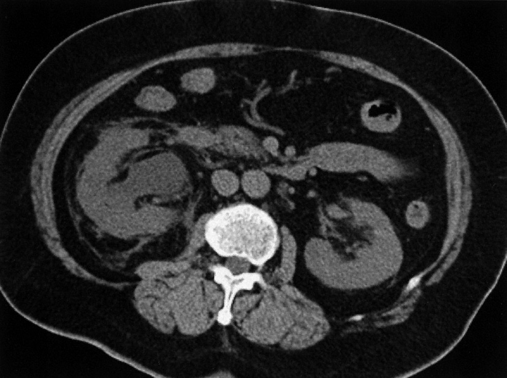
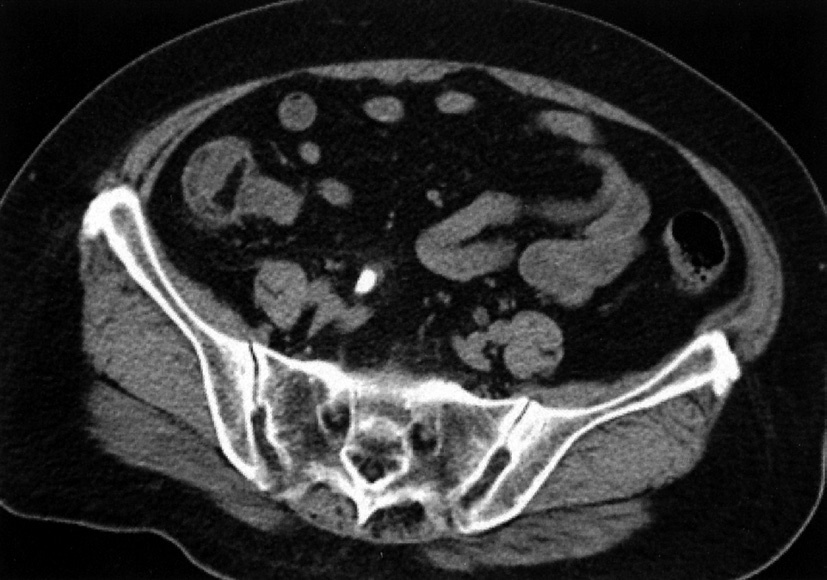
| 選択肢 | 解説 |
|---|---|
| ａ 血液透析 | クレアチニン1.8mg/dLの上昇は、閉塞と敗血症に伴う急性腎障害であり、閉塞を解除すれば改善が見込める。K 4.8mEq/L・アシドーシスなし・溢水なしで緊急透析の適応（AIUEO）を満たさない。 |
| ｂ 腎瘻造設術 | ドレナージという方向性は正しいが、本例では血小板8.0万という血小板減少がある——敗血症に伴う播種性血管内凝固（DIC）を示唆する所見である。経皮的腎瘻は背中から腎を「盲目的に近い形で」穿刺するため出血のリスクが高く、出血傾向のある状況では第一選択になりにくい。尿管口から逆行性にステントを通せるなら、そちらが安全である。（尿管口に到達できない場合は腎瘻を選ぶ＝NO.92。） |
| ◯ ｃ 尿管ステント留置 | ◯ 結石性閉塞性腎盂腎炎に対する救命的ドレナージである。体温39.8℃・脈拍112/分・血圧94/52mmHg・CRP 24mg/dL・白血球17,800で核左方移動・血小板8.0万（DIC疑い）・肝逸脱酵素の上昇——既に敗血症性ショックと多臓器障害が始まっている。抗菌薬は開始済みだが、閉塞したままでは感染巣（閉鎖腔となった腎盂）に薬が届かず、菌と内毒素が流れ込み続ける。膀胱鏡下に尿管口からガイドワイヤーを通してステントを留置し、腎盂を減圧する——局所麻酔下に短時間で行え、出血リスクも腎瘻より低い。 |
| ｄ 経尿道的尿管砕石術 | 感染が制御されていない状態で結石を砕いてはいけない。尿管鏡の灌流圧で閉塞部の内圧が上がり、細菌と内毒素が腎盂静脈系へ逆流して敗血症性ショックが一気に増悪する。砕石は感染が鎮まってから（通常は数週後）行う。 |
| ｅ 体外衝撃波結石破砕術 | 活動性の尿路感染はESWLの禁忌である。衝撃波で結石を砕けば感染を含んだ破片が飛散し、腎実質の損傷と菌血症の悪化を招く。そもそもESWLは待機的な治療であり、ショック状態の患者に「次に行うべき治療」として選ぶものではない。 |
| 順 | すること | 理由 |
|---|---|---|
| ① | バイタルとショックの評価 | qSOFA・乳酸値。ショックなら輸液・昇圧薬 |
| ② | 血液培養2セット＋尿培養を採取 | 抗菌薬の前に必ず採る |
| ③ | 広域抗菌薬を1時間以内に開始 | 遅れるほど死亡率が上がる |
| ④ | 画像（単純CT）で閉塞と結石を確認 | 水腎症の有無と結石の位置 |
| ⑤ | ドレナージ（尿管ステントor腎瘻） | これが治療の本体。閉鎖腔を開ける |
| ⑥ | 数週後に結石の処理（ESWL・TUL） | 感染が鎮まってから |
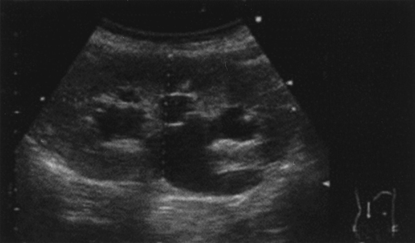
| 選択肢 | 解説 |
|---|---|
| ａ PET/CT | 悪性腫瘍の検索・病期診断の検査である。本例は10年来の緩徐な経過で、腫瘍を疑う所見がない。さらにFDGは尿中排泄されるので尿路の評価には不向きである。 |
| ◯ ｂ 腹部単純MRI | ◯ 造影剤を使わずに、尿管の走行と血管との位置関係を同時に描出できる。MR urography（重T2強調）では尿（水）が高信号に写るので尿路の全体像が得られ、同時に下大静脈などの血管も無被曝・無造影で評価できる。下大静脈後尿管では「右尿管が第3〜4腰椎の高さで内側へ偏位し、下大静脈の背側を回り込んでからS字状（fish-hook状）に戻る」という特徴的な走行が確認できる。若い女性で被曝を避けたい本例に適した検査である。 |
| ◯ ｃ 逆行性尿路造影 | ◯ 尿管の走行と閉塞部位を最も鮮明に描出できる検査である。膀胱鏡下に尿管口からカテーテルを挿入し、造影剤を逆行性に注入して尿管を直接描出する。下大静脈後尿管では「上部尿管が内側へ偏位し、第3〜4腰椎の高さでS字状／魚鉤（fish-hook）状の走行を呈する」という古典的な所見が得られ、これが診断を確定させる。腎機能が悪くても造影でき、静脈性尿路造影のように腎からの排泄に依存しないのも利点である。 |
| ｄ 腎シンチグラフィ | 分腎機能や閉塞の有無を「機能として」評価する検査である。手術適応を決める段階では有用だが、「なぜ閉塞しているのか（原因）」は分からない。設問が問うているのは水腎症の原因を突き止める診断である。 |
| ｅ カラードプラ腹部超音波検査 | 血流を可視化する検査で、腎血管の狭窄やナットクラッカー現象の評価には向く。しかし尿管は血流を持たないので、カラードプラでは尿管そのものの走行を描出できない。「尿管が血管の後ろを通っている」ことを示すには尿管を描出する検査が要る。 |
| 閉塞の高さ | 結石あり | 結石なし |
|---|---|---|
| 腎盂尿管移行部 | 腎盂結石の嵌頓 | UPJ狭窄（小児水腎症の最多）・下極副腎動脈による圧迫（NO.79・82） |
| 尿管（上〜中部） | 尿管結石 | 下大静脈後尿管（右のみ）・後腹膜線維症・尿管腫瘍・外部からの腫瘍圧迫 |
| 尿管膀胱移行部 | 下部尿管結石 | 尿管瘤・巨大尿管症・膀胱腫瘍による尿管口の閉塞（NO.92） |
| 膀胱より下（両側水腎症） | 膀胱結石 | 前立腺肥大症・後部尿道弁・神経因性膀胱・尿道狭窄 |
| 選択肢 | 解説 |
|---|---|
| ◯ ａ 尿検査 | ◯ 感冒様症状を伴わない乳幼児の発熱では、まず尿路感染を疑って尿検査を行う。乳児は「どこが痛い」と訴えられず、尿路感染でも頻尿・排尿時痛といった局所症状を示さない——現れるのは発熱・不機嫌・哺乳不良・嘔吐だけである。本例は咳・鼻汁なし、咽頭・呼吸音・鼓膜・大泉門いずれも正常＝上気道・下気道・中耳・髄膜という「熱源としてありふれた場所」がすべて否定されている。さらに3か月で3回目という反復が、背景に膀胱尿管逆流などの尿路奇形があることを強く示唆する。膿尿・細菌尿を確認したら、カテーテル導尿で尿培養を採り（抗菌薬の前に）、解熱後に腎超音波・必要ならVCUGへ進む（NO.78・86・103・125）。 |
| ｂ 咽頭培養 | 咽頭に発赤・炎症所見がないと明記されており、咽頭炎を疑う根拠がない。また咳・鼻汁がない＝ウイルス性上気道炎らしくない。 |
| ｃ 脳脊髄液検査 | 髄膜炎を疑うなら必須の検査だが、本例は大泉門の膨隆がなく、哺乳力も良好で、意識障害・けいれん・項部硬直の記載もない。侵襲的な検査なので、より非侵襲的で可能性の高い尿検査を先に行う。（ただし生後3か月未満の発熱では髄液検査を含むfull septic workup が推奨される——本例は7か月なので該当しない。） |
| ｄ 頭部超音波検査 | 大泉門から脳内を観察する検査で、水頭症・頭蓋内出血・脳室周囲白質軟化症などの評価に用いる。発熱の熱源検索としては優先度が低い。 |
| ｅ 胸部エックス線撮影 | 肺炎を疑うときの検査だが、咳がなく呼吸音にも異常がない。呼吸数28/分は7か月児として正常範囲であり、肺炎を積極的に疑う所見がない。 |
| 部位 | 診察 | 本例 |
|---|---|---|
| 上気道 | 咽頭発赤・鼻汁・咳 | いずれもなし → 否定 |
| 中耳 | 鼓膜の発赤・膨隆 | 発赤なし → 否定 |
| 下気道 | 呼吸音・呼吸数・陥没呼吸 | 異常なし → 否定 |
| 髄膜・中枢 | 大泉門の膨隆・意識・けいれん・項部硬直 | 膨隆なし・哺乳良好 → 可能性低い |
| 消化管 | 下痢・嘔吐・腹部所見 | 記載なし |
| 尿路 | 診察では分からない（＝検査するしかない） | これが残る → 尿検査へ |
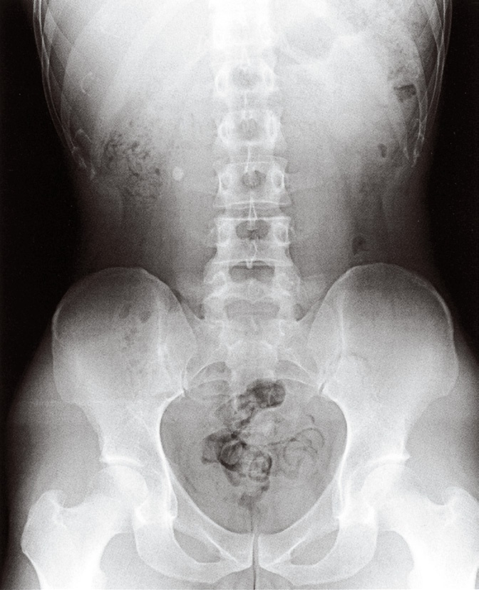
| 選択肢 | 解説 |
|---|---|
| ａ 尿 酸 | 尿酸結石はエックス線陰性で、単純エックス線写真には写らない。炭素・窒素・水素・酸素だけでできており、周囲の軟部組織と吸収差が生じないためである。「単純エックス線写真に写っている」という設問の前提と矛盾する。 |
| ｂ シスチン | シスチンは硫黄を含むためごく淡く写ることがある（faintly opaque）が、頻度が全結石の1％未満と極めて稀である。シスチン結石は常染色体潜性遺伝のシスチン尿症を背景に小児期から反復し、六角形の結晶を伴う——そうした背景の記載がない本例では「最も考えられる」ものにならない。 |
| ｃ キサンチン | エックス線陰性で、しかも極めて稀である。先天性のキサンチンオキシダーゼ欠損症や、アロプリノールの過剰投与で生じうるが、日常診療でまず出会わない。 |
| ◯ ｄ シュウ酸カルシウム | ◯ エックス線陽性の結石のうち最も頻度が高く、全尿路結石の約80％を占める。カルシウム（原子番号20）を含むため周囲より強くエックス線を吸収し、明瞭な高吸収の陰影として描出される。「単純エックス線写真に写っている尿管結石」と言われたら、確率的にも、画像所見からも、まずシュウ酸カルシウム結石である。尿pHに依存せずに形成され、尿沈渣では正八面体（封筒状）の結晶を認める（NO.108）。 |
| ｅ リン酸アンモニウム・マグネシウム | エックス線陽性ではあるが、ウレアーゼ産生菌（Proteus・Klebsiella等）の感染が前提である。尿がアルカリ化して形成され、腎盂・腎杯の形に沿って広がるサンゴ状結石になるのが典型で、尿管に単発で見つかる結石としては合わない。膿尿・細菌尿・アルカリ尿という感染の所見も揃わない。 |
| 成分 | 頻度 | 単純Ｘ線 | 特徴 |
|---|---|---|---|
| シュウ酸カルシウム | 約80％ | 陽性（明瞭） | 最多。褐色・表面が粗い。正八面体結晶 |
| リン酸カルシウム | 約10％ | 陽性 | アルカリ尿。RTA・副甲状腺機能亢進症 |
| 尿酸 | 約5％ | 陰性 | 酸性尿。レンガ色。溶解療法が効く |
| リン酸Mgアンモニウム | 数％ | 陽性 | 感染結石。白いサンゴ状。完全摘石が必要 |
| シスチン | 1％未満 | 淡く陽性 | 常染色体潜性。小児から反復。六角形結晶。硬くESWLが効きにくい |
| キサンチン | 極めて稀 | 陰性 | キサンチンオキシダーゼ欠損・アロプリノール過剰 |
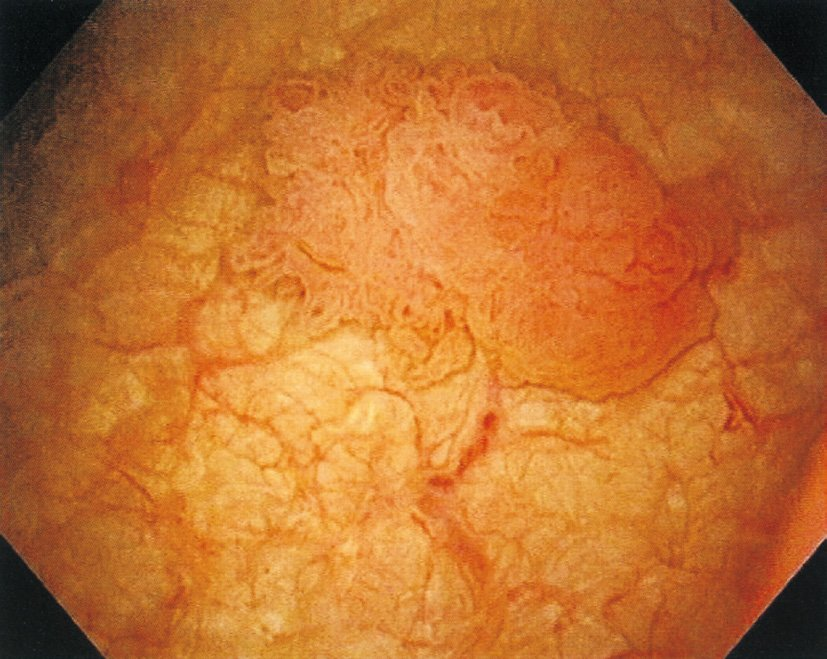
| 病変 | 細胞診の感度 | 理由 |
|---|---|---|
| 上皮内癌（CIS）・高異型度癌 | 高い（80〜90％） | 細胞同士の結合が弱く剝がれやすい。核異型が強く判定しやすい |
| 低異型度乳頭状腫瘍 | 低い（20〜40％） | 細胞が正常に近く、剝がれても異型と判定できない |
| 選択肢 | 解説 |
|---|---|
| ａ 経過観察 | 膀胱内に腫瘤が確認されている以上、経過観察は選べない。尿細胞診が陰性（クラスⅡ）でも癌は否定できない——細胞診は高異型度癌には感度が高いが、低異型度の乳頭状腫瘍には感度が低く、陰性のことがしばしばある。細胞診の陰性を「大丈夫」と読んではいけないのが本問の要点である。 |
| ｂ 膀胱全摘術 | 筋層浸潤性膀胱癌に対する術式である。現時点では深達度が分かっていないうえ、「可動性のある乳頭状・有茎性」という形態は筋層非浸潤性の低異型度腫瘍を示唆する——最も膀胱温存が期待できるタイプである。 |
| ◯ ｃ 経尿道的切除術 | ◯ 経尿道的膀胱腫瘍切除術（TURBT）である。膀胱内の腫瘍に対する最初の一手であり、切除という治療と、筋層を含めた採取による深達度診断を同時に果たす。「可動性のある乳頭状・有茎性の腫瘤」という所見は、茎が細く壁への固定が弱い＝筋層に浸潤していない可能性が高いことを示し、TURBTで根治が期待できる。本例は54歳・34 pack-yearの喫煙歴・無痛性肉眼的血尿と膀胱癌の典型的な背景を備えており、直腸指診も「クルミ大・弾性軟」＝前立腺は正常で、血尿の原因は膀胱の腫瘍で説明がつく。 |
| ｄ BCG の膀胱内注入 | TURBTの「後」に、上皮内癌や高リスク筋層非浸潤性癌に対して行う補助療法である。腫瘍が見えている状態で膀注しても腫瘍は消えず、病理診断の機会も失われる。 |
| ｅ 抗悪性腫瘍薬の膀胱内注入 | TURBT直後の単回膀注（再発予防）や、低〜中リスク例の維持療法として使う。これも「切除の後」の治療であり、順序が逆である。 |
| 形態 | 示唆 | 治療の見通し |
|---|---|---|
| 有茎性・乳頭状・可動性あり | 低異型度・筋層非浸潤性（Ta） | TURBTで根治が期待できる。ただし再発率は高い（50〜70％）ので定期的な膀胱鏡フォローが必要 |
| 広基性・非乳頭状・固定 | 高異型度・筋層浸潤性（T2以上） | 膀胱全摘＋尿路変向が視野に入る |
| 平坦な発赤（ビロード状） | 上皮内癌（CIS） | BCG膀注。不応なら全摘 |
| 選択肢 | 解説 |
|---|---|
| ◯ ａ 頻 尿 | ◯ 過活動膀胱の定義に含まれる中核症状である。「尿意切迫感を必須とし、通常は頻尿と夜間頻尿を伴う」と定義されている。排尿筋が蓄尿期に不随意に収縮するため、膀胱が十分に溜まる前に強い尿意が起こり、結果として1回排尿量が少なく回数が増える。昼間8回以上を目安とするが、本人が困っているかどうかが臨床的には重要である。 |
| ｂ 血 尿 | 過活動膀胱は機能的な障害であり、出血は起こさない。血尿があれば、まず膀胱癌・上皮内癌・結石・感染といった器質的疾患を探す。過活動膀胱は除外診断なので、血尿を認めた時点で「過活動膀胱でよい」とは言えなくなる（NO.114）。 |
| ｃ 排尿痛 | 排尿時痛は膀胱・尿道の炎症を示す症状で、急性膀胱炎・尿道炎・上皮内癌などで起こる。過活動膀胱では痛みを伴わない——「痛くはないが我慢できない」のが過活動膀胱である。（蓄尿時痛なら間質性膀胱炎＝NO.71。痛みの有無と、あるならタイミングで3者を切り分ける。） |
| ◯ ｄ 尿意切迫感 | ◯ 過活動膀胱に「必須」の症状である。「急に起こる、抑えられないような強い尿意で、我慢することが困難なもの」と定義される。これがなければ、たとえ頻尿があっても過活動膀胱とは呼ばない。正常な尿意（膀胱が溜まるにつれて徐々に強まり、ある程度は我慢できる）とは質的に異なり、「予告なしに突然襲ってくる」点が本質である。症状質問票（OABSS）でもこの項目の点数が診断の要件になっている。 |
| ｅ 腹圧性尿失禁 | 咳・くしゃみ・重い物を持つなど腹圧がかかったときに漏れる失禁で、骨盤底筋群の脆弱化による尿道の支持機構の破綻（経産女性・加齢）や、外尿道括約筋の損傷（前立腺全摘後）が原因である。過活動膀胱に伴うのは「切迫性尿失禁」——強い尿意とともに間に合わずに漏れるもので、機序がまったく違う。（両方が併存する「混合性尿失禁」も臨床では多い。） |
| 型 | 漏れる状況 | 機序 | 治療 |
|---|---|---|---|
| 切迫性 | 強い尿意とともに間に合わない | 排尿筋過活動（過活動膀胱） | 抗コリン薬・β3作動薬・行動療法 |
| 腹圧性 | 咳・くしゃみ・運動時 | 骨盤底筋の脆弱化・尿道括約筋不全 | 骨盤底筋訓練・TVT/TOT手術 |
| 混合性 | 上の両方 | 両方の機序が併存 | 優位な方から治療 |
| 溢流性 | 溜まりすぎて溢れる（残尿多量） | 下部尿路閉塞（前立腺肥大症）・排尿筋低活動（糖尿病・馬尾） | 閉塞の解除・導尿 |
| 真性（持続性） | 常に漏れ続ける | 尿管異所開口・膀胱腟瘻・括約筋の完全破綻 | 手術（NO.88） |
| 機能性 | トイレに間に合わない | ADL低下・認知症 | 環境調整・排尿誘導 |
| 選択肢 | 解説 |
|---|---|
| ａ 尿培養 | 尿路感染を疑う所見がない——体温36.0℃・白血球7,800・CRP 0.1mg/dl・尿中白血球1〜5/1視野（膿尿なし）。感染は明確に否定されており、培養を出しても診断には結びつかない。 |
| ｂ 膀胱鏡検査 | 膀胱内を観察する検査で、無痛性肉眼的血尿から膀胱腫瘍を疑う場合に行う（NO.109・131）。本例の血尿は激烈な疝痛と左水腎症に伴うもので、病変は上部尿路（左尿管）にある。 |
| ｃ レノグラム | 分腎機能や排泄動態を評価する機能検査である。結果が出るまで時間がかかり、急性期の原因診断には使えない。「閉塞しているらしい」ことは分かっても「何が閉塞させているのか」は分からない。 |
| ◯ ｄ 腹部単純CT | ◯ 尿路結石診断の第一選択（gold standard）である。造影剤を使わず短時間で撮影でき、エックス線陰性の尿酸結石も含めてほぼすべての結石を高吸収域として描出する（感度・特異度とも95％以上）。本例は痛風で尿酸排泄促進薬を内服＝尿中尿酸が増えている、BMI 29.7の肥満＝インスリン抵抗性による酸性尿と尿酸結石の条件が揃っており、「腹部エックス線写真で異常なし」がまさにエックス線陰性結石を示唆する。結石の位置・大きさ・水腎症の程度が一度に分かり、大動脈解離など致死的鑑別も同時に除外できる。 |
| ｅ 左腎動脈造影 | 腎血管性高血圧・腎動脈瘤・腎梗塞・腫瘍への塞栓術など血管性病変を対象とする侵襲的検査である。結石の診断には用いない。（腎梗塞は突然の側腹部痛と血尿を来しうるが、心房細動などの塞栓源とLDの著明高値を伴い、診断は造影CTで行う。） |
| 状況 | 読み | 次の一手 |
|---|---|---|
| 超音波で水腎症あり＋Ｘ線で写らない | エックス線陰性結石（尿酸・シスチン） | 腹部単純CT |
| 超音波で水腎症あり＋Ｘ線で石灰化あり | エックス線陽性結石（カルシウム含有） | 単純CTで位置と大きさを確認 |
| 超音波で水腎症なし＋疼痛あり | 結石以外（大動脈解離・腎梗塞・虫垂炎・胆石）を疑う | 造影CT |
| 水腎症＋発熱 | 閉塞性腎盂腎炎 | 緊急ドレナージ＋抗菌薬（NO.75・105・118） |
| 選択肢 | 解説 |
|---|---|
| ａ 腎生検 | 糸球体疾患を診断するための検査である。本例の腎の変化は反復する腎盂腎炎による瘢痕性の萎縮で、糸球体疾患ではない。感染を繰り返した腎に生検を行う意義は乏しく、出血のリスクを負うだけである。 |
| ｂ 逆行性尿道造影 | 尿道の狭窄・損傷・瘻を評価する検査である。外尿道口からカテーテルを入れて造影剤を注入し、尿道の形態を見る。本例は残尿がない＝下部尿路の通過障害がないので尿道を疑う根拠がなく、尿道造影では膀胱尿管逆流は評価できない。 |
| ◯ ｃ 排尿時膀胱尿道造影 | ◯ 膀胱尿管逆流の確定診断法である。「小児期から年に2回ほどの高熱を反復」＝有熱性尿路感染の反復、「左腎の水腎症と軽度の萎縮」＝逆流性腎症による腎瘢痕——典型的なVURの経過である。「残尿を認めない」という記載は下部尿路閉塞（後部尿道弁・神経因性膀胱）を否定しており、閉塞ではなく逆流が疑われることを示す。16歳で残存しているVURは自然消失が期待できないので、グレードを確認したうえで手術（膀胱尿管新吻合術）を検討する（NO.107）。急性期を過ぎて解熱してから行うのも定石どおりである。 |
| ｄ ガリウムシンチグラフィ | 炎症巣・腫瘍の局在診断に用いる核医学検査である。感染が既に鎮まり、病変部位も明らか（左腎）である本例で行う意義はない。（腎の瘢痕を評価するなら99mTc-DMSA腎シンチが適切だが、「原因」を突き止める検査ではない。） |
| ｅ イヌリンクリアランス試験 | 糸球体濾過量（GFR）を最も正確に測定する検査である。腎機能の「程度」は分かるが、「なぜ腎が傷んだのか」という原因は分からない。本例のクレアチニンは1.0mg/dlで、腎機能の精密測定が急がれる状況でもない。 |
| 知りたいこと | 検査 |
|---|---|
| 逆流はあるか・グレードは（原因の確定） | 排尿時膀胱尿道造影（VCUG） |
| 腎瘢痕はどこにどれだけあるか・分腎機能 | 99mTc-DMSA腎シンチグラフィ |
| 水腎症・腎の大きさ（スクリーニング） | 腹部超音波 |
| 閉塞か単なる拡張か（手術適応の判断） | 利尿レノグラム |
| 下部尿路の閉塞はあるか | 残尿測定・尿流測定・VCUG（後部尿道弁） |
| 糸球体疾患か | 腎生検 |
| 選択肢 | 解説 |
|---|---|
| ａ 尿培養 | 尿路感染を疑う所見に乏しい——体温36.0℃・CRP 0.8mg/dlで、白血球10〜20/1視野の軽度の膿尿は腫瘍に伴うものと説明できる。左腎盂内に腫瘤が見えている以上、血尿の原因は既にそこに求めるべきである。 |
| ｂ 腎生検 | 糸球体疾患を診断する検査である。本例には糖尿病腎症による腎障害（蛋白尿3＋・Cr 3.2mg/dl）が背景にあるが、問われているのは「血尿の原因」＝左腎盂の腫瘤である。腫瘍が疑われる腎に生検針を刺せば出血と腫瘍の播種を招きかねない。 |
| ◯ ｃ 尿細胞診 | ◯ 本例で最も適切かつ実行可能な検査である。臨床像は腎盂癌（上部尿路上皮癌）を強く示唆する——68歳・48 pack-yearの喫煙歴・間欠的な血尿・左腎盂内に径20mmの腫瘤・膀胱鏡では膀胱と尿道は正常なのに左尿管口から血尿が流出。「左尿管口から血が出てくる」＝出血源は左の上部尿路である。尿細胞診は非侵襲的に上部尿路の癌細胞を検出でき、陽性であれば診断がほぼ確定する。本例では造影検査が使えないという制約が決定的——12年前の造影剤による重篤なアナフィラキシー既往と、クレアチニン3.2mg/dlの腎機能障害があり、ヨード造影剤を用いる検査（造影CT・IVU）は行えない。その中で造影剤を使わずに診断へ近づける方法が尿細胞診である。 |
| ｄ レノグラム | 分腎機能や排泄動態を評価する機能検査である。腎機能の把握には役立つが、「血尿の原因（腫瘤の性質）」は分からない。 |
| ｅ 静脈性腎盂造影 | 二重の意味で禁忌に近い。①12年前にヨード造影剤で蕁麻疹と重篤な呼吸困難＝アナフィラキシーを起こしている——既往のある患者への再投与は原則として避ける。②クレアチニン3.2mg/dlの腎機能障害があり、造影剤腎症のリスクが高い。さらに腎機能が低下していると造影剤が十分に排泄されず、尿路の描出そのものが不良になる——危険なうえに役に立たない。 |
| 制約 | 避けるもの | 代わりに使えるもの |
|---|---|---|
| ヨード造影剤アレルギー | 造影CT・IVU/静脈性腎盂造影 | 超音波・単純CT・MRI（ガドリニウム）・逆行性尿路造影・尿管鏡 |
| 腎機能障害（eGFR＜30） | ヨード造影剤（造影剤腎症）・ガドリニウム（腎性全身性線維症） | 超音波・単純CT・非造影MR urography・逆行性尿路造影 |
| 妊娠 | 被曝を伴うすべて | 超音波・非造影MRI |
| 項目 | 内容 |
|---|---|
| 組織型 | 尿路上皮癌（移行上皮癌）90％以上／扁平上皮癌（慢性刺激・住血吸虫症）／腺癌（尿膜管） |
| 危険因子 | 喫煙（最大・2〜4倍）／芳香族アミン（染料・ゴム・皮革）／シクロホスファミド／骨盤放射線照射／慢性刺激／フェナセチン |
| 症状 | 無痛性肉眼的血尿（最多）／上皮内癌では膀胱刺激症状 |
| 好発 | 60〜70歳代、男性が女性の約3〜4倍 |
| 診断 | 膀胱鏡＋尿細胞診＋画像（CT urography）／深達度の確定はTURBTの病理 |
| 治療 | 筋層非浸潤性：TURBT（＋膀注／BCG）／筋層浸潤性：術前化学療法＋膀胱全摘＋尿路変向／転移：GC療法・免疫チェックポイント阻害薬 |
| 性質 | 多中心性・下流播種性。よく再発する |
| 選択肢 | 解説 |
|---|---|
| ａ 家族性発生が多い。 | 膀胱癌は圧倒的に環境因子（喫煙・職業性発癌物質）による癌で、明確な家族性発生を示す遺伝性腫瘍症候群ではない。（Lynch症候群では上部尿路上皮癌のリスクが上がることが知られているが、膀胱癌全体からみればごく一部である。） |
| ｂ 夜間頻尿を合併する。 | 夜間頻尿は前立腺肥大症・過活動膀胱・夜間多尿・睡眠障害などで生じる症状で、膀胱癌に特徴的な症状ではない。膀胱癌の典型は「無痛性肉眼的血尿」であり、膀胱刺激症状が前面に出るのは上皮内癌（CIS）という特殊な形態のときである（NO.114）。 |
| ｃ 扁平上皮から発生する。 | 膀胱癌の90％以上は尿路上皮癌（移行上皮癌）である。扁平上皮癌は数％にすぎず、長期の結石・留置カテーテル・ビルハルツ住血吸虫症といった慢性刺激による扁平上皮化生を背景に生じる。腺癌はさらに少なく、尿膜管由来のものが代表である（NO.77）。 |
| ◯ ｄ 染料と因果関係がある。 | ◯ 芳香族アミン（2-ナフチルアミン・ベンジジン・4-アミノビフェニル）は確立した膀胱発癌物質である（NO.99）。染料・ゴム・皮革・塗料工業で用いられ、現在は製造・使用が禁止されている。機序——吸収された芳香族アミンは肝で水酸化・グルクロン酸抱合され、尿中へ排泄される。膀胱の酸性尿の中で抱合が外れて再び活性代謝物に戻り、尿路上皮を長時間曝露する。曝露から発症まで20〜30年の潜伏期があり、労働災害の対象となる。 |
| ◯ ｅ 尿路で多中心性に発生する。 | ◯ 尿路上皮癌の最も本質的な性質である。腎盂・尿管・膀胱・近位尿道はすべて同じ尿路上皮で裏打ちされており、発癌物質を溶かした尿が尿路全体を洗うので、上皮のどこにも同じように前癌変化が起きる（field cancerization）。加えて剝離した癌細胞が尿流に乗って下流へ着床する（implantation）。この性質から、①同時性・異時性に多発する ②筋層非浸潤性膀胱癌の再発率は50〜70％と高い ③腎盂尿管癌の術後は膀胱に20〜40％再発する ④だから腎尿管全摘除術では尿管を膀胱壁ごと一塊に切除する——という臨床上の帰結がすべて導かれる（NO.72・84・111）。 |
| T分類 | 深達度 | 群 | 治療 |
|---|---|---|---|
| Tis | 上皮内癌（平坦・粘膜内） | 筋層非浸潤性 （約70％） | TURBT＋BCG膀注 |
| Ta | 粘膜内の乳頭状腫瘍 | TURBT（＋膀注） | |
| T1 | 粘膜下結合組織に浸潤（筋層には未達） | ||
| T2 | 筋層に浸潤 | 筋層浸潤性 （約30％） | 術前化学療法＋膀胱全摘除術＋尿路変向／化学放射線療法（膀胱温存） |
| T3 | 膀胱周囲脂肪組織へ | ||
| T4 | 隣接臓器（前立腺・子宮・骨盤壁）へ |
| 選択肢 | 解説 |
|---|---|
| ａ 膀胱鏡検査 | 腫瘍の存在・数・大きさ・肉眼型（乳頭状か広基性か）を直接観察できる最良の検査だが、見えるのは粘膜面だけで、壁の「内部」がどこまで侵されているかは分からない。肉眼型から浸潤を推定することはできても、深達度の診断にはならない。 |
| ◯ ｂ 骨盤部MRI | ◯ 膀胱壁の層構造を最もよく描出できる画像検査である。T2強調像で、膀胱の筋層は「低信号の帯」として描出される——この低信号帯が腫瘍によって途切れているかどうかで筋層浸潤の有無を判定する。軟部組織のコントラスト分解能がCTより格段に高く、ダイナミック造影や拡散強調像を組み合わせることで精度がさらに上がる。近年はVI-RADS（Vesical Imaging-Reporting and Data System）という標準化された評価法も用いられる。ただし最終的な深達度の確定はTURBTの病理であり、MRIはその前に「どの程度の広がりか」を推定して治療計画を立てるために使う。 |
| ｃ 逆行性膀胱造影 | 膀胱内に造影剤を注入して内腔の形態を見る検査である。大きな腫瘍が陰影欠損として写ることはあるが、内腔の輪郭しか分からず、壁の内部は評価できない。主な用途は膀胱損傷（尿の漏出）・膀胱尿管逆流・膀胱瘻の評価である。 |
| ｄ 骨盤部血管造影 | 血管の走行・腫瘍の栄養血管を評価する侵襲的検査である。現在は診断目的ではほとんど用いられず、止血のための塞栓術など治療目的で行う。深達度の評価には使えない。 |
| ｅ 腹部超音波検査 | 膀胱内の腫瘤の有無をスクリーニングするには有用だが、膀胱壁の層構造を分離して描出することはできない。腸管ガスの影響を受け、膀胱頂部・前壁の病変は死角になりやすいのも弱点である。 |
| 癌 | 深達度・局所進展の評価 | 転移検索 |
|---|---|---|
| 膀胱癌 | 骨盤部MRI（T2で筋層の低信号帯） | 胸腹部造影CT・骨シンチ |
| 前立腺癌 | 多パラメトリックMRI（被膜外浸潤・精囊浸潤） | 骨シンチ・PSMA-PET |
| 直腸癌 | 骨盤部MRI（環周切除縁） | 胸腹部造影CT |
| 子宮頸癌 | 骨盤部MRI（傍組織浸潤） | CT・PET |
| 分類 | 具体例 | 機序 |
|---|---|---|
| 尿流の停滞（閉塞） | 尿路結石・前立腺肥大症・尿道狭窄・神経因性膀胱・腫瘍・妊娠 | 洗い流されず細菌が増殖する |
| 逆流 | 膀胱尿管逆流 | 感染尿が腎まで押し上げられる（NO.96） |
| 異物 | 尿道カテーテル・尿管ステント・結石 | バイオフィルムが形成され抗菌薬が届かない |
| 宿主の防御低下 | 糖尿病・免疫抑制薬・妊娠・高齢 | 好中球機能低下・高血糖が細菌の栄養に |
| 解剖学的要因 | 女性（尿道が短い）・性交渉・閉経後 | 会陰の細菌が膀胱へ到達しやすい |
| 選択肢 | 解説 |
|---|---|
| ａ 腎動脈瘤 | 腎動脈の血管性病変で、尿の流れとは無関係である。問題になるのは破裂による出血や、腎血管性高血圧であって感染ではない。 |
| ｂ 腎囊胞 | 単純性腎囊胞は加齢とともに増える無症状の良性病変で、尿路と交通していないため感染の温床にはならない（第2章）。（多発性囊胞腎では囊胞感染が起こりうるが、それは囊胞が多数あって腎の構造が破壊された結果であり、単なる腎囊胞とは区別する。） |
| ｃ 精巣水瘤 | 精巣鞘膜腔に漿液が貯留した状態で、陰囊の無痛性腫大として現れる。尿路とは交通しておらず、尿路感染とは関係がない。 |
| ◯ ｄ 尿路結石 | ◯ 尿路感染症の代表的な危険因子である。理由は3つ—— ①閉塞：結石が尿路を塞ぐと尿の流れが滞り、細菌が洗い流されずに増殖する。閉塞した腎盂は感染尿の閉鎖腔となり、閉塞性腎盂腎炎から敗血症に至る（NO.75・105・118）。 ②異物としての足場：結石の表面には細菌がバイオフィルムを形成して定着し、抗菌薬も免疫も届かない避難所になる。だから感染結石は「完全に取り切らないと治らない」。 ③粘膜の損傷：結石が尿路上皮を擦過して細菌の侵入門戸をつくる。 逆方向の関係もある——ウレアーゼ産生菌（Proteus等）の感染が尿をアルカリ化してリン酸Mgアンモニウム結石を作る。結石と感染は互いを助長する悪循環をなす。 |
| ｅ 慢性腎炎 | 糸球体の慢性炎症性疾患（IgA腎症など）で、尿の流れを妨げるものではない。尿路感染の危険因子は「尿流の停滞」「異物」「免疫低下」であって、糸球体疾患そのものは該当しない。（免疫抑制薬を使っていれば感染しやすくはなるが、それは治療による免疫低下であって疾患自体の性質ではない。） |
| 予防の原則 | 内容 |
|---|---|
| 入れない | 適応を厳密に。「動けないから」「尿量測定が楽だから」で入れない |
| 早く抜く | 最も有効な予防策。毎日「今日抜けないか」を評価する |
| 無菌的に挿入・閉鎖式を保つ | 採尿バッグを膀胱より高く上げない（逆流防止） |
| やってはいけない | 定期的な膀胱洗浄・予防的抗菌薬投与（耐性菌を作るだけで感染は減らない） |
| 選択肢 | 解説 |
|---|---|
| ａ 両側肺下部のcoarse crackles 聴取 | 粗い断続性ラ音は、気道内に分泌物や液体があることを示す——肺炎・肺水腫・気管支拡張症などである。尿路結石とは無関係で、本例に呼吸器症状の記載もない。 |
| ｂ 肺肝境界の消失 | 打診で肺肝境界が消えるのは、横隔膜下に遊離ガスがあるとき＝消化管穿孔である。消化管穿孔では腹膜刺激徴候が強く、患者はじっと動かない（動くと痛む）——転げ回る疝痛とは正反対の所見である。 |
| ｃ Blumberg 徴候陽性 | 反跳痛のことで、腹膜刺激徴候＝腹膜炎を示す。虫垂炎・消化管穿孔・腹腔内出血などで陽性になる。尿管は後腹膜臓器なので、結石の疝痛では腹膜刺激徴候は出ない——これが「腹痛」の中で結石を切り分ける重要な所見である。 |
| ◯ ｄ 右肋骨脊柱角部叩打痛 | ◯ 尿管結石による患側の腎の伸展を示す、最も期待される所見である。結石で尿管が閉塞すると腎盂内圧が上がり、腎被膜が伸展されて叩打で痛みが誘発される。肋骨脊柱角（costovertebral angle：第12肋骨と脊柱のなす角）を手掌に拳を軽く打ちつけて調べる。本例は突然の右側腹部痛が会陰部へ放散し、尿潜血2＋・赤血球50〜100/1視野の血尿を伴い、発熱も膿尿もない——右尿管結石の典型像である。会陰部・鼠径部への放散痛は結石が下部尿管まで下降していることを示す。 |
| ｅ 右大腿動脈拍動の減弱 | 下肢の動脈閉塞や、大動脈解離が腸骨動脈に及んだときにみられる。大動脈解離は突然の激痛・血圧の左右差・拍動性腫瘤を伴い、致死的である。結石との鑑別として常に念頭に置くべきだが、本例は45歳で血尿を伴い、血管系を示唆する所見がない。（50歳以上で初発の「結石らしい痛み」ではまず大動脈を否定するという原則は覚えておく。） |
| 所見 | 尿管結石 | 腹膜炎（虫垂炎・穿孔） |
|---|---|---|
| 患者の様子 | じっとしていられず転げ回る | じっと動かない（動くと痛む） |
| 痛みの性質 | 間欠的・波がある（疝痛） | 持続的で次第に増強 |
| 腹膜刺激徴候 | なし（後腹膜臓器） | Blumberg徴候・筋性防御あり |
| CVA叩打痛 | あり（患側） | なし |
| 血尿 | 90％以上であり | 通常なし |
| 発熱 | なし（あれば閉塞性腎盂腎炎） | あり |
| 選択肢 | 解説 |
|---|---|
| ａ 輸 液 | 血圧136/84mmHg・脈拍72/分・Hb 15.2g/dl と循環動態は安定しており、貧血もない。輸液を要する状態ではなく、そもそも「血尿の原因を突き止める」という課題に何も答えていない。 |
| ｂ 経過観察 | 最も選んではいけない選択肢である。57歳・男性・37 pack-yearの喫煙歴・無痛性肉眼的血尿——尿路上皮癌の高リスク因子が揃っている。膀胱癌の血尿は間欠的で、放っておけば自然に止まるので、「止まったから治った」と誤解して受診が遅れるのがこの疾患の典型的な経過である（NO.106）。一度でも肉眼的血尿があれば必ず精査する。 |
| ｃ 抗菌薬投与 | 尿路感染を疑う所見がない——体温36.2℃・CRP 0.2mg/dl・白血球6,300、尿中白血球5〜10/1視野は血尿に伴う程度。排尿時痛・頻尿といった膀胱刺激症状の記載もない。「血尿＝膀胱炎」と決めつけて抗菌薬を出し、癌の診断が数か月遅れるのは実地でも起こりうる過ちである。 |
| ◯ ｄ 膀胱鏡検査 | ◯ 肉眼的血尿の精査で最も重要かつ決定的な検査である。膀胱粘膜を直接観察できる唯一の方法で、膀胱腫瘍の診断はこれで確定に近づく。本例のリスク評価——57歳・男性・37 pack-yearの喫煙歴は尿路上皮癌の典型的な背景である。一方で他の原因は丁寧に否定されている——感染（発熱・CRP・膿尿なし）、結石（疼痛なし）、前立腺（くるみ大＝正常、硬結なし、PSA 1.2ng/dl）、糸球体疾患（赤血球円柱の記載なし、腎機能正常）。実地では膀胱鏡・尿細胞診・腹部超音波を組み合わせて精査する。 |
| ｅ 前立腺針生検 | 前立腺癌を疑う根拠がない——PSA 1.2ng/dl（基準4.0以下）と正常、直腸診でも「くるみ大・硬結なし・圧痛なし」＝正常の前立腺である。そもそも前立腺癌は肉眼的血尿の典型的な原因ではない（進行して尿道に浸潤すれば起こりうるが稀）。出血・感染のリスクを負う侵襲的検査を、根拠なく行ってはいけない。 |
| 年齢・性状 | まず考えるもの |
|---|---|
| 中高年・無痛性・肉眼的 | 尿路上皮癌（膀胱・腎盂・尿管）・腎細胞癌 |
| 中高年・有痛性・疝痛 | 尿路結石 |
| 若年女性・排尿時痛・頻尿 | 急性膀胱炎 |
| 小児・上気道炎の数日後 | IgA腎症 |
| 小児・上気道炎の1〜2週後・浮腫・高血圧 | 溶連菌感染後急性糸球体腎炎 |
| 家族歴・難聴 | Alport症候群 |
| 高齢男性・排尿障害を伴う | 前立腺肥大症（前立腺部の怒張血管） |
| 激しい運動後・行軍後 | 運動性血尿（一過性・経過観察でよい） |
| 数値 | 本例 | 読み |
|---|---|---|
| 1日尿量 | 1,000〜1,300mL | 正常〜やや少ない。多尿ではない（＝糖尿病・尿崩症・過剰飲水は否定） |
| 1回排尿量 | 80〜200mL | 少ない（正常は200〜400mL）＝膀胱が十分に溜まる前に排尿している |
| 残尿量 | 10〜20mL | ほぼゼロ＝排出障害はない（＝溢流性尿失禁・前立腺肥大症・神経因性膀胱は否定） |
| 昼間排尿回数 | 8〜10回 | 頻尿（8回以上） |
| 夜間排尿回数 | 2〜3回 | 夜間頻尿 |
| 選択肢 | 解説 |
|---|---|
| ａ 水分制限 | 1日尿量1,000〜1,300mLはむしろやや少なめで、水分の過剰摂取が頻尿の原因になっている状況ではない。安易な水分制限は脱水・尿路感染・尿路結石のリスクを上げ、濃縮尿が膀胱を刺激して症状を悪化させることもある。生活指導としてはカフェイン・アルコールの制限、夕方以降の水分摂取の調整、膀胱訓練、骨盤底筋訓練が主体になる。 |
| ｂ 抗菌薬投与 | 尿路感染を示す所見がない——尿中白血球1〜3/1視野（膿尿なし）、細菌の記載なし、排尿時痛の訴えもない。「頻尿＝膀胱炎」と反射的に抗菌薬を出すのは耐性菌を作るだけで、症状は改善しない。 |
| ｃ 睡眠薬投与 | 夜間頻尿の原因が睡眠障害である場合には睡眠の質を改善する意義があるが、本例は昼間も8〜10回と頻尿があり、尿意切迫感が主症状である。夜間だけの問題ではないので原因に対応していない。高齢者への睡眠薬はふらつき・転倒・骨折のリスクを高めるため安易に使わない。 |
| ｄ α1 遮断薬投与 | 前立腺平滑筋と膀胱頸部を弛緩させて「出にくさ（下部尿路閉塞）」を改善する薬で、主な適応は男性の前立腺肥大症である。本例は女性で、残尿量10〜20mLとごくわずか＝出にくさの問題はない。問題は「溜められないこと（蓄尿障害）」なので薬の狙いが合わない。 |
| ◯ ｅ 抗コリン薬投与 | ◯ 過活動膀胱に対する第一選択の薬物療法である。蓄尿期に排尿筋が不随意に収縮するのを、ムスカリンM3受容体を遮断して抑える。本例は過活動膀胱の診断基準を完全に満たす——尿意切迫感（必須症状）＋切迫性尿失禁＋昼間頻尿8〜10回＋夜間頻尿2〜3回。しかも除外すべきものがすべて否定されている:感染（膿尿なし）・血尿なし・残尿10〜20mLでほぼ空（排出障害なし）・尿量1,000〜1,300mL/日で多尿ではない。1回排尿量80〜200mLと少ないのは、膀胱が十分に溜まる前に切迫感が起こる過活動膀胱の特徴である。実地では行動療法（膀胱訓練・骨盤底筋訓練）を併用し、高齢者では認知機能への影響を考えてβ3作動薬（ミラベグロン）を選ぶことも多い。 |
| 段階 | 内容 | 備考 |
|---|---|---|
| ①行動療法 | 膀胱訓練（排尿を少しずつ我慢して間隔を延ばす）・骨盤底筋訓練・生活指導（カフェイン/アルコール制限・減量・便秘の是正） | 副作用がなく、まず全例に行う |
| ②薬物療法 | 抗コリン薬（ソリフェナシン等・M3遮断）／β3作動薬（ミラベグロン・排尿筋を弛緩させ蓄尿を助ける） | 抗コリン薬は閉塞隅角緑内障・尿閉に禁忌。口渇・便秘・高齢者の認知機能低下。β3作動薬はこれらが少ない |
| ③難治例 | ボツリヌス毒素の膀胱壁内注入・仙骨神経刺激療法 | 薬物で改善しない場合 |
| 選択肢 | 解説 |
|---|---|
| ◯ ａ 輸 液 | ◯ 急性期の尿管結石に対する基本的な支持療法である。嘔吐と疼痛による経口摂取困難で脱水に傾いており（Hb 14.6・Ht 43％・尿素窒素29.0mg/dl とBUN/Cr比が22と高く血液濃縮を示唆）、輸液で循環血漿量を保つ。加えて尿量を確保することは排石を助ける。実際には輸液と同時にNSAIDsによる鎮痛を行うのが標準である。 |
| ｂ 膀胱鏡 | 膀胱内を観察する検査で、無痛性肉眼的血尿から膀胱腫瘍を疑うときに行う（NO.131）。本例の血尿は激烈な疝痛に伴うもので、病変は上部尿路（右尿管）にある。急性期に侵襲的な内視鏡を行う理由がない。 |
| ｃ 緊急手術 | 尿管結石の大半は自然排石し、緊急手術の適応にはならない。緊急の処置（ドレナージ）が要るのは①発熱＝閉塞性腎盂腎炎 ②単腎・両側閉塞による無尿 ③制御できない疼痛のときである。本例は発熱の記載がなく、腎機能もほぼ保たれている。 |
| ｄ 硬膜外麻酔 | 疼痛管理としては過剰である。尿管結石の疝痛にはNSAIDs（ジクロフェナク坐剤等）が第一選択で、プロスタグランジン産生を抑えて尿管の攣縮と腎盂内圧上昇の両方を軽減するためオピオイドより有効性が高い。硬膜外麻酔は侵襲的で、通常の鎮痛薬が無効な場合に検討する最終手段である。 |
| ◯ ｅ 腹部単純CT | ◯ 尿路結石診断の第一選択（gold standard）である。造影剤を使わず短時間で撮影でき、エックス線陰性結石も含めてほぼすべての結石を描出する（感度・特異度とも95％以上）。結石の位置・大きさ・水腎症の程度が一度に分かり、それによって「保存的に待てるか、積極的治療が要るか」という方針が決まる。同時に大動脈解離・腹部大動脈瘤・虫垂炎といった他の急性腹症も除外できるのも大きな利点である。本例は「側腹部から鼠径部への間欠的な激痛＋肉眼的血尿＋嘔吐」と典型的な疝痛発作で、まず画像で結石を確認する。 |
| 問い | 分岐 | 代表問題 |
|---|---|---|
| ①発熱はあるか | なし→保存的／あり→緊急ドレナージ＋抗菌薬 | NO.75・105・118 |
| ②Ｘ線に写るか | 写らない→尿酸（アルカリ化で溶ける）／写る→カルシウム含有 | NO.100・113・121 |
| ③大きさと部位は | 尿管10mm未満→自然排石を待つ／10mm以上→ESWL・TUL／膀胱結石→経尿道的砕石 | NO.76・108・110・117 |
| ④再発予防は | 共通＝飲水・クエン酸・Ca適量／成分別＝アロプリノール・サイアザイド・チオプロニン | NO.73・87・102・104・112 |